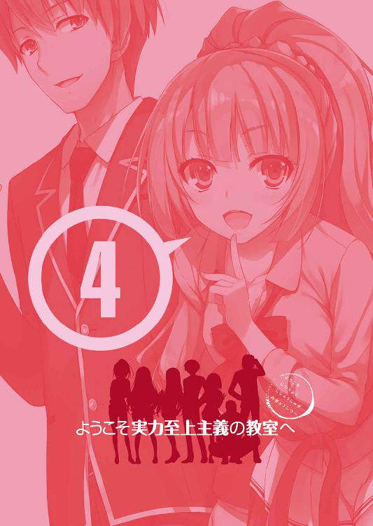

| ようこそ実力至上主義の教室へ 4 <ようこそ実力至上主義の教室へ> (MF文庫J) | |
| 衣笠 彰梧 & トモセシュンサク | |
| KADOKAWA / メディアファクトリー (2016) | |

ようこそ実力至上主義の教室へ４
衣笠彰梧

本作品の全部または一部を無断で複製、転載、配信、送信したり、ホームページ上に転載したりすることを禁止します。また、本作品の内容を無断で改変、改ざん等を行うことも禁止します。
本作品購入時にご承諾いただいた規約により、有償・無償にかかわらず本作品を第三者に譲渡することはできません。
本作品を示すサムネイルなどのイメージ画像は、再ダウンロード時に予告なく変更される場合があります。
本作品の内容は、底本発行時の取材・執筆内容に基づきます。
本作品は縦書きでレイアウトされています。
また、ご覧になるリーディングシステムにより、表示の差が認められることがあります。
○軽井沢恵の独白
結局のところ、私はこの学校に入っても何も変わることはなかった。
違う、変わるつもりなんて最初からなかったのかも知れない。
良い意味でも悪い意味でも、あの時のまま。
その理由はとてもシンプルだ。
私は私のことをよく理解しているんだ。長所も短所も、全て理解している。
男子からも女子からも、好かれていないことも分かっている。
全部分かっているのに変わろうと思えない。
でも、それで構わない。
だって私は、それを苦痛だと感じなくなってしまったから。
何故なら、私はそれを望んでいるのだから。
客室に備え付けられたシャワー室から出た私は、肌を濡らす水滴もそのままに全裸のまま鏡の前に立つ。もう何度、鏡を叩き割りたいと思っただろうか。
脇腹の古傷を見るたび、おぞましい過去が顔を覗かせる。
眩暈と吐き気を覚え、洗面台に手をついて私は嘔吐く。
どうして私が、あんな目に遭わなければならなかったのだろう。
どうして私が、今もこんな風に苦しまなければならないのだろう。
どうして、どうして、どうして。ずっと繰り返した言葉。
意味のない言葉。
過去は変えられない。
誰にも変えることはできない。
神様は残酷だ。
あの日の悪夢を境に人格は破壊され、青春も、友達も、そして自分をも失った。
その間違いを、正さなければならない。
どれだけ嫌われても、また同じ目に遭うより、いい。
青春なんていらない。
友達なんていらない。
大切なのは、自分自身を守ること。
そのために必要なことは、何でもする。
私は───寄生虫。ひとりで生きることの出来ない、弱い生き物なのだ。
○穏やかな日常は突然に......
無人島での特別試験が終わってから３日。オレたち高度育成高等学校の生徒を乗せた豪華客船では、何事も起きることなく、平穏な時間が保たれていた。
無人島でのサバイバルなど、青春を謳歌する学生にとっては、冷静な判断を失いがちな場であったことは今更言うまでもないことだろう。
オレたち男子は基本的に野獣であり性に飢えた肉食動物だ。きゃっきゃうふふと群れる草食動物ならぬ女子たちを見ながら、男子一同はこの先運命的な何か進展があるのではないかと期待してしまっている一面がある。ここは全てが揃った豪華客船、嫌なことも忘れられる夢のような旅行の最中。誰かと誰かが恋に落ちても不思議ではない。
それとなく聞こえてくる噂でしかないが、幾つかカップルが誕生したとの話も耳にしている。残念なことだがそんな浮ついた話がオレにあるはずもなく、孤独な時間が大半だ。
試験前と何も状況は変わらない。
いや......オレを取り巻く環境は確実に変化し始めているか。
不本意ながら、入学時からの目論見は大きく軌道修正を強いられることになっている。元々、オレはある理由からこの学校を選んで入学した。
『卒業までの間、世間との接触を強制的に絶ち外に出ることを禁じる』
その校則が目当てだった。
ところが今『ある男』が無理やり外の世界から接触を計ろうとしている。その兆候があると担任である茶柱先生から告げられたのだ。そして、あろうことか茶柱先生はＡクラスを目指すための協力をしなければ強制的にオレを退学に追い込み、この楽園から追放すると脅してきた。聖職者にあるまじき非道な話だが、力なきオレには受け入れる以外の選択肢がない。何故なら、その話が噓か真かを確かめるだけの方法がないからだ。となれば、嫌でも真実だと想定して行動しなければならなくなる。
だが、いつまでも担任の思惑通りに動くつもりはない。必要な情報を揃えつつ、場合によってはこちらから仕掛ることも検討していく必要があるだろう。
チリッと頭の奥で悪魔が囁く。やられる前にやればいいだけのこと。
辞職に追い込む手立ては幾らでも思いつくだろう？ と。
そんな物騒な考えは本当に一瞬。すぐに平和主義者のオレらしく平常心を取り戻す。
「はあ......オレに地軸を動かすだけのパンチ力でもあればな......」
そうすればこんな小さなことで悩むこともなく堂々と生きていけるのに。
ありもしないドラゴンなボールの世界を妄想しながら、窓の外を見る。
無人島での試験終了後から早くも３日経ったが、状況は何ひとつ変化していない。
サバイバル終了直後は、大半の生徒がこれで試験終了だとは思っておらず、学校側が何か仕掛けてくると踏んでいた。ところがまるでその気配が無い。本当に夏休みを迎えたかのように穏やかで平穏、そして楽しい旅行を満喫することになっている。
当然生徒たちの気も緩み始め、試験はこれで終わったのだと楽観ムードに切り替わりつつあった。２週間の旅行のうち、後半の１週間は生徒のためを考えた純粋なバカンスだったと。旅行初日から無人島生活を強いられたからこその緩みだ。その考えは悪いとも言えない。そういう時こそもっとも油断、危ないのが世の常だと気構えを持っていたからって、上手くやり過ごせるわけでもない。リラックスしていた方が好成績を残せることもある。
「あれ？ もしかしてずっと部屋にいるの？」
客室の窓から見える海の景色を独り眺めていたオレに、同じ船室でのルームメイトの１人である平田洋介という男子生徒が話しかけてきた。
「特に出歩く理由もない。特別遊ぶ相手もいないしな」
「そんなことはないんじゃない？ 須藤くんたち、堀北さんたちがいるよね」
確かに、一応『友達』のカテゴリには入れてもらってるしこちらも入れているつもりだ。
ただ友達カテゴリの中でも最下層の方に位置していれば、他の友達と扱いは違ってくる。
遊びのたびに誘う相手がいれば、10回に１回誘う相手もいるだろう。
オレは当然、その10回に１回しか呼ばれない存在。
「もう少し綾小路くんに積極性があれば友達が出来ると思うよ。余計なお世話だけどね」
この平田という男は多くの生徒の絶大な支持を受けている人気者だ。
特に女子から全幅の信頼を寄せられており、軽井沢という彼女もいる。そんな幸せいっぱいの男には、積極性を出せない男の苦しみなど分からないだろう。
「綾小路くんは考え方もしっかりしてるし、後はちょっとしたキッカケじゃないかな」
そんな優しさのような残酷な言葉はいらない。
女の子が言う『えー、◯◯君ってモテそうなのにー』って言葉くらいいらない。『じゃあ付き合ってよ』と言ったら『それはちょっと......』みたいな流れくらいいらない。
友達も彼女も出来ないから、こうして１人で過ごしているんだ。バカヤロウ。
「12時半から軽井沢さんたちと合流してお昼ごはんを食べる予定なんだけど、一緒にどうかな？ 綾小路くんが来れば盛り上がるよ」
「軽井沢、たち？」
「うん、他に女子が３人くらい。嫌かな？」
少しだけ考える。正直に言えば軽井沢とは少し接点を持ちたいと思い始めていたからだ。
だが今このタイミングで急ぐ必要はない、か。それに他の女子も同伴では会話を弾ませるどころか、盛り上がることは絶対なく冷え切った場になるとしか思えない。
「遠慮しとく。オレは別に軽井沢たちのグループと仲がいいわけじゃないし」
１学期が終了した時点で、もはやクラスメイトたちの関係性は確立済み。今更どの面下げて新しい交友関係を築いていけというのか。軽井沢たちの嫌がる姿が目に浮かぶ。
人との触れ合いに怯えるオレの感情を知ってか知らずか、平田は傍に腰を下ろした。
「何となく躊躇する気持ちは分かるよ。だからこそ僕を頼ってほしいな」
いつでもどこでも爽やかフェイスなことで。ありがたい申し出だが首を左右に振る。
「待ち合わせまであと10分くらいしかないぞ。オレなんか放っておいたほうがいい」
「そんなに急がなくていいよ。それに、今こうしてるのも楽しいと思ってるし」
はた目にはオレの言葉は強がりや言い訳に聞こえるだろうが、オレは本当に現状にある程度満足している。そりゃ、入学当初は友達１００人出来るかなの勢いで友達が欲しいと切実に感じていた面はあったが、おのずと個々人が落ち着く位置なんてのは最初から決まっているものだ。３バカ、堀北、櫛田や佐倉辺りと話せるようになっただけでもオレの学校生活は悪いものじゃないと、今では素直に納得できている。けれども平田って男は、一人で過ごしている奴を見ると放っておけないらしい。
「じゃあお昼だけど、僕と二人だったらどうかな？ それでも嫌？」
二人きりの室内。ベッドで隣り合わせに座り、オレに真剣な眼差しを向ける平田。
トンと軽く体を押されて倒されたら後はもうどこまでも突っ走ってしまうかもしれない。
「えーと、別に嫌じゃないが......軽井沢との約束があるだろ」
「軽井沢さんたちとはいつでも食べられるよ。でも、綾小路くんとはこうして同じ部屋にもなったわけだし、一緒に食べられる機会は今までほとんどなかったから」
普通、横車を押してでも女子とご飯を食べたいと思うのが健全な男子の思考だ。
だが平田は男と二人で食べることを迷わず優先できてしまう。
もしかして『そっち』の気があるんじゃないかって疑ってしまいそうになるくらいだ。
毎度毎度平田にはクラっとさせられることが多いが、男として理性を保つ。
「あとで軽井沢に恨まれるのは勘弁なんだが」
何とか断ろうとやんわりとした否定を繰り返すが、それが平田の良心を刺激したらしい。平田にはオレのことが生まれたばかりで一歩を踏み出せない震える小鹿に見えたんだろう。
「大丈夫だよ。軽井沢さんはそんなことで恨むような子じゃないから」
いやいや、笑って言ってるがそういう子だろう軽井沢は。幾ら平田の前では猫を被ってると言っても、他の子と接する時にドギツイ性格のは分かってるはずだが。
それも平田からすれば、そんな子じゃないのカテゴリに分類されてしまうんだろうか。
不良生徒を慈悲深く包み込む、夜回り先生を彷彿とさせる。
「うん、やっぱり軽井沢さんに断りを入れるね」
やや強引に平田はそう言って軽井沢に断りの電話を入れる。
止めようとしたが平田に目と手で制されてしまう。
「何か食べたいものの希望とかある？」
通話が繫がるまでの間、平田にそんな風に振られた。
「......何でも食べられる。ただ重いものは避けたいかな」
客船には、数多くのレストランが軒を連ねている。もちろん内容もラーメンやハンバーガーといったジャンクなものから、フランス料理まで幅広い。
まだ昼ということを考えれば極力軽めの食べ物で抑えたいところだ。
平田は本当に電話であっさりと予定が入ったからと軽井沢に断りを告げる。軽井沢の声ははっきりと聞き取れなかったが、平田は強引に話を終わらせて切ってしまった。
「......本当に良かったのか？」
「もちろん。それじゃあデッキに行こうか。軽食中心だから食べやすいしね」
ベッドでくつろいでいたオレを導くように平田はドアを開いた。
声をかけて心配したり、親身になるのはいつも通りだが、乗り気じゃないオレを連れ出すなんて、空気が読める平田にしてはちょっと強引だな。何か裏があるのかも知れない。
「無人島の時は協力してくれてありがとう。綾小路くんには犯人を捜す手伝いをしてもらったりしたのに、満足にお礼も言えてなくてごめんね」
「謝ることじゃない。役には立ててないしな。下着を盗んだ犯人を見つけたのは堀北だ」
「結果的にはそうだけど、嫌がらず協力してくれた綾小路くんには感謝してるよ」
下着の件といえば、と思い出したことがあるので聞いてみることにした。周りに人がいないことをしっかりと確認してから切り出す。
「軽井沢の下着は本人に返せたのか？」
「うん。伊吹さんが犯人だったってこともあって、意外とすんなりね」
先日の無人島試験で起きた窃盗事件。女子である軽井沢の下着が盗まれ一時騒然となった。そしてその下着が男子の鞄から見つかったことでＤクラスの男女の関係性が危ぶまれたが、平田がその下着を保管するなどの機転もあって事なきを得た。なんにせよ良かった。非常にデリケートな部分だからどうなったのか気にはなっていたし。
さすがの平田でも返すタイミングを逸しているのかもと思っていた。
平然と下着を返すような仲になっているとしたら、それはそれで大人の階段をのぼっている証拠かもしれないが。船内のエレベーターから最上階のデッキへ。
数多くの同級生が各々好きな格好で、夏休みを満喫している様子だった。
近くには備え付けのプールもあるため、大胆にも水着で往来している男女の姿もある。すっかり試験ムードは抜けてしまっているがそれも無理はない。無人島で欲求を封じられ抑えつけられた反動がこの現状を生んでいると言えるだろう。
しかも、船内の施設の利用、飲食には手持ちのポイントを払う必要は無い。つまりお金の有無にかかわらず全て無料。遊ぶのも食べるのも全てタダとなればハメを外すなというほうが無理がある。水着や遊泳道具は貸し出しのようだがそれくらい。不満はないだろう。
目的のお店に辿り着くと半数以上の席が埋まっていた。
人ごみに紛れ込むように、まだ空きが残っている席を二人で確保する。
「実は......少し相談があるんだ」
席につきメニュー表に視線を落とすなり、平田は少し申し訳なさそうに話を切り出した。
「相談？」
やっぱり裏があった。それでオレと差し向かいで食事するような時間が欲しかったわけか。それは逆にありがたいというか、誘われる上で納得いく理由だったので文句はない。
「相談者として適さないオレに声をかけるってことは......ピンポイントな内容か？」
話し上手聞き上手に該当しないオレに白羽の矢を立てたのには、理由があるはずだ。
「僕と堀北さんの橋渡し役になってもらえないかな。やっぱりこの先、Ｄクラスが一致団結して頑張っていくのに堀北さんは必要不可欠な人だと思うんだ」
そっち方向の相談、ね。オレが頷くと平田は謝りながらも話を続けた。
「先日、堀北さんの活躍で僕たちＤクラスは思わぬ成果を得た。一気にクラスの士気は高まったと思うし、何より堀北さんを慕う人たちが増えたと思う。これは大きな変化だよ」
「ま、そうだな」
堀北鈴音という少女は、Ｄクラスの生徒で入学後オレの最初の友人でもある。向こうもオレが最初の友人だろうし、今現在も他に友人らしい友人がいない孤高な人物だ。持っている能力は総じて高く文武両道の優等生。欠点は、孤高さが災いして誰とも絡まない性格と、人付き合いが苦手なため高圧的態度をとることが多いことか。
「そんな今だからこそ、僕を含めもっと彼女は皆と仲良くなるべきだと感じている。協力し合えばＣクラスやＢクラス、ううん、Ａクラスにだって上がれるような気がするんだ」
この言葉をもし見知らぬ誰かから聞かされていたなら、都合が良い話だと思ったかも知れない。でも平田は入学から間もない段階で堀北を買っている節があった。最初からポテンシャルの高さに気が付いていたんだろう。嫌味には感じない。
この申し出に対して、手伝っても構わないとは思っている。それ自体は簡単だ。平田と堀北を引き合わせるくらいならオレにでも可能だからだ。でもそれは解決に繫がらない。
「でも、橋渡しして上手くいくなら苦労しないだろ。堀北はそういうやつだ」
こちらがいくら周囲との関係を軟化させてやりたいと思っても、余計なお世話だと突っぱねて終わりだ。むしろ裏で手を回そうとしていたことに気付けば、堀北のことだ。余計に距離を取りかねない。１学期の櫛田のカフェでの行動の対応がそれを実証している。
「うん。もちろん僕も理解はしているつもりだよ。堀北さんは綾小路くん以外には心を開いていない。それを無理に開かせるつもりもないしね。だから僕の意思を綾小路くんなりに変換して伝えてほしいんだ。僕の存在を伏せたうえでね」
そして、それをオレが堀北に伝えるということか。
逆もまた然りなんだろう。堀北の意見を聞いたオレが平田に詳細を伝える。
そうすれば堀北に知られることなく、見えない協力関係を築けるってことだ。
「聞くだけなら簡単だが、そう単純でもないだろ。普段オレは堀北の言いなり......っていうと誤解があるが、特別意見をぶつけたりしてるわけじゃない。それがいきなりズバズバ物を言い出せば怪しいと感じるだろ。的外れな意見ならともかく、おまえの意見なら正当性や理屈もちゃんとしているだろうし」
「けど今はそれ以外に浮かばないんだ。僕と堀北さんが話し合いを持ったところで、すんなりと彼女を説得できる自信は正直に言って僕にはない。苦肉の策だよ」
「この段階でそんな策を打つのは早計じゃないか？」
堀北と組みたい気持ちは十分伝わったが、そうであるなら堀北と正面から向き合うしかない。それが困難なことであることはわかるが、他人と協力し合うとはそういうことだ。
そんな当然なこと平田は分かっていそうなものだ。こいつほどクラスのことを考え、友情を大切にしている奴はいないんだから。そう考えれば今回の提案には疑問点が残る。
何かを焦っていて本来の自分を見失っているような。自然と無人島での平田の異様な様子を思い出す。Ｄクラスに度々訪れるトラブルに巻き込まれ結束が危ぶまれた時、平田は半ば放心状態になっていた。あれは只事じゃなかったからな。
オレは食べやすいサンドイッチとドリンクを注文する。デッキ傍のプールで泳ぐ生徒たちや、水着姿のまま食事している者もいる。生徒たちは非常に楽しそうだ。
池や山内がいれば食事よりも水着女子に視線を奪われていたことだろう。目の前の平田は飯にも女子にも目もくれず、こちらに視線を向け考え込んでいた。
「そう、だね。綾小路くんの言う通りだ。僕の考えは浅はかだったかもしれない」
自分の判断ミスをすぐに認める素直で柔軟な対応。これもまた平田の魅力だろう。
それでも堀北と協力を築きたい思いは強いのか、諦めるような様子は一切見せなかった。
「アプローチ方法をしっかりと考えるべきかも知れないね。堀北さんはちょっと気難しいタイプだけど、綾小路くんはどうやって仲良くなったの？」
平田は堀北と関係を深めるために、まずは友達として触れ合っていきたいようだ。
その前向きさは正しいし、オレに出来ることがあれば手を貸してやりたいが......。
「この点については定期的に否定させてもらってるが、別にオレは堀北と仲が良いわけじゃないぞ。最近やっとこさ友達として認めてもらえたかどうかってくらいだ」
「堀北さんが仲良くしているのは綾小路くんだけなんだから。君は特別な存在なんだよ」
特別な存在ねえ。こっちがようやく１人と仲良くなってる間に、40人と仲良くなる男が言うセリフじゃない。それとも40人と仲良くなれるからこそ、特定の生徒と仲良くなれず、もどかしさを感じているのかもしれないが。
「そんなに焦る必要はないんじゃないか？ まだ１学期が終わったばっかりだしな」
結束力は基本的に同じ時間を共にしなければ強くなっていかないものだ。あるいは無人島試験のように突発的かつ過酷な状況下に置かれて初めて生じるもの。もちろん行動することで高まる場合もあるだろうが、大抵そんなものは脆く崩れ去ってしまう。
「堀北が急いで友達を作ろうとするタイプじゃないってことも加味した方がいい」
そう言ってやることが一番平田の理解を得られると思い伝える。
「......そうかも知れないね」
やはり焦っていたのかもしれないと、平田は再び反省の色を見せた。
「彼女の気持ちも考えず、僕は一方的な思いをぶつけようとしていたかな......」
自分に言い聞かせた平田は今度こそ納得がいったのか、大きく頷いて笑みを見せた。
「ごめんね。ご飯に誘っておいて勝手に相談して。さ、食べようか」
気持ちを切り替えたのか、少しして到着した食事を二人で食べ始めた。だがすぐ、平田は誰かが近づいてくるのに気づいたようで、戸惑ったような様子でオレに目配せしてきた。
「あー、やっぱりここにいたんだ、平田くんっ。一緒にご飯食べよっ」
嬉しそうな声をデッキに響かせながら、軽井沢率いる女子たちがやって来たのだ。
「えーっと......軽井沢さん、さっき電話で断りを入れたと思うんだけど......？」
困った様子の平田を余所に、軽井沢たちは別のテーブルの椅子を引っ張り出してオレを押しのけ平田を囲い込んだ。落ち着きのあった食事場が途端に騒がしくなる。コミュニケーション能力に難のあるオレだが、案ずることなかれ。こういう時の対応には既に慣れている。１学期で身に着けた特技『速やかな退散』をするべきだろう。
自分の食べ物を手に取ると、音を立てず静かに立ち上がった。平田とは一瞬目が合った気がしたが、すぐ女子たちに囲まれその姿は見えなくなる。
仲良くなることに重点を置いたことで生じる数少ない欠点だな。自分の時間が他人のために割かれて一人で過ごす時間を満足に取れない。個人的な悩みを持ったとしても、軽井沢たちに相談できないから胸の内で抱えることになる。
１
軽井沢に確保された平田を見捨て、特に遊ぶ相手も話す相手もいないので部屋に戻ることにした。エレベーターを使わず階段から船内に戻り自分の部屋がある３階に戻ってくると、廊下に点々と染みが出来ているのを見つけた。
その染みはずっと先、オレの部屋がある先に伸びているようだった。跡を追うように歩いていくと、そこには上半身裸で海水パンツを穿いた男が優雅に歩いていた。
「お、お客様！ 困ります濡れたまま廊下を歩かれては！」
非常事態に気がついたボーイが、慌てて男の下に駆け寄る。何故か手にはタオルが。準備が良すぎるというかなんというか。常に持ち歩いているかのような周到ぶりだ。
「はっはっは。見つかってしまったようだねぇ」
「見つかったも何も、これで４回目ですよ。何度もお伝えしておりますが、プールから上がられた後は体を拭いてから船内にお戻り下さいっ。他のお客様のご迷惑となりますっ」
どうやらすでに常習犯のようだ。そりゃボーイもタオルを事前に用意するわけだ。
「迷惑？ しかし私は一度も迷惑だと声をかけられた記憶はないけどねえ。生憎と私は物心つく頃から体は拭かない主義なのだよ。昔から言うだろう？ 水も滴るいい男、とねえ」
バッと濡れた髪をかきあげ、水滴を辺りに飛び散らせた高円寺。それを見たボーイは慌ててタオルで廊下や壁を拭き取った。
その慌てぶりが面白かったのか、高円寺は足を止めた。
「ペンや紙は持っているかな？」
「え？ あ、は、はぁ......一応職業柄メモ帳とペンは持ち歩いてますが......」
話の流れが理解できないまま、ボーイはおそるおそるボールペンを取り出した。
「君は著名人のサインが、時に思わぬプレミア価格を付けることを知っているかな？ 海外では数百万から数千万の値が付いたこともあるそうだよ」
「それが......なにか？」
サラサラとメモ帳に何かを書き終えると、ボーイに突き返した。遠目にだが紙には読みづらい字で『高円寺六助』と書かれてあるのが見えた。
「な、何ですかこれ......」
「一目瞭然だろう？ サインだよサイン。たとえ安物のメモ帳であっても、将来きっと値が付くことになる。君にプレゼントするよ、ありがたく保管したまえ」
どうやら、高円寺は献身的？に仕事をしていたボーイにお礼のつもりでサインを書いたらしい。しかしありがた迷惑とはこのことか、ってくらい全く欲しくない。
むしろボールペンとメモ帳の消耗分、損したくらいだ。
「そう怪訝そうな顔をしないでくれたまえ。私は将来日本を背負って立つ男になる。その時を大船に乗ったつもりで待っているんだね。もちろん、今乗っているこんな民間船よりも遥かにハイグレードな豪華客船さ」
豪華客船は豪華客船でも、沈み行く運命にあるタイタニック号じゃなきゃいいが。
高円寺は満足げに笑う。啞然としたボーイはもはや自由気ままな男の暴走を止める自信を喪失したのか、点々と濡れる床を見つめる。もう関わるのが嫌で仕方ない様子だ。
噂とは一人歩きするもので、この身勝手な性格に振り回されるのはごめんだと、同級生の誰も高円寺を注意しない。要はボーイと同じ現象を、既にクラスメイトは体験したのだ。
平田は高円寺を見かければ多少声をかけるだろうが、叱ることはないだろうし、もし叱ってもスルーされるかボーイのように適当にあしらわれるのが関の山だ。
高円寺という男は毒みたいな存在で、敵味方問わず触れた者は苦しむことになる。
面倒ごとに巻き込まれるのを避けようと、二人の脇を静かに通り過ぎる。
君子危うきに近寄らず。
「おや？ 綾小路ボーイじゃないか。偶然だねえ」
げ......。思わずそんな言葉が喉から出そうになった。まさか声をかけられるとは。ターゲットが自分からオレへと移ったことに気付いた瞬間ボーイは満面の笑みを浮かべる。
あ、解放される！ と。
いやいや、それはクルーの一員としてどうなんだ......。どんな客であっても最後まで徹頭徹尾奉仕するべきだろう。育てるだけ育てておいて、飼いきれなくなったペットの魚を無断で川に放流するようなもの。まして外来種の凶暴な高円寺は川の在来種を一匹残らず駆逐、食い荒らしてしまうだろう。
「何か用か？」
「いやいや、特に用はないさ。あくまでもスクールメイツとして話しかけたに過ぎないよ。分不相応とはいえ君は私のルームメイツでもあるんだからねえ」
ブワッと再び髪をかきあげると、散弾銃のように水滴がオレの顔や制服に飛び散ってきた。もちろん本人は自分の髪のかきあげかただけを気にしており、その被害者のことなど微塵も気づいていない。
自分も被害にあったにもかかわらずボーイはニコニコとオレの惨事を見守っている。
うんうん、君の気持ちは痛いほどわかるよー......ではない。
「では私はこれで失礼します。今後は気を付けてくださいね」
ボーイは逃げの一手を打つと同時に注意の一言を残して、最低限の役目を終えたつもりのようだ。もちろんこの場で高円寺と二人きりにされるのはごめんだ。
「高円寺と何を話してたんですか？」
一瞬、ボーイの顔が笑顔から怒りの顔に変わったが、高円寺がボーイに目を向ける瞬間には再び笑顔に戻った。まるでアシュラマンのようだ。
「いえ、えーっと、ご覧のように濡れておられるようでしたので、タオルをと───」
「つまり注意しに来たってことですね。それはお邪魔しました、じゃあ自分はこれで」
ボーイに渡されたボールを強引に剛速球で叩きつけ返し、逃げる。
「ボーイは私に注意をしに来たのかな？」
「あぁいえ、そのぉ、ですから......」
何とか高円寺から逃げ切ったオレは自室へと戻ろうとする。
「しかし......このまま部屋に戻ると高円寺と鉢合わせか」
そうなると、ちょっと面倒な空間になりそうだ。この旅行で何度か二人きりになる時間があったが、信じられないくらい居心地が悪かったな。
気まずい雰囲気を避けたかったオレは、回れ右。部屋に戻る時間をずらすことにした。
同室の平田や幸村が戻りそうな時間を狙って戻りたい。近くの案内板には、船内の地図が分かりやすく壁に張り出されている。たかだか地図にもかかわらず金縁の額に入れられており、豪華客船らしいあしらいだ。ぐるっと暇つぶしできるルートを頭で描き、すぐにエレベーターを使って階層を変え２階へ降りる。
船は全９階層と屋上に分けられている。地上５階地下４階から作られていて、１階はラウンジや宴会用のフロア、屋上にはプール、カフェなどが設置されている。３階から５階に当たる部分は客室があるフロアとなっている。３階が男子で４階が女子だ。男女は教師も含め明確に分けられている。ただ男女間で特に移動の制限は設けられていないため、男子が女子のエリアを通っても問題はない。強いて言うなら、０時以降の滞在と立ち入りが禁止されていることくらいか。ちなみに他のエリアだが、地下１階から地下３階には映画や舞台などの様々な娯楽施設が、船の最下層に位置する地下４階には配電盤室などがあるようだ。地下４階に関しては生徒には全く関係のない場所と言えるだろう。
24時間利用可能なラウンジなどは、深夜だろうと出入りは自由になっているが、学校側からの通達で、近づくことを極力控えるようにとの連絡は受けている。
今歩いている２階エリアは他の客室とは違った雰囲気の部屋がいくつかあるが、どういった時に利用するのかは不明だ。通路も閑散としていて生徒の姿はほとんどない。
と、ポケットの携帯が震えた。
取り出すとメールが届いていた。ある少女からの呼び出しだった。好都合と言うべきか、時間つぶしの予定が入ったってことだ。拒否する事情はひとつもないので快く承諾した。
２
「はあっ......はぁ───っ......はあああ───っ......」
メール差出人である佐倉の下に近づいていくと悩み深そうなため息が繰り返されていた。
「どうしたんだ？」
「わあ！ あ、綾小路くんっ！」
そんなに驚かれるような声のかけかたをした覚えはなかったが、佐倉には不意打ちだったようでいつも丸めている背筋をピンと張って慌てふためいた。
「驚かせて悪いな」
「う、ううんっ。私がちょっと、変に緊張してただけだからっ」
友達との待ち合わせくらいで緊張しているようだと、まだまだ私生活は大変そうだな。
「綾小路くんって、同室の人は平田くんと高円寺くん、幸村くん......なんだよね？」
「オレか？ ああそうだけど、それがどうかしたのか？」
そんなことを聞いてくるとは意外だった。
「うん......実は、その......私、同じ部屋の人とのことで、ちょっと悩んでて......」
ルームメイトとの関係が良好ではないってことだろう。人付き合いの苦手な佐倉らしい。それが深刻な悩みなのは表情を見ていればよくわかる。
「悩んでるってのは、仲良くなりたいのになれないってことか？」
「どうなんだろう......。仲良くなりたい気持ちと一人きりでいたい気持ち、両方ある。だから......ダメなんだろうね、私って」
弱気になっている。声のトーンもそうだが、不安げな瞳を見るだけですぐにわかった。佐倉の部屋のメンバーを知らないオレからすれば、現段階ではアドバイスのしようもない。
「ちなみに同室の人間は誰なんだ？」
「うう......聞いてもらえる？ 篠原さん、市橋さん、前園さん......だよ」
物凄く落ち込んだ様子で、同室になった人の名前を口にする。
何とも個性強いメンバーだった。篠原といえば、Ｄクラスの軽井沢と近い関係にある女子の顔役だ。我が強く男子との口喧嘩にも真っ向から挑む頼りがいのある子だが、合わない相手には容赦ないところがあるからな......。佐倉のことは何とも思っていないと思うが、仲良くしていきたいと思う相手同士ではないだろう。市橋も普段は大人しいが、篠原に似て強気なタイプだ。前園のことはあまり知らないが、喧嘩っぱやく口と態度が悪い印象だ。佐倉にとっては最も苦手とするタイプの一人だろう。このメンバー相手に佐倉が頑張って距離を詰めようとしても、その佐倉の姿勢を気に入らなければ嫌われてしまうことだって十分に考えられる。今まで泣きつかなかっただけ偉い偉いと頭を撫でたいくらいだ。
「でも、どうしてオレに？」
「......綾小路くんなら、何かアドバイス、くれるんじゃないかな、って......」
ぼそぼそと小さく頷く佐倉。
どうやら思わぬ頼られ具合のようだ。そしてすぐに謝罪の言葉を付け足した。
「か、勝手に頼ろうとしてごめんね。綾小路くんも忙しいのにね」
「別にいいさ。相談されたからって困ることはないし。ただ、助けになってやれるかって話はまた別だけどな」
悲しいかな、オレ自身佐倉の同室の誰とも仲良くないため、佐倉を上手く助けてやってくれとも言えない。何か方法がないかと考え込んでいると、客室の扉が開いた。
「あれ？ 綾小路くんと佐倉さん。こんなところで何してるの？」
客室からひょっこりと姿を現したのは、Ｄクラスの櫛田桔梗だった。
佐倉の明るかった表情は途端に雲間に消え、居心地悪そうな雰囲気に変わる。自分の感情をコントロールするのが苦手なのだろうが......。明らかに櫛田が現れたことに対する拒否反応を見せたが、櫛田は全く気にした様子もなく話を続けた。
「あ、邪魔するつもりはないよ？ 友達と合流することになってるだけだから」
「......私、部屋に戻るね」
櫛田が慌てて引きとめようとするも、佐倉は船内へと駆け足で戻っていった。
「うー......ごめんね。バッドタイミングだったね。声かけないほうがよかったかな」
手を合わせて謝る櫛田。別に謝るような理由はなにもない。ただ佐倉が人付き合いを苦手としているだけのことだ。
「そういえば、船に戻ってから初めて櫛田と話した気がするな。色んな子と遊んでるのだけは遠目に確認してたんだが」
櫛田はＤクラスの中でも一番の人気者だ。いや、学年一と言うべきか。
入学式の日に全員と友達になると公言したことを、現時点で完遂しようとしている。佐倉なんかのごく一部の子を除いて、だが。
「今日はＣクラスの子たちと遊ぶ約束してるの。綾小路くんも来る？」
「えっ......参加していいのか？」
「えっ？ 来るの？」
............。嫌な間が出来た。
行ってみたい本音が少し出てしまったが、櫛田もまたその本音に一瞬戸惑ったようだ。
これは社交辞令。つまり社交辞令できちんと断るのが礼儀だ。
「冗談だ。オレが参加するタイプじゃないのは分かってるだろ？」
「もー、だよね。ちょっとびっくりしちゃった。綾小路くんって面白いね」
「そ、そうか？」
本気で面白いと思ってくれたとは思わないが、櫛田が言うと本気に聞こえるから怖い。
「それじゃあ私いくね」
軽く別れの言葉を交わす。と、突如オレと櫛田の携帯が同時に鳴った。
キーンと言う高い音。それは学校からの指示であったり、行事の変更などがあった際に送られてくるメールの受信音だった。マナーモード中であっても音が強制的に出ることから、重要性の高さが窺える。
「なんだろうね？」
櫛田が足を止めて不思議がるのも無理はない。入学後に説明は受けていたものではあるが、今日まで重要メールが届いたことは一度もなかったからだ。その一回目が夏休みとは。
ほぼ同時に、船内アナウンスも入る。
『生徒の皆さんにご連絡いたします。先ほど全ての生徒宛に学校から連絡事項を記載したメールを送信いたしました。各自携帯を確認し、その指示に従ってください。また、メールが届いていない場合には、お手数ですがお近くの教員まで申し出てください。非常に重要な内容となっておりますので、確認漏れのないようお願いいたします。繰り返します───』
「......今届いたメールのこと、だよね？」
「多分な」
それぞれに同時に届いた学校からの通知。
アナウンスに従う形で携帯を操作して開くと、そこには次のことが書かれてあった。
『間もなく特別試験を開始いたします。各自指定された部屋に、指定された時間に集合して下さい。10分以上の遅刻をした者にはペナルティを科す場合があります。本日18時までに２階２０４号室に集合して下さい。所要時間は20分ほどですので、お手洗いなど済ませた上、携帯をマナーモードか電源をオフにしてお越し下さい』
「特別試験、か」
ペーパーテストや体力測定のようなものじゃないよな、さすがに。
無人島サバイバルのような、通常の学校では行わないであろうものと予想される。
それ以外試験内容を示すものは何も書かれていない。このメールから何かを読み取れってことなのか、単純に気構えをしておけってことなのか。今はまだ不明だ。
それよりもメールを見て気になった点があった。集合時刻は18時になっていたが、他に所要時間が20分ほどと非常に短く中途半端に決められていたこと。そして場所の指定が船内の客室と思われる場所なのはどうしてなんだろうか。お世辞にも試験を行うに適している環境とは思えない。
「ちょっと見てもいいか？」
断りをいれ、櫛田の方にも届いたと思われるメールを見せてもらう。基本となる文章は全く同じだったが、指定された場所と時間だけがオレとは全く異なっていた。集合が20時40分で所要時間は同じく20分ほど。そして場所も２部屋ほど離れていた。
「なんでこんな変な呼び出し方するんだろうね？」
「......見当もつかないな」
良い予感がしないことだけは確かだ。
このままクルージング旅行が終わるとは思っていなかったが、その通りらしい。
船内で一学年の生徒全員が集まれそうな場所......映画館やパーティ会場、ビュッフェレストランなどの場所には事前に足を運んでみていた。怪しい動きや、試験内容の推測が出来ればと思っていたが、残念なことにその際は、何の兆候も読み取れなかった。
それが、まさか生徒を隔離、限定して、試験の開始を告げる、とはな。
携帯を通じ堀北にチャットを送ると珍しいことにすぐ既読がついた。大体送ってから半日、ひどい時は数日放置されることも多い。同じタイミングで学校からメールを受信していたからだろうか。それも踏まえて聞いてみる。
『今学校からメール届いたか？』
『届いたわ』
『オレは18時からに指定されていたんだが、そっちは？』
『こっちは20時40分からよ。随分時間が違うみたいね』
「20時40分か......」
櫛田とは同じ時間のようだ。と言うことは、男子と女子で２つに分けられているのか？
現在考えられるのはそれくらいだ。こちらの試験開始時間が18時であることを告げる。
『時間帯が異なるのは気になるわね。試験開始時刻が異なるのであれば、先に問題を知る者とそうでない者とで不公平が生まれそうだけれど』
『今はまだなんとも言えないな』
そんな内容のチャットを交互にしていたが、またすぐに堀北からチャットが届く。
『色々気になることはあるけれど、ひとまず時間になったら足を運ぶしかないわね。あなたの方が早いみたいだから、報告よろしく』
『わかった』
短く返事をしたが、すぐに既読がつく気配はなかった。どうやら携帯を閉じたらしい。
「綾小路くん？」
チャットに集中していたオレの様子が気になったのか、櫛田が様子を窺うように近くで顔を向けていた。櫛田からも、呼び出しが終わったあと話を聞きたいと思ったが、迷惑になるだろうと思いとどまった。しばらく様子を見ることにしよう。
それからでも遅くないはずだ。
３
学校からのメールで呼び出しを受けたオレは、２階フロアに足を踏み入れる。指定の時刻まであと５分ほどのところで、オレは目的地にたどり着いた。
普段生徒がいないはずのこのフロアに、数人の生徒がウロウロしていた。誰かを確認することは出来なかったが、近くの部屋に入っていくのが見えた。その数は１人２人ではなく、時折フロアにやってきては通り過ぎまた別の部屋に消えていく。
「他クラスの生徒か......」
最初は入口の前で待っていようかとも考えたが、既に中では何かしら始まっている可能性もある。何より別の生徒に姿を見られるのも嫌だと思い、行動を開始することにした。ノックするとすぐに返事があった。
「入りなさい」
許可を受け一室に足を踏み入れる。するとそこには、ガッチリした体格のスーツ姿に身を包んだＡクラスの担任真嶋先生が椅子に腰掛けていた。小さなテーブルの資料に目を落としている。
そして真嶋先生の前には、二人の男子生徒が椅子に腰かけ座っていた。
そのどちらも、オレが知るＤクラスのクラスメイトだった。
「残りの２つの椅子の１つは綾小路殿でござったか。コポォ！」
奇妙な擬音を発したのは、外村という生徒で、男子からは博士と呼ばれ慕われている。高校一年生としてはやや太りすぎでメガネをかけている、イメージ的にはオタク系男子だが、外見どおりオタクを地で行く。歴史や機械に詳しく、言動や語尾は理解不能な部分も多いが意外とコミュニケーションの取れる人物だ。
「妙なことになっているな。綾小路」
そして博士の隣に座っていたのは、船でのルームメイトでもある幸村だった。
博士と幸村。二人の関係性は普段強くない。なのに、どういうめぐり合わせなんだろうな。このメンバーで、いったい何が始まるというのか。
「何をしている。早く座りなさい」
顔を上げることもなく真嶋先生に座るよう指示される。無言で幸村の隣へ座った。
気になるのは、オレの隣にもう１つの空き椅子が用意されていることだ。
状況から察するに、先生１人と生徒４人で行われるようだが......。何故少数なのか。
もう一人が来れば見えない４人の共通点やその理由が分かるのだろうか。
「あと一人、到着を待つ。大人しく待っていなさい」
この空気感からして、間違いなく只事じゃない。新たな嵐、試験の幕開け。その予兆。
これが仮に試験の説明であるのなら、既に異質な内容であることは明白だ。通常試験は公平性を期すために全員同時に説明を受けるのが普通だ。それは机の上の筆記試験だろうと、無人島でのサバイバルであろうと同じ。にもかかわらずこの空間は閉鎖環境。少数の意味とは一体なんなのか。それともこちらの心配のしすぎで、その前段階なだけなのか。
ともかく今頭の中であれこれ考えても答えなど出るはずもない。
椅子に腰を下ろすも、３人と先生の間に余計な会話などあるはずもなく重たい沈黙が続く。予定時刻まで多少あるとはいえもう一人にも早く来てもらいたいものだ。どの部屋にも備え付けられているオルゴールの形をした置時計がこの部屋にもあり、無音に等しい室内にカチコチと秒針が動く音が広がっている。やがて約束の18時を回る。微動だにしなかった真嶋先生が、一度だけ時計を見やった。と、ほぼ同時に部屋がノックされる。オレの時と同じように先生が入りなさいと言葉をかけると、ゆっくりと扉が開かれた。
「失礼しまーす」
程なくして間延びした声を発し、軽井沢が室内に入ってくる。Ｄクラスの誰かなのは予想していたが、まさか軽井沢だとは。男子の誰かだと思っていただけに完全に想定外だ。
「え。なにこれ、なんで幸村くんたちがいるわけ？」
それはこっちが聞きたい。この奇妙な組み合わせにオレも戸惑いを隠せない。博士はあまり深く考えてはいない様子だが、幸村も怪訝そうだ。
「時間厳守だと伝えておいたはずだ、遅刻だぞ。早く席につきなさい」
「はーい」
オレたちの存在、そして真嶋先生の言葉にやや不服そうに返事をして軽井沢が椅子の前に。そしてこちらをチラリと見ると、少しだけ椅子を持ち上げオレから距離を離して腰を下ろした。数センチの開きだが、１ミリでも距離を広げられると若干落ち込むな......。
「Ｄクラスの外村、幸村、綾小路、軽井沢だな。ではこれより特別試験の説明を行う」
メールが来た時点で推測できていたことだが......やはり試験の説明だったか。
しかしこの４対１という謎のメンバー。個室の状況。面倒な予感しかしない。
「ちょ、ちょっと待ってよ。意味わかんないんですけど、試験の説明ってなに？ だってもう試験は終わったじゃん。それに他の人たちは？ おかしいんですけど」
黙って人の話を聞けないのか、即疑問を口にする軽井沢。
こいつはちゃんとメール文を読んだのだろうか。
「今の段階では質問は一切受け付けない。黙って聞くように」
案の定真嶋先生は呆れたような冷ややかな視線を軽井沢に送った。
学校側がそんな疑問に易々と答えてくれるわけがないな。
「うわ出た。すぐそれなんだから」
普段から真嶋先生は生徒たちから冷たいと言われることが多い。それはこの説明の場においても同じだった。茶柱先生も冷淡、冷静で肩入れをしない先生だが、この真嶋先生もまた特別Ａクラスに肩入れを見せるような先生じゃない。ただ決定的に茶柱先生と違うのは、やる気を見せず非協力的な茶柱先生に対し、真嶋先生は常にフラット。誰に対しても同じような一定距離を取っているところだろうか。
「今回の特別試験では、１年全員を干支になぞらえた12のグループに分け、そのグループ内での試験を行う。試験の目的はシンキング能力を問うものとなっている」
干支になぞらえた12のグループ？ 要はＤクラスを３つのグループに分け、12ある干支の適当な３つに当てはめるってことだろうか。
そして問われるのは『シンキング』。
つまり考える力、考え抜く力といった意味合い。それが関係している試験か。
「シンキング、って何？」
黙っているように言われたばかりの軽井沢が、再び質問する。
もはや反射的に聞いてしまうんだろうな。
「言っただろう、質問は受け付けないと」
再び真嶋先生に注意され、軽井沢もさすがに状況の重さを感じたようだ。不満な様子が露骨に表情に出ていたが、口を閉ざして聞く姿勢を見せた。
幸村と博士も、どこまで真剣に考えているかは分からないが静かに聞き入っている。
「社会人に求められる基礎力には大きく分けて３つの種類がある。アクション、シンキング、チームワーク。それらが備わった者が初めて優秀な大人になる資格を得るのだ。先の無人島の試験は、チームワークに比重が置かれた試験内容だった。しかし、今回はシンキング。考え抜く力が必須な試験になる。考え抜く力とは即ち、現状を分析し、課題を明らかにする力。問題の解決に向けたプロセスを明らかにし、準備する力。創像力を働かせ、新しい価値を生み出す力。そういったものが必要になってくる」
丁寧な説明だったが、一口に説明されたことで３人の頭の上にはクエスチョンマークが複数浮かんでいる様だった。それはオレも同じだ。まだ理解できない面が多い。
「そこで今回の試験では12のグループに分け、試験を行うとなったわけだ」
そして一呼吸置き、軽井沢の待ち望んだ言葉がやってくる。
「ここまでで何か質問は？」
「全然意味わかんないんですけど。もっと分かりやすく説明してよ。12個にグループを分けるってのは分かったけど、じゃあなんであたしがこの連中と一緒にいるわけ？ 平田くんは？ 他の女子は？ それに試験の中身もわかんないし。教えてよ。じゃなくて、くださいってば」
強引に最後だけ丁寧に言い直したが、何ひとつ敬語として成立していない気がする。
だが軽井沢の疑問ももっともだ。質問を受け付けると言ったものの、ここまでの曖昧な説明で聞きたい内容などごく限られている。集まったメンバーの共通点や他の人間がどうしているのか、そして明らかに少ない人数などくらいしか聞けることがない。
もしクラスを３グループに分けるのなら、12～15人くらいをひとまとめにして説明をするべきなのに、それを行っていない。単なる部屋の大きさの都合か？
いや、この客船には中規模の人数を集められる部屋は複数あるはずだ。
つまりは───わざわざ小分けして呼び出す理由があるということだろうか。
「まず当然のことだが、ここにいる４人は同じグループとなる。そして今この時間、別の部屋でも同じように『君たちと同じグループとなる』メンバーに対して同時に説明が行われている」
オレたちと同じグループになるメンバーだって？ その言葉を聞き一つの合点がいく。
この場に４人しかいないこと。残りのメンバーはいくつかの部屋に分けられて説明を受けていること......つまりこの試験、仲間になる残りの生徒たちは......。
「それならメンバー全部集めて一気に説明した方が早くて楽じゃん。それと、この３人と同じ理由は？ なんであたしが、この気持ち悪......男子たちと一緒のチームなわけ？ 正直嫌って言うか、平田くんがいいな」
自分勝手にペラペラと話す軽井沢に、ついに我慢していた幸村がキレた。
「少しは黙って話を聞いたらどうだ。もう試験は始まってるかも知れないんだ。余計なことを言って減点されたら責任は取れるのか？ 無人島の時だって、おまえは人一倍足を引っ張ってたんだ。これ以上クラスに迷惑をかけないでくれ」
「はあ？ いつどこであたしが迷惑かけたっていうわけ？ マジムカつくんですけど」
男女のいがみ合う光景は先の試験でもよく見た光景だ。オレも博士も無言でやり過ごす。
「二人とも落ち着け。まず幸村の心配は杞憂だ。今はまだ試験は開始されていないため影響はない。それに今回の試験は、そういった態度での採点はそもそも行う予定はない」
「ほーら。これでわかったでしょ」
どうだと言わんばかりに軽井沢は得意げに幸村を見下ろした。悔しそうに睨み付ける幸村。声を荒らげるわけにもいかないと堪えているのか。
「ただし軽井沢。いつまでも教師への態度を改めない場合には調書として記録を残すことになるかも知れない。そうなればよろしくないことくらいはわかるだろう？」
「う───」
今度は幸村が声を出さずに鼻を鳴らし、軽井沢を小ばかにする。小学生同士の取っ組み合いに似た争いに真嶋先生は頭痛がしたのか軽く額に指をやった。
「いいか、君たちがグループを組むことは確定事項だ。好き勝手に変えられるものではない。こんなところで仲たがいしているようでは試験で結果を残すのは難しいだろう」
「もー！ 最悪じゃん！ ３人とも苦手だし！ 平田くんがよかったのに！」
「ふふっ。３人寄れば文殊の知恵ともいいますし、３人集まれば平田殿にもなれるかもしれませんですしおすし」
「はあ？ きも。あんたらが１００人２００人集まったって、平田くんの髪の毛一本分にもならないんですけど」
バカにするのは別に構わないが、本人を目の前にしてはっきりと言われると悲しいものがある。軽井沢は女子同士で集まるとき以外は、四六時中平田にべったりくっついているからな。確かに代役は務まらないだろうけど......。
「はあ......とりあえず後で平田くんに報告しとこ......」
嫌そうにため息をついて、軽井沢はオレたちを一瞥して目を逸らした。
相手にするだけ面倒だと思ったんだろうが、それは幸村にしても同じだろう。
「そろそろ満足したか？ 説明を続けさせてもらうぞ」
「はいはい。グループを分けるのはわかりましたけど、なんでその説明を受けるのがあたしたち４人なんですか。そのグループが集まった時にすればいいだけだと思うんですけど。陰謀とか嫌がらせとかそんなんならマジやめてほしいんですけどー」
早口かつ無感情に、せめてもの嫌味のつもりか軽井沢がまくし立てる。
「どうやら少数で集められたことが気になって仕方ないようだな。ならばその疑問に答えてやろう。陰謀論も嫌がらせもない単純な話だ。グループは１つのクラスで構成されることはなく、各クラスから３人から５人ほどを集めて作られるものになるためだ。事前に説明していなければ混乱を来たす恐れがあるからな」
やはりそれが、少数で部屋に集められた理由だったか。
まだ３人とも話の意味が理解できず少しの間真嶋先生の話を思い返すように沈黙した。
もちろんオレにとってもすぐに消化できるような話じゃない。
部屋に備え付けられた時計の秒針の動く音がまた大きく聞こえだす。
「ちょ、ちょっと待ってよ。なにそれ、ますます意味わかんないんですけど。他のクラスとグループ組むって、めちゃくちゃじゃない。敵同士じゃないわけ？」
「そうです先生。俺たちは今までそうやって他クラスと競ってきたんです。ここに来ていきなり他クラスとグループを組むというのは理解に苦しみます」
軽井沢たちの言いたい事もわからなくはないが、ルールは学校側が決めるもの。
「今まで競ってきた？ おまえたちの学校生活は始まったばかりだ。この段階で右往左往しているようでは先が思いやられるぞ幸村」
「う......し、失礼しました」
「今考えるべきは理解することではなく考えることだ。君たちの配属されるグループは『卯』。ここにそのメンバーのリストがある。これは退室時に返却させるので必要性を感じるのであればこの場で覚えておくように」
渡されたハガキサイズの紙。そこにはグループ名と合計14名の名前が記載されていて、真嶋先生の言葉通りオレたち４人を除いた生徒はすべてＡ～Ｃクラスで構成されていた。
卯とは聞かされたものの、グループ名には括弧で同じ意味合いを持つ『兎』とも書かれてある。ここは読みやすい方で使い分けた方が良いだろう。
Ａクラス・竹本茂 町田浩二 森重卓郎
Ｂクラス・一之瀬帆波 浜口哲也 別府良太
Ｃクラス・伊吹澪 真鍋志保 藪菜々美 山下沙希
Ｄクラス・綾小路清隆 軽井沢恵 外村秀雄 幸村輝彦
中にはオレが知っている生徒の名前もある。Ｂクラスの一之瀬。Ｃクラスの伊吹だ。
どうやらこの二人はオレと同じグループらしい。
今の段階ではどんな試験になるのかの想像はつかない。軽井沢や幸村が懸念するように、他クラスと組まされる状況で競い合うことなど出来るのだろうか。
隣に座る軽井沢の様子を横目に窺うと、少し戸惑ったような雰囲気を見せていた。
伊吹と同じグループになってしまったのは、数奇な運命としか言いようがない。
「安心しろ。疑問に思っていることは今から説明する。恐らくそれで理解できるだろう」
恐らく、と付け加えたのは、これまでの軽井沢の発言を聞いていれば仕方のないことだ。真嶋先生はこの不可解な組み合わせグループの理由を話し出す。
「今回の試験では、大前提としてＡクラスからＤクラスまでの関係性を一度無視しろ。そうすることが試験をクリアするための近道であると言っておく」
「関係性を無視する......ってなに？」
「頼むから黙って聞いてくれ軽井沢。集中して試験の内容が聞けないじゃないか」
都度都度口を挟む軽井沢に、幸村が勘弁してくれと息巻く。
「今から君たちはＤクラスとしてではなく、兎グループとして行動をすることになる。そして試験の合否の結果はグループ毎に設定されている」
......少しずつ理解できるようになってくるが、まだ全貌は見えてこない。
「特別試験の各グループにおける結果は４通りしか存在しない。例外は存在せず必ず４つのどれかの結果になるよう作られている。分かりやすく理解してもらうために結果を記したプリントも用意してある。ただし、このプリントに関しても、持ち出しや撮影などは禁止されている。この場でしっかりと確認しておくように」
４人分用意されていた紙の端はヨレて少しくしゃくしゃになっている。
恐らくオレたちの前に呼ばれた生徒たちが目を通したんだろう。
書かれてある基本ルールは以下の通りだった。
『夏季グループ別特別試験説明』
本試験では各グループに割り当てられた『優待者』を基点とした課題となる。定められた方法で学校に解答することで、４つの結果のうち１つを必ず得ることになる。
○試験開始当日午前８時に一斉メールを送る。『優待者』に選ばれた者には同時にその事実を伝える。
○試験の日程は明日から４日後の午後９時まで（１日の完全自由日を挟む）。
○１日に２度、グループだけで所定の時間と部屋に集まり１時間の話し合いを行うこと。
○話し合いの内容はグループの自主性に全てを委ねるものとする。
○試験の解答は試験終了後、午後９時30分～午後10時までの間のみ優待者が誰であったかの答えを受け付ける。なお、解答は１人１回までとする。
○解答は自分の携帯電話を使って所定のアドレスに送信することでのみ受け付ける。
◯『優待者』にはメールにて答えを送る権利が無い。
○自身が配属された干支グループ以外への解答は全て無効とする。
○試験結果の詳細は最終日の午後11時に全生徒にメールにて伝える。
これが基本的なルールとして目立つように書かれてあった。更に細かく、ルールの説明や禁止事項などについても記載されている。無人島の試験よりも定められている項目や細かな注意書きが多い。
そして、ここからがその４つの定められた『結果』というやつだ。
◯結果１・グループ内で優待者及び優待者の所属するクラスメイトを除く全員の解答が正解していた場合、グループ全員にプライベートポイントを支給する。（優待者の所属するクラスメイトもそれぞれ同様のポイントを得る）
◯結果２・優待者及び所属するクラスメイトを除く全員の答えで、一人でも未解答や不正解があった場合、優待者には50万プライベートポイントを支給する。
実に一癖も二癖もありそうなルールだな......。何より内容説明を受けていないため、試験の仕組みがまだはっきりしない。博士と軽井沢は分かりやすく何度も首を捻っている。
それを見ていた真嶋先生は変わらぬ口調で補足説明を始めた。
「この試験での肝は１つだ。それを理解すれば何のことはない。その肝とは『優待者』の存在だ。グループには必ず優待者が１人だけ存在する。そしてその優待者の名前が試験の答えでもある。簡単な話だ。例えば幸村、君が優待者として選ばれたとしよう。兎グループの答えは『幸村』となる。後はその答えをグループ全員で共有するだけ。そして試験３日目の最終日午後９時に試験が終わった後、午後９時30分から午後10時の間にだけ解答を受け付けるため、グループ全員が『幸村』と記載して学校にメールを送ればいい。それでグループの合格、結果１が確定し全員が報酬50万ポイントを受け取るという仕組みだ。更に優待者には結果１に導いた褒賞として倍の１００万ポイントを支給する」
「ひゃ、ひゃくまん!? すごっ......」
「全員が50万ポイントも貰えるのか......。しかも優待者なら倍......」
これはどのクラスの誰であっても欲しいと思える凶悪な額の報酬だ。優待者はその倍の報酬を受け取るため、学年でも資産家として、一気にトップに躍り出るだろう。
「そして結果２だが......これは優待者だと学校から知らされた者が、そのことを誰にも教えない、あるいは噓の優待者へと誘導するなどして、試験終了時まで正体を悟られなかった場合だ。文面に書かれてある通り優待者にのみポイントが与えられる。その額は５０万ポイントだ」
これは試験として成立しているのか？ 結果１でも結果２でも、大げさに言えばそれほど違いはない。何故ならどちらにせよ優待者のクラスは大金を手に入れる。他クラスにポイントを与えたくない理由以外では結果２を選ぶメリットがないのだ。
「この優待者の役目って羨ましいっていうかずるいんだけど！ こんなの選ばれなかったら損じゃん！ どっちにしたってポイントが貰えるし！ しかも一つは１００万も！」
軽井沢は自分が優待者に選ばれたくてたまらないようだ。
それは当然の反応だな。優待者というだけあって最初の時点で扱いが特別だ。
いや、あまりに優待者が得すぎる。有利だからこその『優待者』か？
しかし結果は２ではなく４つ。明かされていない残り２つにこそカラクリがあるはずだ。
「先生３つめと４つめの結果とは？ その条件がわからないんですが」
「説明した２つの結果は理解したか？ これが分かっていなければ次に進めないのでな」
「ええ、大丈夫です......教えてください」
一呼吸置いた真嶋先生はこう口を開いた。
「残りの結果に関してはプリントの裏に書かれてある。が、まだめくるのは待つように」
思わずプリントをひっくり返そうとしたオレたちの手が止まる。
少しずつルールを把握していくオレたちを、真嶋先生が鋭い目で見つめる。既にこの段階から試験は始まっていると言わんばかりの様子だった。
「あーちょっと待って。あたしついていけてない」
シンプルな説明だったが、話半分にしか聞いていない軽井沢には理解が及んでいない。
テストでの成績そのものは須藤や池たち並に悪いってことはないんだけどな。
真剣に取り組むつもりがないからか、理解が異常に悪いのだ。
「もう少し嚙み砕いて説明してやろう。君は人狼ゲームをやったことはあるか？」
「じんろうげーむ？ 一時期流行ったよね、あるある、やったことある。面白いのよね」
オレは初めて耳にする名称に、僅かながら困惑を隠しきれなかった。
「ちょっと綾小路くん、もしかして人狼ゲーム知らないわけ？ 信じらんない」
そういわれても、聞いたことがないのだから仕方がない。そもそも『ゲーム』と名がつく以上独りで遊ぶものと言うより複数で楽しむものだろう。縁遠いな......。
軽井沢もそれを察したのか、哀れむような目を向けてきた。
「なんていうか、友達がいないって悲しいよね」
得意げに腕を組んだ軽井沢が、ここぞとばかりに人狼ゲームの説明を始めた。
「友達同士で集まって、村人と狼に分かれるわけ。それで生き残った方が勝ちってゲームなわけ。わかった？」
いや、さっぱりわからない！
それで理解出来たらオレは神か仏かも知れない。あるいはそれ以上の存在だ。
見かねた真嶋先生が、少し気が重そうに詳細を説明し始めた。まとめるとこうだ。
元々人狼ゲームと呼ばれるものは、アメリカのゲームメーカーが作ったパーティーゲームらしい。プレイヤーの人数には原則制限がなく、最低人数いれば成立する。人数に応じた『村人』『狼』などの役割があり、プレイヤーはそのいずれかの役を演じる。その他にも様々な役職が存在するようだが、大切なのは『村人』が生き残るか『狼』が生き残るかだ。狼は基本的に人に扮して、村人を装っている。ゲームには２つの時間が存在し、昼には狼の扮した村人を含む全員で話し合いを行い、狼と思われる容疑者を処刑する。夜になると、今度は狼が村人を一人捕食できる。それを繰り返し人数を減らしていく。そして最終的に決着がつく人数にまでなった時、勝敗が決することになる。かみ砕くとそういうゲームだ。
しかし何故人狼ゲームに例える必要があったのか。今与えられているルールで考えるなら狼も人も協力し合って結果１を目指せばいい。つまりこの試験の内容は人対狼とも取れる何かが隠されているということじゃないだろうか。
「グループの中には１人だけ優待者が存在すると説明したが、いち早く優待者を暴き出すことで第３、第４の結果が新たに現れる」
「それが......プリントの裏に書いてあるわけ？ めくってもいいの？」
軽井沢の問いかけに真嶋先生は頷く。オレたちは一斉にプリントをひっくり返した。
そこに書かれていた残りの２つはこうだ。
以下の２つの結果に関してのみ、試験中24時間いつでも解答を受け付けるものとする。また試験終了後30分間も同じく解答を受け付けるが、どちらの時間帯でも間違えばペナルティが発生する。
◯結果３・優待者以外の者が、試験終了を待たず答えを学校に告げ正解していた場合。答えた生徒の所属クラスはクラスポイントを50ポイント得ると同時に、正解者にプライベートポイントを50万ポイント支給する。また優待者を見抜かれたクラスは逆にマイナス50クラスポイントのペナルティを受ける。及びこの時点でグループの試験は終了となる。なお優待者と同じクラスメイトが正解した場合、答えを無効とし試験は続行となる。
◯結果４・優待者以外の者が、試験終了を待たず答えを学校に告げ不正解だった場合。答えを間違えた生徒が所属するクラスはクラスポイントを50ポイント失うペナルティを受け、優待者はプライベートポイントを50万ポイント得ると同時に優待者の所属クラスはクラスポイントを50ポイント得る。答えを間違えた時点でグループの試験は終了となる。なお優待者と同じクラスメイトが不正解した場合、答えを無効とし受け付けない。
残った２つの結果で、試験の全貌が明らかになった。
結果１と２だけならば、優待者は全員と答えを共有しようが個人で黙っていようが自由だった。解答を間違えたとしてもペナルティは存在しない。
しかしここに『裏切り者』がルールで追加されることで試験の内容は一気に豹変した。
迂闊に自分が優待者だとバレれば、たちまち裏切り者に捕食されてしまう。試験中は24時間答えを受け付ける以上、誰もバカ正直に結果１を狙ったり待ったりはしない。我先にと、ポイントのために行動するだろう。
そして優待者は、自らの勝ちと他クラスを陥れるため、別の人間を優待者に見せかける画策をすることも考えられる。報酬額は減るが、他クラスにペナルティを与えることが出来るからだ。
「今回学校側は匿名性についても考慮している。試験終了時には各グループの結果とクラス単位でのポイント増減のみ発表する。つまり優待者や解答者の名前は公表しない。また、望めばポイントを振り込んだ仮ＩＤを一時的に発行することや分割して受け取ることも可能だ。本人さえ黙っていれば試験後に発覚する恐れはない。もちろん隠す必要がなければ堂々とポイントを受け取っても構わん」
至れり尽くせりの配慮だが、この試験、とにかく優待者を見つけるのは非常に至難だといえる。自分だけが大金を得るためにクラスメイトにも『優待者』である事実を話さない可能性もあれば、答えを共有して噓の話を並べ立てることもできてしまう。本当は幸村が優待者なのに、博士や軽井沢が優待者だと誘導したり、オレが別クラスの生徒が優待者だと誤解させることも可能だ。そして、クラス内に優待者がいるかどうかで、試験の難易度が劇的に変わってしまう。過酷な探り合い、ダマしあいが求められるってことだ。
「３つ目、４つ目の結果は他の２つとは異なるものだ。よって裏面に記載した。以上を踏まえた上で今回の試験の説明は完了する」
「えーっと、えーっと......分かるような、分からないような」
「フフ、小生も少し混乱しているでござる」
「理解力のないやつらだ。後で俺が説明するからこれ以上真嶋先生を煩わせるな」
幸村は内申点を稼ぎたいのか、そう言って軽井沢たちに釘を刺した。
確かに人狼ゲームの説明に近いのかも知れないが、一概にそうとも言い切れない。狼が有利なのは事実だが村人にも対象を射殺する生殺与奪の権利が与えられている。しかも扱いを誤れば村人同士での殺し合いにも発展しかねない。
改めてルールを頭の中で嚙み砕いてみる。
まず、試験の期間は休みの一日を除く３日間と、無人島の試験に比べれば短期間。
学校側は一年生全てを一定人数に割り振りながら干支の数、12のグループを作り上げた。そして、その１つ１つのグループは全クラスが入り混じった混合ではあるが、仲間として機能する。グループによって人数は多少違うが、概ね14人前後で編成されている。そして各グループの中には一人だけ『優待者』と呼ばれる役割を持った生徒が存在する。その優待者は最初から『自分が優待者であること、そして自身が答え』であることを聞かされている。すなわち、試験に不参加であっても勝ちが約束されている。
そのため残りの生徒は優待者を見つけ出さなければ正解できない仕組みになっている。
もちろん的を絞った上で当てずっぽうに行くことも可能だが、外した際のデメリットは中々に大きい。この点は前回の無人島と同じ重さのペナルティだ。
具体的な試験のクリア方法を簡潔にまとめると
・グループ全体で優待者を共有してクリアする
・最後の解答を誰かが間違え優待者が勝利する
・裏切り者が優待者を見つけだす
・裏切り者が優待者の判断を誤る
の４つ。問題なのはここからで、４つの結果全てに報酬の違いがある。
『グループ全体で優待者を共有してクリアする』には、大前提として試験終了時刻と裏切り者だけに許された時間が過ぎるのを待った上、対象者全員が正解を答えなければならない。優待者が１００万、その他全員が５０万ポイントを得る破格の報酬だが、難易度は極めて高い。グループ内で各クラスの人数が多少違うことからも優位性を見いだせる場合はあるが、確実な答えを知れば誰だって裏切る可能性が高い。裏切られる前に裏切り、報酬を得たいと考えるだろう。それ故に成立が難しいと考えられる。
次に『最後の解答を誰かが間違え優待者が勝利する』とは、グループ内で優待者を探りあったものの、その正体を摑み損ねた場合。これは十分に結果として起こりうるものになるだろう。多くの生徒はリスクを負うことを嫌うため、確信がなければ裏切り者にはなれない。それに全員で答えを合わせることも困難だし、優待者はその身を隠すのが簡単だからだ。黙ってさえいれば正体が知られることはないだろう。その上、報酬としては50万ものプライベートポイントが支給される。優待者になることが幸せへの切符なのは間違いない。ただ、目には見えないデメリットも存在する。試験の形式上、グループ内では多くの話し合いや探り合いが持たれるだろう。その場で自分が優待者ではないと噓をつかなければならないことは、匿名性が完璧でもそれは心がけ次第。場合によっては自分のクラスや他クラスから恨まれる可能性もある。
３つ目が『裏切り者が優待者を見つけだす』こと。何らかの方法で『優待者』の正体を知った生徒が試験終了時刻を待たず、もしくは試験終了から午後９時30分までの間に学校側へとメールを送り正解する方法だ。この結果の凄いところは、試験開始直後にも試験を終わらせることが出来る上、裏切り者はクラスの優劣を決めるクラスポイントを50貰うことが出来る。付け加えて個人報酬として50万ものプライベートポイントを得る。つまり他クラスを欺き自分たちの仲間に貢献することが出来るということだ。誰もが理想とする結果の１つだろう。
それが『裏切り者が優待者の判断を誤る』という、一番デメリットの高いもの。
もしも優待者の判断を誤ってしまえば最後、解答者のクラスがマイナス50ポイントの罰則を受けた上で、優待者のクラスにクラスポイントとプライベートポイントを与えてしまう。一番避けたい結果でもある。
この試験、シンキング......考える力が求められるというが、実際その通りだ。それも、無人島の時とは比べ物にならない危険さを孕んでいる。12のグループがあるということは、12回分の結果がある。最悪今回の試験の結果次第では、挽回不可能な巨大なポイント差が生じる可能性がある。その逆に一発でＡクラスとＤクラスがひっくり返ることも......。もちろん早々そんなことにはならないだろうが、可能性があるだけでも凄いことだ。
だからこそ、学校が定めるルールも無人島試験よりも厳しい。
「禁止事項などは細かに書かれてあるだろう。しっかり目を通しておくように」
禁止事項には、例えば他人の携帯を盗んだり、脅すなどの脅迫行為で優待者のに関する情報を確認することや、勝手に他人の携帯を使って答えをメールするなどの行為は『退学』という最大の処罰が待っている。これは前回の無人島試験でもなかったものだ。
しかも怪しい行為が発覚した場合、徹底した調査が行われると明言されているため、流石に誰もルール違反はしないだろう。もちろん脅されたとウソをついたケースも同様に退学の可能性が明示されている。裏で全データを監視されていると見た方がいいだろう。
他にも最終試験終了後は直ちに解散し、一定時間他クラスの生徒同士での話し合いを禁じていることも書かれてあった。これも破れば退学の重罪だ。
無人島試験と似通った禁止事項の為かすんなりと内容が頭に入ってくる。
「君たちは明日から、午後１時、午後８時に指示された部屋に向かえ。当日は部屋の前にそれぞれグループ名の書かれたプレートがかけられている。初顔合わせの際には室内で必ず自己紹介を行うように。室内に入ってから試験時間内の退室は基本的に認められていない。トイレ等は済ませていくように。万が一我慢できなかったり体調不良の場合にはすぐに担任に連絡し申し出るようにしろ」
「部屋を出ちゃいけないって、いつまでそこにいればいいのよ？」
「説明に書いてあっただろう。毎回１時間。初回の自己紹介以外にあまった時間は好きに使えばいい。１時間が経過したら、部屋に残って話を続けるのも退室するのも自由だ」
行動や話の内容は全て生徒に一任するということか。
「面倒臭いけど何となく理解できた。はー、もっと楽しい試験が良かったな」
「それからグループ内の優待者は学校側が公平性を期し、厳正に調整している。優待者に選ばれた、もしくは選ばれなかったに拘らず変更の要望などは一切受け付けない。また、学校から送られてくるメールのコピー、削除、転送、改変などの行為は一切禁止とする。この点をしっかりと認識しておくように」
それは禁止事項の中にも事細かに書かれてあった。要は学校から送られてきたメールを弄って虚偽に悪用するのは認められていないってことだ。裏を返せばこのメールは１００％の真実証明。情報を共有する場合などに見せれば確実な信頼を得ることが出来る。
「............」
「おい綾小路。終始無言だけどちゃんと理解できたのか？」
左側の幸村から心配するような怒るような、曖昧な声をかけられる。
「何となくは......。分からないところは後で教えてくれ」
「全く、どうして俺のグループはこんなにポンコツだらけなんだ......」
解散が命じられ、オレたちは同時に退室を命じられる。隣からの嫌悪感を含んだ気配が心をチクチク刺したが気づかないフリをした。
「不本意だが、同じグループになった以上まずは結束を深めることが必要不可欠だ。明日の優待者発表次第だがこれからもう少し４人で話し合いをした───」
廊下に出ると先生を抜きにした話し合いを提案する幸村。そんな未来を見据えた言葉などどこ吹く風の軽井沢は、携帯を手に取り背を向けて歩き出す。
「おっ、おい軽井沢。俺の話を聞いていたのか!?」
全く気にもとめず通話を始める。鋼の精神というか、意に介さないというか。
「あ、もしもし平田くん？ ちょっと聞いて欲しいことがあるんだけどー」
平田に不平不満を話すつもりだろう。スイスイ歩いていき姿を消してしまう。
「全く、どうして俺のグループはこんなにポンコツだらけなんだ......」
「そのセリフ、さっきも一語一句違わず言ったでござるよ？ デュフッ」
楽しかったクルージングの旅は終わりを向かえ、第二ラウンドが始まることになったか。
予想できていたこととはいえ、急な事態にため息を隠せないまま、オレは自分の部屋へと戻ることにした。
「面倒なことになったでござるねえ。あのようなビッチと組まされることになるとは」
軽井沢の姿が見えなくなった途端、博士が毒を吐いた。普段から２次元の世界に行きたいとか、嫁は２次元こそ完璧とか言ってるからな。リアル女子高生の軽井沢に拒絶反応が出るのはわからなくもない。
「俺としても、正直嫌だな。どう考えても足を引っ張る」
「ござるよねえ。許しがたしビッチ。ビッチオブビッチでござろうよ」
幸村の言葉に同意なのか、ふんふんと鼻を鳴らし、ぽっこりとでた腹を撫でながら言う。
「もしかしたら朝、俺たちの中の誰かが優待者に選ばれた通知も来るかも知れない。俺たちの誰かに来たとしても不用意に教え合うのはよそう。どこで誰に聞かれているかわかったものじゃない。しっかりと安全な場所で報告しあおう」
その案には賛成だ。広い船内とはいえ思わぬところに耳があることだって考えられる。
「軽井沢はいなくなったが明日の試験に向けて話し合いもしたい。俺たち３人で話し合うだけでも意味があると思う。もう少し付き合ってくれ」
「申し訳ないでござるが、その期待には添えないでござるよ。拙者はこれからラブラブアライブのアニメを見なければならないので失礼するでござる。ではこれにて。ドロンッ」
忍者のように消え......るわけでもなくのそのそと歩いて博士も去っていった。残ったオレを見た幸村は、諦めたようにため息をついて首を左右に振った。お呼びじゃないらしい。
さて、話し合いはなくなったようだしオレも堀北に報告しておくか。兎グループと同じ内容が告げられるのかどうかは知っておきたい。詳細をチャットで送っておく。
あとは堀北からの報告を待って作戦を立てることにしよう。
４
部屋に戻ったオレはひと時の惰眠を貪っていた。まどろみの中、物音に気づいたオレは横になっていたベッドから体を起こした。同室である幸村と高円寺の姿はなかった。
「ごめん、起こしちゃった？」
傍で荷物を整理していた平田が、少し申し訳なさそうに顔を上げた。
部屋を出る準備をしていたのか、制服に身を包んでいる。
「別に深く寝てたわけじゃないから気にしないでくれ。喉も渇いたし丁度いい」
口にはしなかったが、間もなく鳴りそうになっていたアラームを先に解除する。どちらにせよ堀北の様子を見に行こうと思ったので問題はない。
「一緒に出ようか？ 今日学校からメールが届いたと思うけど、もうすぐ時間なんだ」
時刻は20時30分前。偶然か必然か、堀北が呼び出されたのと同じ時刻だった。
特に断る理由もないので、オレはジャージ姿のまま承諾し二人で廊下へ出た。
「変わった試験が始まるみたいだね。やっぱり、って感じだけど」
先に説明を受けた生徒から話を聞かされたのか、既に内容を理解しているようだ。
「幸村くんだよ。さっき食事中に話してくれたんだ。兎グループのこともね。それにみんな続々と試験の説明を受けているみたいで、何人かに相談されていたんだ」
幸村も平田をあまり好きじゃないはずだが、勝つための確率を少しでも上げるためだろうか。予め試験の内容まで理解していれば説明を受けた時にヒントも得やすい。平田の話を聞くことで幸村も気づくことがあるかも知れないしな。
当たり前のことだが、意外となかなか難しい行動だ。
自分より優秀で人望がある相手に対して素直に協力を求める姿勢は見習いたいところだ。
「綾小路くんなりに気づいたことはなかったかな。良かったら教えて欲しい」
「どうだろうな。オレは堀北や平田、幸村みたいにアレコレ考えながら試験を受けてるわけじゃないし頭がいいわけでもないからな......特にないぞ」
浮かぶものはなかったと首を傾げて答えた。平田もそれ以上聞いてくることはない。
「僕が気になるのはどうして説明がバラバラなんだろう......ってことかな。混合グループでの混乱やトラブルを避けるためなのは一つの理由だと思うけど、効率を考えるなら一通りの説明を行った後、個別にグループを発表した方が手間もないと思うんだ」
「平田に言われて確かにそう思った。全員同時に概要の説明だけして、グループ分けだけ後で通知するなりしたほうが効率がよさそうだもんな」
平田の疑問は正しい。明らかに効率の悪い方法を学校側はとっている。気まぐれや思いつきでないのなら、個別に分けて招集する理由を考えてみたほうがいいのかも知れない。
説明の段階から『シンキング』が問われていることだって十分にあり得るのだ。
「それも踏まえてこの後先生に聞いてみるつもりだよ」
果たして上手く歯車はかみ合うだろうか。普段Ｄクラスのために奔走する平田が、別のクラスと組まされるルールをどう考えどう行動するのかは想像がつかない。
５
説明会の設けられている場所は自室の１つ下の２階のため、エレベーターを使わず階段で降りてきた。先ほど自分が下りてきた時に比べると随分と多くの生徒が見受けられた。中には壁にもたれている生徒。携帯を触りながら座り込む生徒など、今から説明を受けるとは思えない者の姿もあった。
「全員僕と同じグループ......ではなさそうだよね」
ざっと見えるだけでも10人近くいる。時間的に考えれば20時40分組の何割かは部屋の中に入っていてもおかしくなさそうだ。ということは何か別の目的があるのか。誰がどのグループに属するかをチェックするとか？ しかし、そんな手間暇をかける必要性はない。あとでクラスメイトと意見交換をすればすぐに全グループの詳細な情報は手に入る。
すれ違うオレたちに視線を向け、彼らはすぐに携帯を操作し何か打ち込んでいるようだった。悲しいことに、オレには他クラスの生徒に関する情報がほとんどない。出会う人間の殆どに面識がなく、覚えようともしていなかったため何クラスかもわからない。
「今すれ違ったのは？」
「Ａクラスの森宮くん。それにエレベーター近くにいるのはＣクラスの時任くんだね」
顔が広い男はさすがの一言だ。別のクラスの生徒の顔と名前をしっかり覚えている。
夕方オレが降りてきた時には人の数は疎らだったんだがな。
それとも、人気店の予約待ちのように早くから待っていないと気がすまない連中か。
そうであってくれれば楽なのにと思いつつ足を進める。
平田と目的の場所まで一緒に来ると、数人の男女が扉近くに集まっていた。平田と同じ時刻に集合連絡を受けている見覚えのあるクラスメイトの姿もあった。集合時間まで少し余裕があったこともあり、オレたちは騒ぎ立てることなくその一行に近づいていった。
「もし俺の勘違いでなければ、20時40分組なんじゃないか？」
最初に聞こえてきたのは、やや低い重めの声。Ａクラスの生徒である葛城の声だった。高校一年生とは思えないほど落ち着いた性格、かつ冷静な人物で体格も良い。初めて出会う人間は大学生と見間違えるかも知れない。能力も高く、最も優秀なＡクラスの中でも、彼をリーダーとして慕う者も多い。
「そうだとしたら......あなたに何か関係があるのかしら？」
そんな人物と向き合い、一歩も怯むことなく答えた長い黒髪の少女。
「やはりな。君とは一度改めて話したいと思っていたところで朗報だな。俺も20時40分組だ。明日からは同じグループとして協力し合うことになる」
葛城が目を向けていた少女の正体は堀北鈴音だった。
平田は堀北だけじゃなく、どうやら葛城とも同じグループで確定のようだ。
「話をしたかった？ おかしな話ね。先日会った時は眼中になかったみたいだけれど？」
堀北と葛城は無人島の試験中一度だけ対峙した。だがその時、葛城は堀北に興味を示すことなく、満足に話そうともしなかった。それが一転、今は葛城から声をかけるようになったってことか。
集まっているメンバーは、葛城と同じＡクラスと思われる男女３人と、やや距離を取りつつも話に耳を傾けるＢかＣのどちらかのクラスに属する女子２人だ。
「確かに、正直俺は今までＤクラスの存在は眼中に入れていなかった。しかし前の試験の驚異的な結果を見れば、注目しないわけにはいかないだろう。何より勝つための布石を打っていたのが君だと分かれば尚更だ」
１学期が終わるまでは本人も想像していなかったであろう注目度。葛城にしてみれば、洞窟前での接触もまた、堀北の戦略の一環であったと感じていることだろう。
Ｄクラスでは大きく株を上げ、ここ数日で堀北を慕う女子の姿も増えてきた。残念なことに堀北の方は友情フラグを尽くへし折っているようだが、今までのように相手側が傷ついたり怒ったりすることも減っている。
その理由は、堀北は自分勝手なようでクラスのことを考えてくれている、とクラスメイトが誤解するようになったからだ。こうなると堀北の拒否も全く違うニュアンスへと変わる。断わられても腹が立ちにくく、むしろちょっと可愛いと思える展開にだってなる。
逆に他クラスにしてみれば、ただ成績が良いだけの優等生ではなく、相手の裏をかき、結果を残す生徒として危険視、警戒すべき存在へとなっていく。
「もしこれから先いつかは分からないが......ＤクラスからＣクラスに上がってくるようであれば、Ａクラスは容赦なく君を叩くだろう」
「随分勝手な物言いね。Ａにしてみれば大したことでもないでしょう？ Ａ以下のクラスは大きくポイントで差を開けられてしまっているもの」
「確かにな。だが警戒する対象になることは間違いない。優劣が一度ついてしまった位置関係からの逆転は容易ではない。クラスが入れ替わるほどの事態になれば、警戒せざるを得ない。それはＢクラスやＣクラスも同じだろう」
まるでＤクラスを狙い撃ちすると言わんばかりだ。脅しと認識されても仕方がない。同調するように、葛城の取り巻きが威圧的に堀北を睨みつける。普通の女の子であれば泣き出してしまっても仕方がない状況だが、堀北は僅かたりとも気圧される様子はなかった。
更に、孤立無援と思われた状況を一人の存在が変える。
傍観していた女子の顔がパッと華やいだ。オレたちの横を音も立てずに通り過ぎる男。
「他クラスの意向まで、勝手に決めつけるのは感心しないな」
それはＢクラスの神崎という生徒。男子生徒にしてはやや長髪ながら、軽薄なイメージは全くなく、実直な顔立ちと性格をしている。オレ自身神崎のことを詳しく理解しているわけじゃないが、Ｂクラスのリーダーである一之瀬も、神崎には信頼を置いていると思われる。夏休み前に堀北と一度絡んだことで、神崎は堀北の頭の回転が速いことには気づいている。堀北を庇うように葛城に注意したのだ。
「無理して葛城に話を合わせる必要はないぞ。状況が状況だ」
出来る男は、特段仲が良いわけではない堀北に対して紳士的に救済の言葉を述べる。
「心配無用よ。Ｄクラスが下に見られていた、その話を払拭できるなら歓迎するわ」
「なるほど。Ｄクラスに所属する君からしてみれば、ぞんざいな扱いをされていたことに納得がいっていなかったようだな。確かに俺のクラスではＤクラスを蔑ろに扱う者は少なくない。だが、間違いなく無人島の一件ではその見方を少しだけ変えさせた」
Ｄクラスを、堀北を認める発言をする葛城だったが、服についた埃をサッと払う仕草を見せた。
「しかし一度偶然に成功したくらいで、立場が並ぶとは思って欲しくないな」
「......どういう意味かしら」
「誰にでも一度は会心の出来というものはあるものだ。たまたま自らの戦略が一度成功したくらいで調子には乗らないほうが良い。クラスポイントの差が今も歴然であることは忘れないでもらいたい」
試験で結果を残したからといって、それで差を詰めていけるわけではない。
至極当然のことを改めて口にされる。当然堀北もそれは分かっているだろう。
何より自分の手柄じゃなかった以上、今の段階で堀北に喜びや浮かれといったものは一切ないはずだ。オレの存在を悟らせないため、あえて大きな態度を示してくれている。
もちろんそれが、自分の利になると感じているからこそだろう。
「私たちはまだ入学して間もない。あなたと私にそれほどの差があるとは思えないわ。学校側が勝手にジャッジしてクラスを振り分けただけ。それを忘れないで」
堂々とした立ち振る舞いを見ていた神崎は、余計な口出しだったと思ったことだろう。
「平田、もしかしたら大変なグループに巻き込まれたのかも知れないな」
「そうだね。葛城くんや神崎くんと同じなら苦戦は必至だと思う」
「いやそれだけじゃない」
「え？」
オレは背後から感じる気配に向け、そう小さく呟いた。そいつは自らの気配を強く主張するように床を強く踏みつけながら、神崎が通った場所を過ぎ去る。そして堀北たちのもとへ進んでいく。
「クク。随分と雑魚が群れてるじゃねえか。俺も見学させてくれよ」
「......龍園か」
冷静だった葛城の声色が、少しだけ険しくなった。神崎も表情を引き締める。
「おまえもこの時間に招集されたのか？ それとも、偶然ここを歩いているだけか？」
「残念なことに、おまえらと同じ時間のようだな」
龍園は後ろに３人生徒を従え歩いてきた。
その様子は葛城と酷似していたが、様子がまるで違う。
小規模ながらも王様と家来。家来の顔は怯えきっていて静かで従順な動きを見せていた。
「これから見世物でもしてくれんのか？ 美女と野獣ってタイトルでどうだよ」
堀北と葛城を交互に見てケラケラと小さく笑う。挑発に、葛城もまた冷静に切り返す。
「ひとつだけ分かったことがある。この組は学力の高い生徒が集められていると思っていたが、おまえとそのクラスメイトを見る限りそうではないかも知れないな」
「学力だ？ くだらねーな。そんなものには何の価値もない」
「それこそ残念な発言だ。学業の出来不出来は将来を左右する最も大切な要素だ。日本が学歴社会と言われていることは知っているはずだが？」
ふざけた態度に対し、葛城は正論をぶつける。だが龍園が安易に納得するわけもない。
このバカはこんなこと言ってるがどう思うよ？ と仕草で取り巻きに伝え、呆れる龍園。そして機械的に賛同の意を示す手下たち。
「俺はおまえの非道さを許すつもりはない」
「あ？ 非道さ？ 一体何のことだよ。身に覚えがねーなあ。具体的に教えてくれよ」
「......まあいい。今回同じグループになったとしたら、ゆっくり話す時間もあるだろう」
竜虎の対決が、試験の開始を待たずして始まろうとしていた。
「あれ平田くん？ それに綾小路くんまで。大勢で集まってどうしたの？」
距離を置いて大物たちの会話に耳を傾けていると、櫛田が不思議そうな顔をしてやって来た。まだＤクラスでは今回の試験の内容は広まっていないのだろう。この辺りの伝達速度も他のクラスからは一歩も二歩も劣っているようだ。
「もしかして櫛田さんも、20時40分組？」
「うん？ 組？ よくわからないけど、その時間に来るようにってメールが......って、なんか凄い人たちが集まってるね」
櫛田は呆気に取られながら、集う連中に対して敬意を表した。
「大丈夫か平田。相当厳しい戦いになると思うぞ」
「気にしないことだよ。どんな人たちであれ、僕に出来ることをするだけだし」
平田はあくまでもポジティブにそう答えた。事情を知らない櫛田だが、こいつは頭がいい。オレたちの断片的な会話と集まったメンバーを見て何となく事態を察する。オレが早い時間に集合を受けていたことからも、既に状況を理解しているんだと感じ取ったようだ。
「えーとつまり、これから色々大変なことが始まっちゃう感じ？」
「ざっくりと言えばそうだな。心の準備はしておいた方がいいぞ」
「あはは。大丈夫だよ。平田くんが言ったことだけど、私も私で自分に出来ることをするだけだから。うん、葛城くんや龍園くんとはあまりお話したこともなかったし、いつも通りやって仲良くなりたいな」
櫛田は訪れる試験に緊張や嫌気、喜びや苦しみを訴えることもなく答えた。
「くだらない話が続くようなら、私は先に失礼させてもらうわ。そろそろ時間だから」
龍園たちに向かって、冷たい一言を放つと堀北は髪をなびかせ背を向けた。
堀北を褒めたい最大の部分は、己を安売りしなかったことだ。精神面で弱い人間は邪魔者扱いというか、孤立すると、どうしても相手に許しを乞うたり、頭を下げたりして仲間に入れてもらおうとする傾向が強い。それが即席のグループならなお更。
しかし、全く焦ることも動じることもなく、いつもの堀北がそこにはいる。
「どうやらオレが気にかけるまでもなさそうだな」
もちろんあのメンバー相手にどこまでやれるかは不明だが、それでも出鼻を挫かれるようなことにはならないだろう。そう直感した。
「じゃあ頑張ってくれ」
これからあの連中とやりあう平田に同情の言葉を残し、退散することにした。
○千差万別の想い
朝食の時間。生徒たちの間で人気のビュッフェを避け、船の甲板へと足を向けた。そこにあるカフェ『ブルーオーシャン』の早朝は、殆ど生徒の姿がない。そのカフェの中でも日陰に当たる不人気な奥のテーブル席に座り待ち人を待つ。時刻は午前７時55分。
約束の時刻の１分ほど前になると、その人物はいつものように感情の見えない無表情で現れた。
「随分と早いのね」
Ｄクラスのクラスメイト堀北鈴音。オレの隣の席で、学校での数少ない友人の一人。そしてオレの裏事情を少し知る非常に有能かつ厄介な存在だ。彼女は前の席に腰を下ろす。
「１時間待ったぞ」
ちょっとからかってみる。
「まだ約束の時間の前なのだから問題ないでしょう。あなたが10時間先に待っていようと私の知ったことじゃないわ」
うん、からかってみるもんじゃないな。自分が虚しくなるだけだ。
「......何も頼まなくていいのか？」
「ええ。今は必要ないわ。それより昨日の続きを話しましょう」
チャットでのやり取りを好まない堀北は、昨日オレからの情報を受け取った後、自らの状況をこちらに報告することはなかった。唯一来た連絡は、ここで落ち合う提案だけ。
オレを呼び出すための策略だとしたら中々大したものだ。
「それで、学校からの呼び出しや詳細は一緒だったのか？」
「あなたの言っていたことと全く同じね。12のグループ、４つの結果。そして朝８時に来るらしい学校からのメールで優待者を発表する話。違いを上げるなら説明担当の先生が違ったことくらいでしょうね」
「グループメンバーと人数は？」
昨日ある程度のメンツは見かけていたが、あえて知っているとは言わなかった。
「見れば驚くわよ。偶然とは思えないほどの偏りだから」
そう言って堀北は少し憂鬱そうに紙を差し出してきた。しっかりと他クラスのメンバーを記憶し、自らメモしていたようだ。それを受け取りグループリストに目を通す。グループ名は辰、つまり竜。そこに載っていた面々を見て納得する。
Ａクラス・葛城康平 西川亮子 的場信二 矢野小春
Ｂクラス・安藤紗代 神崎隆二 津辺仁美
Ｃクラス・小田拓海 鈴木英俊 園田正志 龍園翔
Ｄクラス・櫛田桔梗 平田洋介 堀北鈴音
まずＤクラスから選ばれているのが、やはり平田と櫛田。クラスを代表する優等生二人だ。堀北も孤高すぎる点を除けば、間違いなくこの二人に肩を並べる逸材だし、正直今のＤクラスが切れる最強の組み合わせカードだろう。もう一人くらい入り込むかと思ったが、そうじゃなかったらしい。潜在能力だけでいえば圧倒的な高円寺だが、ここに加わっても戦力にはならないだろうからな。
あいつがどのグループなのかは知らないし、指定の時間に足を運んだのかも分からない。
「なるほどな......。これは必然的組み合わせと見た方がよさそうだ」
オレが知る名前だけに限定しても、Ａクラスは葛城。Ｂクラスからは神崎。Ｃクラスは龍園。それぞれクラスを代表する生徒の名前が連なっている。
サッカーのリーグ予選でいうところの、死のグループだ。
「でも少し不自然な点もあるよな」
あまり多くの生徒を知っているわけじゃないが、Ｂクラスの一之瀬が竜ではなく兎にいるのにはやや不自然さを覚える。
「あなたのグループの一之瀬さんのことね。けれど、彼女がどれだけ優秀かを本当に知っているのはＢクラスだけなんじゃないかしら。リーダーの素質と優秀さは比例しないわ」
「それ、自分のことを言ってるのか？」
ギロリと一睨みされたので、視線を逸らして逃げておく。が、堀北の話も一理ある。
オレたちは一之瀬の細かな能力を知っているわけじゃない。
思いのほか学力が低かったりすることもあり得るからな。
「ここから察するに、12のグループにはある程度法則があると見るべきかしら？ 綾小路くんと軽井沢さんとは似通った成績だったものね。......点数順にグループを分けているとか......あ、でも幸村くんは学力では高円寺くんに並んでトップだったわね......」
中間、期末テストの成績を思い出しながら、堀北は推理を始める。
「オレと博士、堀北や平田にも多少の開きはあるだろ。不自然な点はぬぐい切れない」
純粋に点数だけでグループ分けしたのなら高円寺が最上位に来るはずだし。もちろん成績が関係していることは事実だろうが、そこにプラスαの要素が絡んでいると見るべきか。出来れば他のグループリストも見せてもらって法則性を知っておきたいところだ。
「なんにせよ大変だな。このグループを統率して出し抜くってのは」
これだけ能力に定評のある人間が集まると、正統派である堀北たちはあまり有利だとは言えない。特に龍園との相性は火と水、ぶつかり合うのは好ましくないが......。
だが堀北にそれを言っても受け入れはしないだろうから、黙っておく。逆に葛城のような分かりやすいタイプとは、堀北は良い勝負が出来ると思うしな。
単純に頭脳が勝った方が勝つシンプルな相性だ。
「そろそろ所定の時間ね。本当にメールは来るのかしら」
時刻が午前８時を迎えると、一秒の誤差もなく互いの携帯が鳴った。すぐに届いたメールを確認する。ほぼ同時に内容を読み終えると、堀北は迷わず携帯を倒しこちらに液晶画面を向けてきた。オレも携帯を堀北に向け、お互いの画面を見比べながら詳細を確認する。
『厳正なる調整の結果、あなたは優待者に選ばれませんでした。グループの一人として自覚を持って行動し試験に挑んで下さい。本日午後１時より試験を開始いたします。本試験は本日より３日間行われます。竜グループの方は２階竜部屋に集合して下さい』
オレと堀北の文章は『ほぼ同じ』だ。
グループが違うため当然一部分違うが、あとは同じ文章が並んでいる。
「同じ文章だ。要するに、優待者に選ばれてたら文面が『選ばれました』になってるんだろうな」
携帯を仕舞いながら居住まいを正す。
「どうやら二人とも優待者には選ばれなかったようね。喜ぶべきか悲しむべきか」
「そうだな。優待者ならやり方次第で全ての選択が許されたからな」
優待者が圧倒的に有利だったことは間違いない。
ポーカーフェイスを貫きさえすれば50万ポイントを得る権利を得られるからな。
「それにしても気に入らない一文ね。私に優待者としての資格がないような言われようよ」
死のグループに属しながらも自分が一番だと思っているのだろうか。さすがだな。
「この試験......優待者に選ばれたかどうかは大きな差よ。優待者以外の生徒は全員、優待者を見つけるために奔走しなければならない。それに学校側はデメリットがないって言っていたけれどそれは噓。優待者が自分のクラスにいなければ、他のクラスと差が開く可能性は大きいもの」
その通りだ。仮にＤクラスが何も出来なくてもマイナスにはならないが、結果としてクラスポイントで大きな差をつけられることにはなってしまう。場合によっては無人島で縮めた差も再び開きかねない。
「リーダー格の連中は、もう幾つか戦略を練ってきていると見るべきだ。この試験でどう立ち回るか早い段階で定めておかないと取り返しがつかないことになるぞ」
「分かっているわ」
堀北は言われるまでもないと、やや苛立った目でこっちを見てきた。
オレも、どう戦うかの方針を固める。
自身のグループメンバー、そして試験の仕組みを考えれば自ずとゴールは見えてくる。
「......あなたにはこの試験の結果が見えてる、とか？」
こちらの表情を観察していた堀北が、そう言って少しだけ遠慮がちに聞いてきた。
「名前も知らない生徒がどんな行動に出るか直接会ってみないと見えない点はあるけどな。勝ちに繫がるための方法は思いついたつもりだ」
ただ、当然闇雲に実行できる作戦ではない。
そこに至るまでの積み重ねと、仕掛けるタイミングを見計らう必要はある。
「結果を楽しみにしておくわ」
「オレもな。おまえがどんな結果に導くのか期待しておく」
それにしてもまた奇妙な違和感を覚える文章だな。厳正なる調整、か。
この独特の文章は偶然の賜物ではないだろう。真嶋先生も同じ言葉を口にしていた。
つまり調整によって優待者が選ばれたことになる。選ばれた者と選ばれなかった者には確実な違いがあるってことだ。
『調整』という言い回しに何かが引っかかるが、今分かっていることはグループに１人ずつ、つまり12人の優待者が絶対に存在すること。
「参考までに聞いておくけれど、あなたが今一番警戒しているのは誰？ これまでの流れで各クラスの主力は大体判明したと思うから聞かせて」
堀北は、この試験の本質とは少し違う部分に意識を奪われているようだった。一番厳しいグループに割り当てられたのだから無理もないが。
「龍園だな」
「......即答」
「それ以外には選択肢がない」
「葛城くんは？ 彼がいたからこそＡクラスは無人島でも主要スポットをいち早く押さえられた。それも、あなたからすれば警戒するに値しない存在？」
「もちろん高校１年生と見れば優秀すぎるくらいだ。もし『優秀なのは誰』と聞かれたら葛城と答えただろうけどな。警戒しているのはダントツで龍園だ」
無人島でのテストは、確かにＤクラスが勝った。龍園に不足した点があったのも事実。
アイツの思考はどこかオレに通じるものがある。だから龍園の手は読みやすい。
しかしそれは、裏を返せば龍園もこちらの意図に気づく可能性が高いということ。
堀北の活躍にオレが嚙んでいると知られるのは避けたいところだ。
「優待者に関して気になることがあるの。今メールを見ても思ったけれど、学校側のメールに不自然な一文と取れるところがない？ この厳正な───」
話している途中の堀北に、オレは唇前に人差し指を立てて言葉を遮った。
噂をすれば影が差す。
「いい天気だな鈴音、今日も金魚の糞と朝飯か？」
不敵な笑みを浮かべながらやって来た二人組。
まさに話の渦中にいたＣクラスの龍園。そしてもう一人───。
「気安く名前を呼ばないでと忠告しなかったかしら、龍園くん。それから......猫を被っていたのが見破られたら、随分とあっさり行動を共にするのね、伊吹さん」
龍園の隣には、若干強気な目つきでこちらを睨み付ける女子生徒、オレの兎グループでもある伊吹澪の姿があった。
「............」
軽く挑発された伊吹は不服そうにしていたが、嚙み付こうともせず下唇を小さく嚙み締めた。その様子を横目で見ていた龍園は満足そうに白い歯を見せた。無人島試験では、伊吹はＤクラスにスパイとして入り込んでいた。最終的には堀北に尻尾を摑まれることになったが、直接拳を交えたと聞かされた。体調不良でなければ負けなかったと堀北は強く主張していたが、どちらが強いかは今は置いておこう。ともかく腕の立つ伊吹を黙らせているのは、目の前にいる龍園。嘲笑するような態度だ。
「メールが届いたと思うが結果はどうだったんだ？ 優待者にはなれたのか？」
「教えるわけないでしょう。それとも、聞けばあなたは教えてくれるのかしら？」
「お望みとあればな」
龍園が空いた二つの椅子のうち、一つの背もたれをまたいで座る。
「だがその前に聞かせてくれよ。どうやって無人島の試験であんな結果を残せた」
「何を聞かれてもあなたに教えることは何もないわ」
揺さぶりに対して、堀北は全く動じることもなく落ち着いた様子であしらう。その動作には一部の偽りも感じられない。大した演技力だ。本人は演じているつもりもないだろうが。しかし、その隙のない対応にも龍園は納得する様子を見せなかった。
「どうにもしっくり来ないんだよな。こいつの報告からすれば、おまえに無人島であんな結果を残せるだけの動きをしていた形跡はなかった」
「彼女に見抜かれるほど間抜けじゃないわ。熱を出していた私に苦戦していたくらいだし」
その露骨な挑発に、伊吹は苛立ちを隠せず詰め寄った。
「だったら今、ここで再戦してやろうじゃない」
冷静な堀北はその安い挑発に突き動かされてきた伊吹に追い打ちをかける。
「生憎だけれど拒否するわ。何故なら暴力行為は試験違反だもの。もし殴りかかってきたら私は遠慮なく学校側に訴える。それでもよければどうぞお好きに」
「くっ！」
摑みかかる勢いで伊吹が堀北への距離を更に縮めるが、それでも直前で思いとどまる。
ここで不用意に暴れまわる行為を取れば学校からの制裁は避けられない。
何より龍園を前に、その下に位置する伊吹には好き勝手する権利がない。
伊吹は龍園を嫌っていながらも高く才能を買っている。だからこそ、前回Ｄクラスにスパイとして潜入した際に、龍園の判断に従い行動を起こせたのだろう。
「折角だからコーヒーでもいただこうかしら。今なら美味しく飲めそうだし」
珍しく堀北が気を良くしたのか、店員にモーニングコーヒーを注文する。ついでにオレも同じものを頼んだ。龍園たちに立ち去る様子はなく、まだ話を続けたがっているようだ。
黙って堀北を観察していた龍園だったが、コーヒーが運ばれてくると再び口を開いた。
「昨日の様子を見ると、葛城は随分とお前を警戒している様子だったな」
「無理もないわ。彼はＤクラスの私にそれだけの力があるとは思っていなかったから。それはあなたや伊吹さんも同じでしょう？ 警戒しているからこそ私の様子を窺っている。違う？」
「クク。ま、否定はしない。確かにここに足を運んだのはお前の力を確かめるためだ」
でしょうね、と堀北はコーヒーを一口飲む。なんとも様になっているから不思議だ。
「俺と葛城は考え方が違う。俺は他の誰かが嚙んでいると睨んでるんだがな」
「どう想像するのも勝手だけど、何か根拠でもあるのかしら」
「無人島での試験。その結果。そこまでの過程。種が分かってしまえば難しいものじゃない。だがその考えをあの状況で思いつき、確実に実行できる人種は限られている。おまえみたいな真面目ちゃんタイプが思いつく戦略じゃないのさ」
「どう考えるのも勝手だけど、私の立てた戦略がどんなものか分かっているのかしら。無人島での試験で伝えられたのは結果だけ。どんな風にポイントを得て、失ったか。詳細は不明だったはずよ」
常に冷静に返す堀北に対し、龍園は面白おかしく白い歯を見せるだけだった。
「葛城のやつは分かってないだろうな」
その発言はつまり、龍園には分かっているということ。
「なら説明してもらってもいいかしら。正解していたら答えてあげてもいいわ」
答えられるものなら、そう付け加えようとしていた堀北だが、龍園は不敵に笑った。
「試験終了時俺はお前の名前を書いたが結果は違っていた。その理由はただ一つ、試験終了前の段階でリーダーが別の誰かに変わっていたってことだ。これ以外にはない」
「それで看破したつもり？ そんなことは少し考えれば誰にでもわかることよ。バカにしてる葛城くんでもね」
「ああ。だが、奴はすべてお前が計画を企んだものとして考えている。本当にそうか？ 俺の読みじゃおまえがリーダーになったことも、リタイアしたことも想定外だったはずだ。そもそもこの作戦を展開するには伊吹のように他クラスの人間が入り込みリーダーを知るため、カードの存在を確認するって手間が必要だ。初手に打つ戦略じゃないんだよ」
「保険を打っただけとは考えられないの？ 不測の事態に備えるのは基本中の基本よ。私は伊吹さんがＤクラスと接触してきた段階でそのことも考慮に入れていた。それだけのこと。強気に解説した割にはかなりザルね。あなたの発言に驚くことはなにもないわ」
「肝心なのは、その入れ替えたリーダーが誰なのか、だ。俺の予想じゃそのリーダーこそが裏でおまえと絡んでる人間だと睨んでるんだがな」
そう龍園が言いきった。そして堀北を見つつもオレを静かに観察する。
どこまで本気なのかはわからないが、ここで動揺を見せれば一気に攻め込まれる。
「よく理解できないわね。生憎と私には満足な友達はいないわ。強いて言うなら目の前にいる綾小路くんくらい。足を引っ張られてばかりで協力者とは言いがたいけれど。これも悲しい事実ね」
あえて堀北はオレの存在感を強調することで、逆に無関係者を装う発言に出た。
「リーダーを変えたと仮定するならば、彼が一番濃厚じゃないかしら」
「なるほどな」
龍園は軽くオレを目で見やったが、すぐに視線を外す。
「ま、さすがにこの金魚の糞ってことはないだろうが......」
「随分とあっさり認めるのね。何か根拠でもあるのかしら」
「俺の読みじゃ、おまえと組んでるヤツは相当頭がキレる。だが、こいつは大した成績を残しちゃいないからな。秀でたものを持ってりゃ疑う余地もあるってもんだが」
「どうやらＤクラスのことは相当調べているみたいね。ところで綾小路くん、相当バカにされているわよ、否定しなくていいの？」
「......否定する材料があったらしてるんだけどな」
どうやらオレの怠惰な行いが功を奏したらしい。どうやったかは知らないが、龍園はオレの基本的な成績を把握しているような口ぶりだ。学力、身体能力、付け加えてコミュニケーション能力も中の中か中の下では引っ掛かりも得られない。
成績とは客観的なもので確実なものだ。形として残っているから誤魔化しがきかない。
「申し訳ないけれど、あなたの言う裏の人物の話はくだらないとしか言えないわ。だって、自分の考えた作戦を見抜かれたことが気に食わなかった子供の言い訳にしか聞こえないんだもの。女に手の内を見破られたことが恥ずかしいんでしょう？」
「なるほど、確かにな。おまえに見破られるとは考えてもいなかった。俺の想定とは違う結末になったことは素直に認めようじゃないか。正直驚いたぜ」
作戦通りに事が運ばなかったことに対し、龍園は恥じることもなく笑った。それどころか、オレたち二人が思いもよらないことを口にした。
「それだけに残念だ。俺が好む不意打ちやだまし討ちの類、その戦略を取って来る意外性にしてやられたが、勿体ない。鈴音にしろ裏で絡んでるヤツがいるにしろ、実に間抜けだな。頭角を現さず水面下で動いていたのに、もう動き出してしまった。戦略を見せるのが早すぎたってことだ。Ｄクラスは現状、クラス同士のポイント争いに一歩も二歩も出遅れてる。だったら仕掛けるべきポイントはもっと後。それも勝負どころまで待つべきだった。つまりサバイバル試験での行動は、後も先も見えない序盤で切り札を使ったようなもんなんだよ。同じような手が簡単に通じると思わないことだな。そう切り札に伝えておけ」
「随分と親切な忠告」
「慈悲深いんだよ、俺はな」
「あなたはどうしても、私以外に黒幕がいると思いたいようね」
その問いに龍園が答えることはなかった。根拠も確証もないのに、まるで堀北の言葉に疑問を持たない。何故なら、この龍園という男は誰よりも自分を信じている。端から他人の助言や叱咤など毛ほども受け入れるつもりはないのだ。この接触での確認も、確認の意味を成してない。
ただただ堀北と雑談し、面白おかしく過ごしたかっただけなんだろう。
携帯を取り出した龍園は、許可も取らず堀北に背面を向ける。
そしてレンズで捉えるとカシャリと音を鳴らし一枚撮影した。
「盗撮よ」
「そう言うなよ。おまえに一つ良いことを教えてやる」
無断撮影した堀北の仏頂面写真を見せ、満足そうに携帯を仕舞う。
「Ｄクラスにはおまえ以外にも頭のキレるヤツがいる、間違いなくな」
「全然良いことじゃないわね、実にどうでもいいことよ。勝手に結論を出しているのなら、いちいち私に聞かなくても良かったんじゃない？」
「話をすることで見えてくることもあるんだよ。ともかくおまえと話せてよかったぜ鈴音。これはゲームだ、すぐに裏で動いたやつを突き止めてやる。この金魚の糞も含めて全員が対象だ」
「一つ聞かせて。私に出し抜かれて悔しい気持ちは分かるけれど、どうしてそんなに執着するの？ 他にも気にする相手はいるでしょう？ Ｂクラスの一之瀬さんやＡクラスの葛城くん。噂だけで言えば坂柳って人もね。Ｃクラスより上のクラスの人たちがいるはずじゃない？ 良いことを教えてやるって言ったんだからそれくらい答えてもいいはずよね」
明らかにＤクラスに固執する龍園に対して、堀北も当然の質問をぶつける。
「既に実力のほどは知れた。葛城に一之瀬、どっちも俺に言わせれば敵じゃない。潰そうと思えばいつでも潰せるってことだ」
「だったら坂柳はどうなのさ」
そう言ったのは、堀北ではなく伊吹だった。
どうやら伊吹自身もそのことを確認したかったようだ。今まで言葉を詰まらせることもなかった龍園が初めて僅かな沈黙を作る。
「あの女は最後のご馳走、今食うにはもったいないってだけだ。いくぞ伊吹」
龍園が立ち上がり、伊吹を引き連れて去って行く。
「一躍時の人だな、堀北は」
「......誰の責任かは言うまでもないでしょう？」
「なんだ不満なのか？」
「別に不満はないわ。あなたの嫌味な言い方が気に入らなかっただけ。元々私はＡクラスを目指すうえで注目を浴びることは想定していたもの」
「それは良かった。ま、それはそれとして......ちょっとよろしい展開じゃなさそうだな。やっぱり龍園ってヤツは一筋縄ではいかない存在だ」
「そう？ 私に出し抜かれた事実が気に入らなくて、適当にカマをかけているだけじゃないかしら。疑いの候補をあなたに絞っているとも思えない。それに正体を知られても困るのはあなただけだし」
オレも疑われる一人であることは間違いないが、肝心なのはそこじゃない。龍園が何を考えていようと知ったことじゃないが、このタイミングで現れたことを危険視する。
「おまえ、行動を見張られてたのかもな。合流するにしてはタイミングが良すぎる」
「......それは、伊吹さんにってこと？ でも部屋の入り口を見張っていたとしたら、私は外に出る機会の方が少ないから気の遠くなるような話ね」
「ただ強引に見張っていただけか、あるいは偶然見られた。そうであってくれたのなら、むしろ助かるんだがな」
伊吹には疲れた様子は見られなかった。他の誰かが見張ってた可能性もあるが、龍園が連れ歩いていたことからしても伊吹が絡んでいると見るべきだ。
とするなら『堀北が今日の朝８時前に部屋を出る』と山を張っていたことになる。
そこから導き出される結論は、今回の新たな試験を利用して、龍園は早くも次の戦略を打ち始めていたってことだ。そして、堀北が真っ先に合流した相手がオレ。
ヤツの中では少なからず容疑者の候補としてしっかりと認識されてしまっただろう。
「ミス、だな......」
あいつが自分に似た者として頭がキレることは分かっていたつもりだったが、少々甘く考えていたようだ。今回の接触で想像以上に龍園に大きなヒントを与えてしまったかも知れない。試験内容を気にしすぎてしまった結果か。オレにコミュニケーション能力さえあれば、直接会うリスクも避けられたんだけどな......。
「考えすぎよ。誰もあなたが裏で関わってるなんて思わないから。彼も言っていたけど、１学期の間にあなたが築いた凡人としての功績は、ちょっとやそっとじゃ揺らがないわ」
褒められているんだかけなされているんだか分からないが、その部分は確かに大きい。
どれだけオレのことを調べたとしても、突出したものは何ひとつ出てこないからな。
通常、無意味に自分を下げてみせる人間はいないから、龍園の警戒の対象外ではあるはずだ。それでも堀北の一番近くにいる人物である点から、注視されることには違いないが。
それに伊吹が同じグループである以上、少なからずマークされてしまうはずだ。非常に身動きが取りにくい。
ちらほらと生徒たちがデッキに姿を見せ始めたのを確認してオレは立ち上がった。
「ひとまず話し合いは終わりだろ。まだ眠いから部屋に戻ることにする」
何かアドバイスを求められるかもと一瞬だけ思ったが、堀北は強気にこう口にした。
「今のところ、話し合いをすることでしか進展はなさそうだし、個別に進めていくしかないわね。それじゃお疲れ様。進捗があったら報告をお願い」
強力な陣営に囲まれながらも、堀北は戦っていく意思を示した。パートナーの相性はともかくとして、平田と櫛田なら上手く堀北を制御してくれるだろう。
いったん部屋に戻り、昼前まで寝るか。
試験が始まったといっても、時間が来ていない今は特にすることもない。
１
「お待たせでござる。ゲプゥ、ゲプッ。ランチにうな重３つも食べたら流石に満腹でござるなあ。ダイエットしようと思っているのに、これは失敗したでござる」
いつも以上にパンパンに膨れ上がったお腹を叩きながらのっそりと博士がやって来た。
ダイエットに挑もうとしている人間のそれとは思えない態度だ。
オレと幸村が同室なこともあり部屋の前で待ち合わせをしていたのだ。
「これから試験が始まるというのに吞気だな。俺は逆に殆ど食べていない」
「それはそれで体力が出なくて困るフラグでござろう？」
「......前々から言いたかったんだが、その怪しい言葉遣いはやめてくれないか」
確かに博士の口調を受け付けない人間からすれば、言葉の魔術をかけられているような気分だろう。慣れてみると意外と気にならないものだが。
むしろたまに違う喋り方になるのが面白くなったりする。だが今言うと幸村の反感を買いそうなので適当なところを見てスルーしておく。
「ポフゥ！ ござる口調はお気に召さなかったでござるか。幸村殿は何がお好みで？」
怒られても動じないどころか、望まれていない方向での改善を申し出る。
「好みなんてない。普通に話せといってるんだ」
「オーケー。今から俺は最弱最強の主人公だ。普段はやる気がないが、実は世界を破壊しうるだけの力を持ったぶっ壊れチートくんでいくぜ。今の流行を追う！」
何を思ったか、博士は謎の設定キャラになりきったつもりでいくらしい。もはや話している内容が理解できず、これがギャグ漫画なら幸村のメガネにヒビが入りそうなところだ。
博士の口調を正すことを早々に諦めた幸村は、先頭を切って歩き出す。
出遅れたオレたちは少しだけ足早にその後を追う。
「綾小路。おまえに聞きたいことがある、素直に答えろ」
何かの主役にでもなっているつもりなのか、博士は声と表情だけは高倉健のようだ。思わず健さんと呼びたいところを堪える。
「聞きたいことって？」
「好きな方言はどこのものかと思ってな。もちろん可愛いヒロインが喋ると嬉しい方言だ」
格好いいのは喋り方だけで、話している内容はいつもと変わらなかった。
「いや、好きな方言なんて言われてもな......特にないぞ」
東京生まれの東京育ちには分かるはずもない。
「もしや方言萌えの属性を持っていない、と？」
そんな属性を持った生徒が、いったいこの学校にどれくらいいるだろうか。だが、指定された部屋に着くまでの暇つぶしだ。ここは少し話を合わせておこう。
「じゃあ博士にはあるのか？ 好きな方言」
「もちろんだ。何ならランキング形式で発表してやろう。第３位はせやかて工藤！ でお馴染みの関西弁！ キツイ印象や汚い印象を持たれがちだが、やはり王道の方言。笑いと可愛さを併せ持った欠かせない方言だと言える。第２位は雪国に美少女、北海道弁！ なんもさー、など、独特の言い回しは萌え死に必至！ ２次元界でそれほど広まっていないのもポイント高し！」
やばい、とりあえず話を広げてあげたいところだが殆ど言っている意味が分からない。
こちらが思考の整理を終わらせる前に、博士は勝手に最後の発表に移ろうと口で『どぅるるるるるるる......』と採点中の効果音を唇を震わせて言う。
「第１位は幼女からお姉さんまで、万能な博多弁！ 好きっちゃんねー、から、好いとーと？ などバリエーションも広いうえ、好きくさ、なんていうコア向けまで幅広く究極の方言だと言える！ これが俺のベスト３だ！」
悲しいことに話の中身は理解できなかったが、情熱だけは伝わってきた。それと時間つぶしにはなったようで、２階の兎と書かれたプレートがかけられた部屋の前に辿り着く。同時刻に試験開始とあって廊下には生徒たちが溢れかえっている。それでも窮屈な思いをせず入れるのは船の規模が大きいからだろう。
「ふざけるのは昨日で終わりだ。ここからは自分のためクラスのために戦う必要がある」
主に博士に向かっての発言だと思うが、幸村の言葉にオレも頷いておいた。
「......はあ、やっぱり何度見ても最悪のチーム」
入室したオレたちを見つけた女子の一人が、目を伏せるように視線を逸らした。もちろんＤクラスの美少女（ちょっと嫌味）軽井沢だ。室内にはその少女を含め11名が円のように並べられた椅子に座っていた。空いた椅子の数で、オレたちが最後の入室者だったとわかった。リストの名前からは分からなかったが、一之瀬と伊吹以外にも見知った生徒が一人いた。無人島試験の際、偶然接触したオレに対してＤクラスを裏切る提案をしてきたＡクラスの男子だ。後の男女は殆ど覚えがない。
昨日の今日までライバルとしてやってきていた中での突然結べと言われた協力関係。
Ｄクラスだけじゃなく他のクラスも当然困惑していることだろう。立っているのも不自然なので、オレたちも空いた椅子に腰を下ろした。基本的には自然とクラス別に固まるようになっているが、軽井沢と伊吹は孤立するように輪から少し距離を置いている。
「どういうことだ......」
「どうした綾小路。気になることでも？」
「ああいや、なんでもない」
オレはてっきり、軽井沢は伊吹を見かけた瞬間に詰め寄るものと思っていた。何故なら無人島の試験で軽井沢の下着を盗み出した犯人こそ、目の前にいる伊吹澪だからだ。
すぐにその報復に出ると思ったのだが......。オレが思う以上に軽井沢が大人だったのか、それとも既に禊は済んでいるのか。
いや、どちらにせよ軽井沢の怒りが全く見えてこないのは不自然だな。
そんな疑問に答えが出るわけもなく、程なくして試験開始の時刻を迎えると船内スピーカーの音が部屋の中に響いた。
『ではこれより１回目のグループディスカッションを開始します』
簡潔で短いアナウンス。それ以外は本当に好きにしろってことなんだろう。
当然、状況も周りのメンバーもよくわからないグループ内では誰も率先して話そうとしない。いきなり静かで嫌な重たい空気が流れ出す。そんな様子を一之瀬帆波という少女は小さく微笑みながら見守っていた。
そして誰も発言しないことをしっかりと確認した後で立ち上がる。
「はいちゅうもーく。大体の名前は分かっているけど、一応学校からの指示もあったことだし、自己紹介したほうがいいと思うな。初めて顔を合わせる人もいるかも知れないし」
必要なリーダー、仕切る人間として早速名乗りを上げたようだ。誰もが憧れるものの率先してグループを引っ張るのは簡単なことじゃない。それが敵同士ならなお更だ。
それを一之瀬は嫌がることもなく、むしろ楽しそうに始めた。Ａクラスの生徒たちも驚きを隠しきれていないようで、反応にはやや戸惑いが感じられた。
「今更自己紹介の必要なんてあるのか？ 学校側も本気で言ったとは思えない。自己紹介をしたいヤツだけがすればいいんじゃないか？」
「町田くんがそうしたいなら、私には強制することは出来ないね。だけど、この部屋のどこかに音声を拾うマイクがセッティングされてあるかも知れないよ？ そうなった時に不利になるのは自己紹介しなかった人だし、グループ全体の責任になるかも知れないよね」
つまりどちらにせよ過失が生まれた場合、全員が困ることになる。
そんな風に言われてしまっては町田と呼ばれたＡクラスの生徒も折れざるを得ない。
一之瀬の自己紹介を皮切りにぐるりと一周自己紹介が始まった。オレも入学式の日に自己紹介を失敗したことがあるだけにこの場ではと多少気合いを入れてみたが、結局はあの日と同じような単調なものになってしまった。
「やっほー綾小路くん。同じグループだね、よろしくっ」
そんな慰め、労いともとれる優しい言葉を一之瀬に投げかけてもらい、オレは腰を下ろす。全員が短めの自己紹介を終えると、一之瀬は再び話を切り出した。
「さてと、これで学校からの言いつけは果たせたかな？ それでこれからのことだけど、どうやって進めていこうか。私が進行役をするのが嫌なら言ってもらえる？」
いつでも仕切り役を代わる用意があると、一之瀬は問いかける。
そんな風に話を振られた上で名乗り出れば、当然これから全ての進行役を買って出なければならなくなる。一之瀬のやり方に不満を覚える生徒もいただろうが、それ以上に自ら率先して話すことで出るかもしれない隙を恐れたのか挙手はなかった。
「特に希望者がいないようなので私が進めるね。まず今回の試験を始めるにあたって、分からない点や疑問点、気になる部分があったら皆で話し合うべきだと思うの。そうじゃないといつまでもシーンとした状況が続いちゃいそうだし。誰か質問はある？」
ありがたいことに質疑応答の時間を作ると提案した一之瀬。しかし全員発言することそのものに抵抗があるのか、またも挙手や声が上がることはなかった。
親しくない者たちが集まればこんな事態は常々起こるものだ。そこで臆せず動けるかどうかがリーダーとしての素質を問われる瞬間でもあるだろう。一之瀬は腰に手を当て、毅然とした余裕の様子で笑顔を振りまいた。
「皆に聞きたいことがあるから質問させてもらうね。私としてはみんなが優待者ではない、というのを前提に聞かせてもらいたいことなんだけど、この試験を全員でクリアする、つまり結果１を追い求めるのが最善の策だと思ってるかどうか聞かせて欲しいの」
「なにそれ。そんなの当たり前のことじゃないわけ？」
質問の意味を理解しているようで理解していない軽井沢が疑問を口にする。たった１つのありふれたこの質問によって、このグループの中での優劣が決まるとも気づかずに。堰を切ったように、幸村、それからＣクラスの真鍋という女子も続いた。軽井沢に同調するように、協力することは当たり前だと答える。
誰もが叶うなら結果１でクリアしたい。そんな自然な発言。呼応するように、Ｂクラスの男子の一人もゆっくりと手をあげた。青くサラッとした髪が少し揺れる。線が細くやや中性的な顔立ちの少年だった。自己紹介で名乗った名前は浜口哲也。
「僕はもちろん肯定です。グループとして組む以上協力するのは当然のことかと」
それにしても最初にしては悪くない質問だ。一部の生徒は気づいてすらいないようだが、何気ない質問に聞こえるとすれば、その人物が優待者でないからだ。前向きに一致団結する気持ちを持っているのかを確認しつつ、優待者に対しては噓を強いることになる。
上手くハマればこの段階でターゲットを絞り込むことも出来るかも知れない。
もちろん、この質問だけで１００％白か黒かを決め付けるのは危険だ。話を振った一之瀬、最初に肯定した軽井沢。それに続いた幸村や真鍋。Ｂクラスの浜口。この中に堂々と噓をついて紛れ込んでいる優待者がいてもおかしくはない。
流れを断たないよう、しっかりと場の雰囲気を壊さぬようにオレが続く。
「同意見だ。折角グループになったわけだし、プライベートポイントも不足してる。出来れば協力していきたい。博士は？」
満腹で腹が苦しいようで、ずっと手で撫でていた博士の肩が跳ねる。
「もちろん、俺もポイントが欲しいから協力するぜ」
まだ博士の謎キャラクター設定は続いていたのか、聞きなれない口調で博士は答えた。
その様子を疑念の目で観察していたのは、男子のみで構成されたＡクラス一行だった。
グループの個々の面々の意見を様子見していたようで、落ち着いた物腰で注意を促す。
「一之瀬、その質問はずるくないか？ 『自分が優待者でない』なら利点があるグループ報酬を期待したくなるのは当然だろ。それに堂々と裏切りを宣言する人間も普通いない。これじゃまるで優待者と悪人の炙り出しだ。とても適切な質問とは思えないな」
一際存在感を放つ男子、町田が険しい口調で言った。
当たり前のように一之瀬の意見を聞き入れて答えたＤクラスやＣクラスとは明らかに違う。一之瀬の話に疑問を抱き、誘導尋問のような質問を批判する。
それを聞いた浜口は間髪いれず、されど落ち着いた様子で町田へ言い返す。
「試験としては妥当な質問じゃないですか？ 正直に答えなきゃならない脅迫のようなことも一之瀬さんは言っていませんし。嫌なら答えなければいいだけです」
浜口もまた、冷静な切り口で批判するＡクラスの生徒をけん制する。
どうやら早くも舌戦開戦のようだ。町田は町田で浜口の切り返しに動じない。
むしろ、この展開は想定内だったかのようなことを口にした。
「そうか。確かにその通りだ、嫌なら答えなければいいだけだな。なら俺たちＡクラスは全員沈黙させてもらうことにする」
町田は腕を組んで拒否を示した。そしてＡクラスの２人もまた同じ姿勢を貫く様子だった。釣られるように、まだ答えていなかった残りの面々も黙りを決め込む。
「ちょい責めすぎた質問だったかな？」
思いがけない拒否反応に、一之瀬は少し困ったような苦笑いを浮かべた。
「いえ、一之瀬さんの質問は至極普通かと。ただ想像以上に彼らの警戒心が強かっただけです。でも町田くん、教えてもらえますか。適切な質問とはどんなものがありますか。好きな食べ物や趣味の話をしても試験に繫がることはないと思いますし。拒否する以上は話し合いをするための代替案がなければこちらとしても納得しかねるのですが」
「話し合いのための代替案？ そんなものはない」
浜口の意見を一蹴し町田は間髪いれず答えた。
「一之瀬さんがどう考えて今の質問をしたのか、その本質は僕にも分かりません。ただ、この試験において、話し合うことが解決へと繫がる唯一の道と僕は考えます。このまま無言を貫き通した場合には、Ａクラス抜きで僕たちだけで話し合いを持つことになるんじゃないでしょうか。せめてどんな議題の内容を話すかを一緒に考えて頂かないと」
浜口の言う通りだ。人任せに黙り込んでいるだけでは優待者は絞り込めない。それは町田も分かっているはずだが、腕を組んで警戒したまま答えなかった。がっちりと閉ざされた城門を見て、一之瀬が突破のための破城槌を引っ張り出してくる。
「そうなると、不本意だけど場合によっては多数決で最終的なジャッジを決めることになるよね。質問に答えてくれない人たちを疑うことになるし、優待者を当てずっぽうで指名するかも。それで納得できる？」
一之瀬は純真に正面からＡクラスという城門へぶつかりにいく。堀北も似たような思考をしてはいるが決定的な違いは、周囲と手を繫ぎ団結できることだ。周りの賛同を得つつ戦うため、このような状況では非常に強い力を発揮する。実際過半数が既に一之瀬側についている以上、この場の主導権は一之瀬が握っている。簡単なようですごく難しい。この学校で同じやり方ができる人間はオレの知る限りいない。葛城や龍園たちにも同じことはできないだろう。仲間想い過ぎる平田や櫛田にも無理だ。
「......脅しか？」
「勘違いはしないでね。私たちは話し合いがしたいだけ。何を話すのも答えるのも自由だけど、この試験で求められる舞台への参加、つまり土俵には上がってもらいたいの」
町田は理解できない様子で、不思議そうに呟く。
「この試験、本当に話し合いで解決することか？ 話をしていくうちに優待者が安易に正体を認めるとでも？ それとも徹頭徹尾頭を下げて頼めば教えてくれるのか？」
なるほどな。どうやらＡクラスの方針は既に固まっているらしい。口ぶりから察するに今考えたことだとも思えなかった。オレには町田の背後に、ある男の姿が見えた気がした。
「なら、他に方法はあるのかな？」
十中八九ない。そう確信しているからこそ、一之瀬は聞く。
しかしそれはＡクラスにとって望んでいた質問でもあった。
「───ある。この試験を確実に、簡単に、そしてプラスでクリアする方法がな」
悩んだり躊躇ったりすることなくＡクラスの生徒は口を開いた。
その言葉に一之瀬も浜口も驚きを隠せない。
「......聞かせてもらえるかな？ その方法ってヤツ」
「もちろんだ。俺たちはグループだからな、貴重な情報は共有しよう」
町田、いや......Ａクラスが全体で考えたと思われる作戦を口にする。至極単純な攻略。
「俺たちが推奨する試験攻略法とは......最初から最後まで話し合いを持たないことだ」
間隔を詰めて座っていたオレたちには十分すぎるほどの声量。
軽井沢や博士にも簡単に分かる内容だった。
「なかなかユニークな話ですね。話し合いを持たないでどうやってこの試験を攻略すると？ 誰かも分からない優待者に勝ち逃げを許すんですか？」
突然の対話拒否宣言に、一之瀬より先に浜口が割って入った。
「そうだ。余計な話し合いをせず試験を終えることこそが勝利への近道だ」
「俄かには信じられませんね。これじゃ、Ａクラスに優待者がいると思われても仕方ありません。この段階で優待者の情報を共有し守ろうとしているのでは？」
自分たちのクラスに優待者がいる。その事実が共有されているならば話し合いに応じる必要はない。浜口の意見は誰もが抱く疑念だろう。
「どこのクラスに優待者がいるのか、そんなことはどうでもいい。いや関係ない。話し合いを持たなければ絶対に勝てる。それが葛城さんの提唱するやり方だ」
「葛城くんの......？ なるほど、ね」
一之瀬も葛城の名前を聞いた瞬間、ひとつの答えにたどり着いたようだった。理解していない幸村たちに町田は丁寧な説明を始めた。
「この試験には４つの結果しかない、説明を受けたのは記憶に新しい。そこで全員に考えてもらいたいことがある。この試験で絶対に避けたい結果は何だと思う」
問いかけるように、町田は適当に指名するように軽井沢に向かって言葉を投げかけた。
「えーっと......優待者の正体を誰かが見破って裏切ること？」
「その通りだ。裏切り者を生み出すことが敗北に繫がる。裏切り者が正解しようと失敗しようと、どちらにせよ敗北だ。では逆に、それ以外の答えの場合はどうなる」
次に、町田は幸村に向かってその答えを求めてきた。
「......マイナス要素が存在しない、と言うことか？」
「そうだ。残りの２つの結果にはデメリットがない。クラスポイントが詰まることも開くこともない。そのうえ大量のプライベートポイントが手に入り潤う。学校サイドしか負担を負わないということだ。なら、わざわざ優待者を見つける必要はない。話し合ってしまうことで、周囲の面々を優待者と疑い、過ちを犯してしまう方がよっぽど危険だと思う」
「ある程度の有用性は認めます。しかし優待者がどのクラスにいるかわからない以上、クラス同士のポイント差が広がる可能性はありますよね？ もしも優待者の配分が極端に偏っていて、どこかのクラスだけに優待者が固められていたら？ 数百万ものポイントがそのクラスに流れ込むことになります。クラスポイントには影響がないでしょうが、プライベートポイントの重要性にみんなは気づいているはずですし。話し合いすらせずその結果を受ければ、皆がショックを隠し切れないでしょう」
もし浜口が危惧する通りの展開になれば、それは大きな出来事になるだろう。
この学校ではプライベートポイントにも様々な使い道がある。普段のお小遣いにもなることは当然として、テストの点数を買うことや、場合によっては生徒のクラス移動まで出来る万能の力を持っている。優待者の振り分けが分からない以上、そんな作戦を実行できるはずがないというのが浜口の主張だ。
だが、それも同じくＡクラスには通用しないだろう。葛城ならば、既に仕組まれている『からくり』には気づいているはずだ。そうでなければこの戦略を提案するわけがない。
「少し考えれば分かることだが、学校が不公平な振り分けを行うはずがない。試験開始前に公平性を嫌というほど、強調していた。『グループに優待者が一人だけ』いる事実は無視できないが、さほど重要じゃない。『全てのクラスに均等に優待者がいる』という事実こそが大切だ。もしも偏りを許せば、スタート時点で大きな不公平が生まれていることになる。あり得るか？ いいや、あり得ない。前の無人島試験でも公平さは保たれていただろ？ ＡクラスもＤクラスも平等なスタートであることは疑う余地がない」
葛城の提唱は、平等に優待者が振り分けられているからそれを探す必要はない。だから話し合いをせず全クラスが同じポイントを手に入れて試験を終えようという話だ。
思わぬ提案に浜口の言葉が詰まった。
「確かに......公平性を強調していたのは事実です。それを信じるのであれば、確かに考え方は間違ってないと思いますがそれでも確実ではありませんよね」
苦しいながらも、浜口はそう答えるのが精一杯だった。
学校が不用意に一つのクラスに優待者を偏らせるわけがない。その推察は簡単にできる。
「おまえも理解してるように思えるけどな。話し合いをして相手を疑い騙しあう、潰し合う方が、結果的にグループ関係はメチャクチャになるだろ。考えても見ろ、確かに優待者を見つけ出して全員で正解する、あるいは裏切り者が一人勝ち抜けを狙う作戦は見返りも大きい。しかし比べ物にならないリスクも抱えることになる。この不透明な試験で無理をする必要はどこにもない」
「そうだね。君たちの話は間違ってないと思うよ。学校だけが負担を負うなら悪くない話だしね」
一之瀬は葛城の考案した作戦を肯定して受け入れる。町田は当然と言いたげな顔をしたが、一之瀬はただ素直に認めたわけでもなさそうだった。
「でも、それを実行するには意外と大変。ううん、ひょっとしたら話し合う以上に大変なことかもしれないね。話し合いをしない、相手を疑わず裏切らない。それを一年生全員が守らなきゃいけない。それに優待者の匿名性は学校に保証されているから、クラスメイト間の信頼も問われる。試験終了時に優待者が名乗り出てクラスでポイントを分け合えばいいけど、独り占めしちゃうことだってあるんじゃない？」
自分のクラスで、一部の生徒だけが隠れ富豪になる。それは複雑な気分だろう。
「我々Ａクラスは完全な信頼関係で結ばれている。その点は全く心配していない。内輪の問題は内輪で解決すればいい」
守りに徹する葛城らしい、防壁を築きあげるような戦略だ。実行するための同意を得るのは大変で難易度はかなり高いが、確実な成果を得られるうえ、話し合わないだけという、誰にでも可能な単純な仕組みだ。学校の仕組みを逆手に取った『試験潰し』とも言える。
「いいんじゃないでござるか？ どこにも問題はないように思えるでござるよ。試験が終わった後にでもクラスで話し合いを持ってポイントを分け合えば平和でござろう」
博士の何故か素に戻っていた口調での発言を皮切りにその考え方はＣクラスにも伝染していく。真鍋という女子が同意した。
「私も賛成かも。全員が答えを揃えるのが一番ポイントを貰えるけど、誰かが裏切ったり噓をついたら終わりだし。話し合いで優待者を見つけるなんて現実的じゃないからさ」
幸村も考える仕草は見せ続けていたが、特に反対する気配はなかった。いや、反対するだけの意見が出せなかったと言うべきか。それだけ話し合いと言う課題は難易度が高い。
町田も手ごたえを感じたのか、少しだけ白い歯を見せて笑った。
「なるほど。確かに町田くんの言うとおり。試験終了後の問題は各クラスにあり、か」
腕を組んだ一之瀬は、自分のクラスと、そしてＤクラスＣクラスを一度見渡す。
「きちんと全員の意見を聞かせてもらえる？ まず賛成だと思う人、挙手をお願い」
Ｄクラスの幸村と博士、そしてＣクラスも少しだけ悩んだ後、バラバラと全員が手をあげた。しかし伊吹は試験開始前から今現在まで腕を組んだまま動かない。発言しない。
「伊吹さんはどう？ もし良かったら意見を聞かせてもらえるかな」
「別に。今は何もないから勝手に進めて」
どうやら意思を示すつもりはないらしい。Ｃクラスの３人とは明らかに立ち位置が違う。
真鍋たちが驚いたり不審がる様子がないことから、伊吹の普段からの態度なんだろう。
「わかった、それも個人の考えだからね。じゃあ軽井沢さんはどうかな？」
「あたしは......正直言えば不満もある。ポイントが手に入るって言っても、あたしの手に入るかは別だしね。だけど、話し合いをしてもポイントが手に入るとも限らないわけだし......無理に揉めるのは手間っていうか、こんな試験早く終わらせて遊びたいし」
軽井沢なりに考えての言葉は、意外と他の生徒にも響いたように見えた。
「浜口くんたちはどう？」
「僕らの方針は一之瀬さんにすべてお任せします」
一之瀬への信頼はゆるぎないもののようで、Ｂクラスの２人がしっかりと頷いた。
「ありがと。じゃあ残りの一人......綾小路くんはどう思う？」
最後まで答えを保留していたオレに、一之瀬がそう聞いてきた。
「いいんじゃないか。既に過半数は納得したようだし、元々話し合いは苦手だしな」
賛成意見で通るように促す。が......これで一之瀬が素直に葛城案を認めるわけがない。
いや、ここですんなりと流されて承諾するようなら、Ｂクラスの行く末は暗い。
何故なら葛城の考えた戦略には、納得しがたい理由が隠されているからだ。
「決まりだな」
「待って。町田くんの......ううん、葛城くんの案は確かに悪くない作戦だよ。誰も疑わず、噓をつかず、傷つけあう必要がない。そして結果的には平等にポイントも手に入る。多くの人が納得する理由も分かるよ。でもよく考えてみてもらえないかな。この作戦ってデメリットがないように思えるけど、実はＡクラスだからこそ提案できる作戦じゃないかなって思うんだよね。私たちには見えないデメリットがのしかかってる」
海中に沈んでいた疑いの潜水艦が、海面へ白いしぶきをあげながら浮上してくる。
「見えないデメリット？ 一体なんだそれは」
考えが及んでいなかった幸村が、焦ったような声で一之瀬に聞く。
「全クラスに均等に優待者がいる、ということを前提に話すと、確かにこの試験単体では、話し合いをしないことで優待者の逃げ切りを許して大量のポイントを平等に得られると思う。つまりメリットだけ。でも、下のクラスの人は限られたチャンスを１つ棒に振るってことなんじゃないかな？」
「それは───」
「卒業までに、特別試験が何回行われるかは分からないよね。Ａクラスとの差も顕著だし。極端な話、各クラス足並みを揃える作戦は無人島の時にだって出来たもの。要は試験のたびにこんな作戦を続けたら、最終的なクラスの位置もずっと変わらないってことだよ」
そのことを指摘されると、幸村の顔が段々とこわばっていくのが目に見えて分かった。
どうしてそんな単純なことに気がつかなかったのか、と。
町田は巧みに言葉を誘導し皆が『損得』のみで判断するように議論を運んだ。
だからこそ、幸村は後先のことを見ずにどっちが得なのかで考えてしまった。
「私は貴重なチャンスを簡単に棒には振れない。たとえ確実な成果が得られるとしても」
「どうやら一之瀬さんからは結論が出たようです。僕たちも同意見です」
「待て一之瀬。言いたいことは分かったが、それだと望める結果は結局１つしかないぞ。全員で正解したとしても、このグループ全員が均等に大金を手に入れるだけ。おまえの望む展開にはならない。それとも話し合って優待者を見つけ出し、Ｂクラスが一目散に裏切るつもりなのか？ おまえは結果１を望むか全員に聞いたばかりだ。とても信用できたもんじゃないな」
「差が詰まることはないって言ったけど、それは間違いだよ。このグループの人数はＤクラスとＣクラスが４人。ＢクラスとＡクラスが３人。つまり結果１でクリアすれば下のクラスは上位クラスとの差を確実に詰めることができるってことじゃない？」
「......確かにな。だがその上位クラスであるＢクラスはそれを受け入れると？ 自己犠牲を払って下のクラスを得にさせるメリットなんてないだろ」
「そうしないとＡクラスに逃げ切りを許しちゃうかも知れないからね。特にＡクラスに優待者がいた場合を考えると厄介極まりないし」
Ａクラスに優待者がいないと確定していれば、一之瀬も肉を切らせる必要はない。
だが、その可能性がある以上話し合いの場を成立させなければならないのだ。
「僕も同意見です。Ａクラスに逃げ切りを許す考え方にはなれませんね」
葛城提唱の案を受けた時は驚いていた風だったが、今の一之瀬と浜口の口ぶりからすれば焦る素振りや考え込む仕草はブラフだったと見るべきだ。
こうなった時の対応を予め打ち合わせしていないと出来ない流れ。
Ａクラスのことを知り尽くしているからこそ、返せた一言じゃないだろうか。
一度は賛成に挙手した生徒も、これでまた大半が中立、あるいは一之瀬たち寄りになったんじゃないだろうか。Ｂ以下のクラスは追う立場なのだから。
場は一之瀬率いるＢと町田率いるＡとの一騎打ちのようだった。
ＤとＣは、この二つのどちらにつくか、を軸に話に聞き入っている。
そしてその軸は確実にＢクラス寄りになっていることだろう。
「なら反対というわけか。先に言っておくが、既にＡクラスの方針は今話した方向で固まっている。如何なる理由があっても話し合いには応じないことを覚えておけ。おまえたちが結束して話し合うなら好きにすればいい」
決別を行動で示すように、Ａクラスの３人は立ち上がり部屋の隅に移動した。
残り時間は勝手にやってくれということらしい。
おそらく全てのクラスで今、同じようにＡクラスのメンバーが行動していることだろう。初日、最初の話し合いにして葛城は究極の籠城作戦とも言える手を打った。
こうすることでＡクラスの中に優待者がいる場合、探すのは非常に困難になったわけだ。
「さーてと、どうしたものかなー」
頰を小さくかいて、一之瀬は残った３クラスの輪に座った。
「のけ者にするのは避けたいけど、クラスの方針じゃ仕方ないね。あ、でも話し合いに参加したくなったら言ってねー」
優しく声をかけるが、既にＡクラスは興味ないとばかりに返事をしなかった。
「Ａクラス不参加で優待者を見つけるのは無理なんじゃないのか」
状況の変化に焦った幸村が、問い詰めるように一之瀬に文句を言う。
さっきまで都合の良い方につこうと画策していたとは思えない態度だ。
幸村としても、勢いを摑みつつあるＤクラスが割りを食うのは避けたいのだ。
「もしＡクラスに優待者がいるなら、個人に絞るまでは簡単じゃないかもね。だけど、単純に確率でいえば４分の３で優待者はこっちにいることになるよ。それに『誰か』まで分からなくても『どこに』優待者がいるか分かれば、やりようはあるんじゃない？」
一之瀬は一気に優待者を見つけるのではなく、まずはどのクラスにいるかを絞るだけで構わないと判断している。いや、正確にはＡクラスにいるのかを知りたがっているようだ。
「彼らが話し合いを拒否したから隠さずに言うけど、もしこの３クラスの中に優待者がいるのなら、私は最悪隠し通してもいいと思ってる。だけどＡクラスに優待者がいるのであれば、それを突き止めた上でどうするべきかを考えていきたいと思ってる」
葛城の作戦を受け、一之瀬は大胆に強く打って出た。３クラスで同盟を結び優待者の絞込みを行いたいと言ってきたのだ。
「......信用できないな」
それを拒否したのは幸村。それからＣクラスの真鍋にも拒絶の意思が見て取れた。
「もしＡクラスの中に優待者がいたとしても、本当に特定できるの？ 難しくない？」
「今はまだ、そこまで先のことを考える必要はないんじゃないかな。まずは優待者がどこにいるのかを絞り込んでいくことそのものが大切だと思うんだよね」
優待者にしてみれば３クラス協力による絞り込みは恐怖だろう。しかし１名もしくは仲間のクラス以外の者は、優待者を探すために協力するのも手だと考えるはずだ。
「この話は、今私がこの場で考えたこと。対話を続けていればこれから先もっと良いアイデアだって出ると思うんだよね。だって試験は始まったばっかりなんだから。誰の案を採用するのかしないのか、ゆっくり決めていけばいいんじゃないかな」
町田を否定することも一之瀬を否定することも、本来誰にも出来ないことだ。
それぞれが、それぞれの思惑を持って動いているのだから。浜口も言っていたが、代替案を持たないままで文句を言うのはフェアじゃない。
ともかくオレは慌てず他の出方を見てから動くことにしよう。
コミュニケーション能力の低い人間はどうしても、こういった状況では後手後手になってしまうのだ。それはそれで情けない話だが焦らずに行こう。
「ねえ軽井沢さんだっけ。ちょっと聞きたいことがあるんだけど」
話し合いが難航しそうとみるや、Ｃクラスの女子である真鍋が軽井沢に話しかけた。
軽井沢は名指しされると思っていなかったようで、面食って携帯から視線を移した。
「なに」
「私の勘違いじゃなかったらなんだけど......もしかして夏休み前にリカと揉めた？」
「は？ なにそれ、リカって誰よ」
「私たちと同じクラスの子でメガネかけてるんだけど。お団子頭の。覚えない？」
「知らない、別人でしょ」
自分には無関係の話だと判断したのか、もう一度携帯に視線を落とす軽井沢。
しかしその次の言葉で軽井沢の淡々とした様子に変化が生じる。
「おかしくない？ 私たち確かに聞いたんだよね。Ｄクラスの軽井沢って子に意地悪されたって。カフェで順番待ちしてたら割り込まれて突き飛ばされたって言ってたんだけど」
「......知らないし。っていうか何、なんかあたしに文句あるわけ？」
「別に確認してるだけ。その話が本当なら謝って欲しいの。リカって自分で全部抱えちゃうタイプだから私たちが何とかしてあげないといけないから」
どうやら軽井沢は自分のクラスだけじゃなく、余所でもちょっとしたトラブルメーカーらしい。Ｃクラスも何かと面倒な相手だから目を付けられると厄介だ。軽井沢は無視を決め込んだが、それを見ていた真鍋は苛立ったように軽井沢に携帯のカメラを向ける。
「リカに確認してもらうけどいい？ いいよね、軽井沢さんじゃないなら問題ないでしょ」
そのとき、軽井沢は突如顔をあげて真鍋の持つ携帯を手で払いのけた。その勢いは思ったよりも強く、真鍋の携帯は吹き飛び床に落ちくるくると回転して滑って行った。
「なにすんのよ！」
「それはこっちのセリフ。勝手にあたしを撮らないで。別人だって言ってるでしょ」
二人の主張は完全に食い違っている。言い争いはヒートアップしていく。一之瀬はその様子を傍観するように見守っていた。どちらが善で悪か見極めようとしているのだろうか。
「携帯壊れたらどうすんのよ！」
「どうするって、学校に言って、別の貰えばいいだけでしょ」
「中には大切な写真とか入ってるんだから......」
慌てて携帯を拾い上げた真鍋は、恨みを込めた目で軽井沢を睨みつける。一部始終を見ていたＣクラスの生徒の二人が真鍋に加勢するように軽井沢へ前のめりに詰め寄った。
「なによ......あたしが悪いっていうの？」
「別人だっていうなら、そんなムキになって否定しなくていいじゃない。撮らせてよね」
「嫌だってば......」
もっと強気に真鍋にぶつかっていくと思っていたが、軽井沢は意外と消極的だった。というよりも、強気の中に若干怯えが混ざっている気がするんだが気のせいだろうか。
「後ろめたいことがあるから否定してるんじゃないの？」
真鍋は強引に写真を撮るつもりなのか、カメラのレンズで軽井沢を捉えようとする。それをＣクラスの二人の女子は楽しそうに笑いながら見ている。しかし残りの１人である伊吹だけは態度が少し違った。真鍋たちを軽蔑するような眼差しを向けている。
「バカらしい」
「バカらしいってなによ、伊吹さんには関係ないでしょ。リカと友達じゃないんだから」
「そうね。確かに私には関係ない。だから他人として感想を言っただけ」
伊吹はそう言い腕を組んで目を伏せた。真鍋はその態度が気に入らなかったようだが、直接伊吹に当たることなく軽井沢に対して声を荒げた。それは恐らく、Ｃクラスの中で伊吹に対して明確な上下関係が確立されているからだろう。
「とにかく撮らせてもらうから」
「嫌だってば！ ねえ......この子に何か言ってあげてよ」
何を思ったか、軽井沢はＡクラスの生徒である町田にすり寄って助けを求めた。
救いを求めるように隣に座り真鍋に対して文句を漏らす。
「無断で写真撮るなんて許せないんだけど。町田くんはどう思う？」
「......そうだな。真鍋、軽井沢が嫌がってるんだからやめてやれ」
「ま、町田くんには関係ないでしょ」
「今の話を聞く限り、悪いのは真鍋のように思える。軽井沢が知らないと言ってるんだから強引に決めつけることはできないだろう。友達に再確認した方がいいだろうな」
確かにこの状況で公平に判断するなら町田が正しいだろう。真実を確かめるために写真を撮りたい気持ちはわかるが本人が撮影を拒否している以上無断で撮るのはマナー違反だ。
そんなことは真鍋サイドも分かっているだろうから、正論を振りかざされると引き下がるしかない。それでも確信があるのか納得はしていない様子だった。
「変な言いがかりはやめてよね、まったく。ありがとう町田くん」
どこか尊敬の念を込めた目で町田を上目遣いに見る軽井沢。試験ではグループのメンバーと距離を置くＡクラスだがまんざらでもない様子だった。竹本たちは少し面白くなさそうだったが。
「......当たり前のことをしただけだ」
そう照れ臭そうに町田は答える。新たな恋の始まりの予感でもしただろうか。
軽井沢には平田って文句のつけようもない彼氏がいるんだがな。
ただ、Ｃクラスの一部と軽井沢の関係は、この先問題の火種となりそうな気がしてならなかった。
２
結局話にまとまりが生まれることはなく、最低限話し合うよう求められた１時間が経過した。自由にしてよいというアナウンスがされ解散可能な状態となる。
すぐにＡクラスの生徒は固まって部屋を後にした。
「それじゃ、後は好きにやってくれ」
彼らがバタバタと部屋を出て行くと、再び部屋は一度静寂に包まれる。
葛城の提案を退けた一之瀬ではあったが、話し合いを進めるまでは至らなかった。
まだ打つ手を隠しているのか、それとも何も考えていないのか。お手並み拝見だ。
「一応、話し合いの場はあと５回作れるし、ひとまず今回は解散にしようか」
一之瀬はさっぱりとした声でそう言った。
要は一度時間を空けて、それぞれ話し合う時間を持ったほうがよいと判断したようだ。
いきなり処理しきれない大量の情報を突きつけられ、少なくともＤクラスのメンバーは疲れ気味。Ｃクラスも同じ状況だろう。いったんの打ち切りは悪くない考えだ。
「じゃ、あたし戻るから。っと!?」
疲れたと立ち上がる軽井沢だが、座っていた時に足が痺れたのか前のめりになる。
「痛っ!?」
倒れるのを防ごうと慌てたため、テンテンと歩いた軽井沢は真鍋の足を思い切り踏んづけてしまう。当然、その激痛に真鍋は悲鳴をあげる。
「あーびっくりした。ごめんごめん、じゃ」
軽く謝った軽井沢はそのまま部屋を出て行く。
「な、何あいつ！」
痛みと軽井沢の態度に怒り心頭の真鍋が、残ったオレたちに矛先を向けながら退室していく。もちろん責任など取れるはずもなく目を逸らして逃げる。
「じゃあ、俺たちも戻ろう。平田にも話を聞いておきたいところだしな」
他クラスは想像以上に動き出していた。幸村も急ぎ作戦会議を開きたい様子。正確には相談できるまともな相手が、自分のクラスにいないため苦渋の決断ともいえるが。
博士もそれに応えるようにのっそりと立ち上がった。
結局部屋の中に最後まで残っていたのは、Ｂクラスの３人と伊吹だった。
「お腹空いてきたである。まだランチビュッフェやってるでござるかなぁ」
いやいや、おまえは早すぎだ。一時間で消化が終わるなんてどんな体の構造だ。そもそもそんなに食べているから太るんだ。だがそんな心のアドバイスが届くことはないだろう。
「なあ幸村、軽井沢の様子が少しおかしくなかったか？」
オレは一度目の試験を終え疑問に感じたことを口にしてみた。幸村は怪訝な顔をする。
「あいつの様子はいつもおかしい」
......端的だが実に的を射てるな。でも、聞きたいのはそういうことじゃない。違和感程度のものだが、どこかおかしかったのだ。その正体はオレにも分からなかったが......。
博士も特に気がついたことはなかったようで、一度このことは忘れることに。
雑念が入らないよう入室前に切っていた携帯の電源を入れると、佐倉からのチャットが入っていた。中を見てみると、時間があれば会いたいとの連絡だった。
「丁度いいかもな」
平田や堀北以外から見た、この奇妙な試験の感想も聞いてみたいと思っていたところだし、佐倉が配属されたグループを知ることで見えてくるものもあるかも知れない。
「えーっと、どこで落ち合うかな......」
とりあえず昨日と同じ場所でいいか、分かりやすいし。
その旨を伝えると、佐倉からすぐに了解したとの連絡が入ってきた。今の時間からは生徒たちで溢れかえるだろうが、人が多ければオレたちに注目するやつらもいない。ボッチは人ごみでも生きられる術を自然と身につけるものだ。１回目のグループディスカッションを終えたばかりということもあり、エレベーター前は、猛烈に混み合っていた。
一度に10人ほどしか乗れないことを考えると、階段を使って戻ったほうが早いだろう。
オレはそのまま階段を下り甲板へ向かう。途中で携帯に新しいチャットが入る。
『ちょっと人が多くなってきたから、船首のほうに回ってるね。ごめんね』
「おっと......佐倉には耐えられなかったか」
それから船首のほうに向かう。豪勢な設備に溢れている船内だが、船首のほうには景観を眺めるための広いデッキがあるだけ。そのため、基本的には人が少ない。
どうやら今は他に誰もいないようで、広いデッキをほぼ独占出来る状態だった。
しかし、そんな独り占め可能なデッキでも佐倉は隅っこのほうで柱に隠れるようにしてオレを待っているようだった。大声で呼ぶのも変だと思い、ゆっくり近づいていく。
「......だと思うんだけど......ど、どうかな？」
ん？ 佐倉との距離を詰めていくに連れ、ぶつぶつと喋っているのが聞こえてきた。
風に声が運ばれてくるが、元々の声量が小さいため上手く聞き取れない。
「わ、私と、その......で、でで、デー......」
誰かと話しているかとも思ったが、見晴らしの良いデッキにはほかに誰もいない。
手にも携帯を持っていない様子でちょっと不気味だ。
「佐倉？ どうした？」
極力驚かせないように静かに声をかける。
「トぅをおおおおおおおおおおおおおおおおおお！！！？」
びゃーっと飛び上がるように佐倉は驚く。その様子にオレも驚いた。
「い、いい、いつ、いつの間にそこにぃ!?」
「いつの間にも何も、今来たばっかりだ」
やはり周囲には誰もいないし、小動物のようなものもいない。
つまり佐倉が話していた相手は幽霊か妄想のお友達か、そのどちらかだろうか。
「聞いた!? 私の話聞いちゃった!?」
「飛び飛びでは。けど何て言ってたかはさすがに」
佐倉は聞き取られていなかったことに安堵したようだった。
「それで、オレを呼び出した理由は？」
「えぇと、その、だから、あー......そ、そう！ 今回の試験のことで悩んでて！」
物凄く落ち込んだ様子で出された紙のリスト。それを受け取って名前に目を通す。
Ａクラス・沢田恭美 清水直樹 西春香 吉田健太
Ｂクラス・小橋夢 二宮唯 渡辺紀仁
Ｃクラス・時任裕也 野村雄二 矢島麻里子
Ｄクラス・池寛治 佐倉愛里 須藤健 松下千秋
牛グループに配属されたＤクラスは......おっと、これまた強烈だな。
男子からは須藤と池、佐倉に同情せざるを得ないメンバーだ。
この試験は、どうしてもグループのメンバーだけで過ごす時間が生じる。
傍にいれば少しはフォローしてやれるが、今回はそれも敵わない。
強制的にグループが集まる時間になれば離れ離れ、孤立無援で戦う必要がある。
こっそり携帯を通じて助けることも出来るが、試験中にそんな不自然な行動ばかり取っていればすぐに周囲も気づく。そして、その行動が試験では命取りになりかねない。
「もし他クラスに知ってるやつでもいればと思ったが......見事なまでに誰も知り合いがいない。友達の『と』の字も感じられないな......」
考えてみても、一之瀬か神崎くらいしか頼めそうな人物は浮かばなかったけどな。
その一之瀬はオレのグループに来てしまったため、既に詰んでいる状態か。
須藤と池じゃ佐倉は任せられないしな......。
「すまん......オレにちゃんとした友達がいないばかりに」
「あ、謝ることじゃないよっ。私のほうが全然友達いないしっ！」
情けない話だが、二人してどちらが下かを競う始末。
そんな互いの友達いない自慢を一通りしたところでオレは別の話に切り替えた。
「ところで、オレも佐倉に少し聞きたいことがあったんだがいいか？」
「え？ 私に？ なに？」
「ディスカッションが終わってから、山内に声をかけられたりしてないかと思ってな」
「山内くん......？ ううん、特にはないよ。どうかしたの？」
「そうか」
無人島での試験で、オレは堀北を利用する際に佐倉をも間接的に利用した。山内を動かすために、山内が好意を抱いている佐倉のアドレスを教えると言ってしまったのだ。
もちろん無断で山内にアドレスを教えるわけにもいかず、未だにこの件について山内と話をしていない。その余波が佐倉に及んでいるのではと危惧していたが、大丈夫だったみたいだな。自らまいた種とはいえ、山内が色々動くようなら手を打たなければならない。
「とりあえず、思ったことがあったら連絡してくれ。基本的には出られるはずだから」
「......いいの？」
「ああ。オレにしてやれることはそれくらいだからな」
そんな頼りになるのかならないのかもわからない発言に、佐倉は子供のように目を輝かせる。ちょっとしたやりとりが嬉しいのかも知れない。
「必ず連絡するねっ！」
「お、おう」
ちょっとイメージと違う佐倉の喜びようと、勢いのある言葉に少し後ずさり。
なんだかんだ、ちょっとずつ積極的になってきてるって解釈でいいんだよな？ 無人島から数日しか経過していないのに、佐倉は不思議と一回り成長しているように見えた。突拍子もない試験だったが、成長期の高校生には思わぬ影響を与えていたのかもな。立ち直ったわけじゃないだろうが、辛い状況でも前向きになろうとする意志が感じられた。
３
「あぁああやあああああのおおおおおこおおおううううじいいいいいい......！」
船内に戻るや否や、背後から迫ってきた影に覆いかぶさられた。
そして首へと腕を回され、締め上げられる。慌ててタップするも、暫く緩める気配はなく、ちょっと本気でヤりに来ているように思えた。振りほどくように逃げ振り返ると、そこには鬼とも阿修羅ともとれる形相をしたクラスメイト、山内春樹の姿があった。
「ど、どうした」
理由は分かっていたが、形式上そう返さずにはいられない。
「どうしたもこうしたも、佐倉のアドレス教えてくれるって話はどうなってんだよ！ つか、今おまえ佐倉と何か話してたよな！ やっぱり佐倉狙ってたのか！」
どうやら、運悪く山内に目撃されてしまったらしい。が、モノは考えようか。
「別に狙ったつもりはない。ただ少し言いにくいんだが......一つ噓をついてたんだ」
「噓、ってなんだよ......」
「人見知りのオレが佐倉のアドレスなんか知ってると思うか？」
あえて少しだけ回りくどく説明して、山内にその言葉の真相を理解させる。
「もしかして......今佐倉に聞こうとしてたのか？ アドレスを......？」
頷いて見せると山内は愕然とした様子でその場に両膝をついて崩れ落ちた。
「つまり綾小路......おまえはアドレスを知らないのに、俺に噓をついて......？」
「そうなる......」
「それで、成果は？ ちゃんと佐倉からアドレスは聞き出せたのか？」
「......悪い」
「悪い？ 悪いって何だよ。......俺が求めてるのは謝罪じゃなくてアドレスだぜ？」
感情のない静かな呟きが山内の落胆ぶりを表していた。
「よくも、よくもダマしてくれたなああああ！」
確かにダマしたことは悪かったと思うが、許可もなく佐倉の連絡先を山内に教えるわけにはいかない。露骨な下心は彼女からしてもお断りのはずだ。
「もう少し時間をくれないか」
「何が時間だ！ 噓つきは泥棒の始まりだぞ！」
Ｄクラスでも噓つきの筆頭といわれている山内に言われるとは......ショックだ。
「なら強引に佐倉に聞くのか？」
「ああ、そうするさ」
怒りが先行して前が見えていないんだろう、強引にでもアドレスを得る腹づもりらしい。
「佐倉が言ってたぞ、口だけの男は嫌いだってな」
「それはおまえじゃねーの綾小路」
「もちろんオレは嫌われてしまっている。連絡先を教えてくれないのも当然だ。だからこそ、同じ轍を山内に踏んで欲しくないんだ。そうじゃないと強引に聞き出そうとして怒られた意味がない」
「んなの言い訳だろ。元々知らなかったんだろ、おまえは」
目を伏せ山内に頭を下げる。
「ああ。それは謝らせてくれ。だけどこのままじゃ間違いなくおまえも嫌われるぞ」
「んなの、どうすりゃいいんだよ......」
「佐倉がデジカメを好きなことは知ってるよな？ 実は、今持ってるヤツが不調らしいって話を聞いた。新しいカメラを買おうにもポイントがなくて諦めてるらしい。でも、もしそのデジカメを山内が用意できたとしたら？ プレゼントしたらどうなる？」
「そりゃ、喜んでくれるだろうけど......俺ポイントなんてないぜ？」
「この特別試験で優待者のまま逃げ切ったり、裏切り者になったり、あるいは全員を導いてクリアすれば、デジカメを何台も買えるだけのポイントが手に入る。違うか？」
「俺が頑張れば佐倉と親しくなれるってことか」
今沸々と山内の中にはひとつの答えが生まれたはずだ。
「男らしさを見せる意味でも、今は山内春樹としての実績が必要なはずだ。それでこそ、元アイドルである佐倉と付き合うのにふさわしい男だとオレは思う」
どんな気持ちであれ、山内が佐倉に好意を寄せていることは事実だ。そこに刺激を与えてやれば通常よりも高いポテンシャルを発揮する可能性はある。
「やる、やってやる、やってやるぞ！ 俺は自力で佐倉を手に入れてみせる!!」
「そうだ山内。おまえならやれる、やれるんだっ」
「うおおおお！ この試験、絶対に俺が勝ってみせる!!」
何とか怒りの矛先を逸らし試験に参加する意味合いを教えることに成功する。結果空振りに終わればオレへの恨みが再燃するかも知れないが、一時しのぎにはなるだろう。
それにもし大金星をあげれば尚のこと良い。熱したところで山内から離れ野放しにする。
ひとつ怖いことがあるとすれば、適当に優待者を狙い撃ちして外すことだが......。
「念のために言っておくが───」
山内に慎重になるよう言いかけて思いとどまる。
「なんだよ」
「いや、頑張ってくれ。優待者を見つけたら他のクラスに抜け駆けされないようにな」
「当然だぜっ」
山内が優待者を誤って外してしまったら、それはそれでいいかも知れない。
目先の利よりも未来の利だ。
４
卒業時点でＡクラスだけが『如何なる進学校、就職先をも約束される』ことが不変の事実である以上、試験で完全な協力態勢を敷くことは不可能だ。
ＢクラスとＤクラスが手を取り合えているのは、ＣクラスとＡクラスを倒すため。
ＣクラスとＡクラスが手を組めるのも、ＤクラスとＢクラスを倒すためだからだ。
なら、そのクラスが全て一堂に会したらどうなる。肉食動物と草食動物を同じ檻に閉じ込めるような、危なげな状況になる。上手くまとまることなどほぼ不可能なのだ。
もちろん、偶然による団結は起こりうるだろう。
平田や一之瀬のような人格者だけで構築されたグループだったならば、あるいは。
それくらいの無理難題。
Ａクラスは２度目の集まりでも話し合いには一切参加しなかった。当然、１クラスが欠けた状態で腹を割った話など出来るはずもなく、時間だけが容赦なく過ぎ去っていく。
各クラスの生徒たちがどう行動するのだろうと興味深く観察を始めていたが、早くもこの不安定な関係は息の詰まる場になりはじめていた。けして皆のやる気がないわけじゃない。警戒心が強いため迂闊な発言が出来ないだけだろう。
「とりあえず......こうして集まるのも２回目だし、そろそろ打ち解けあっていく必要があるんじゃないかな？ 集まれる回数は限られているわけだしね」
やはり、今回も最初に動いたのは一之瀬だった。流石は平和を望むＢクラス。それは浜口ともう一人の生徒も全く同じだ。ブレることなく共同戦線を打ち出す。
平田もどきがゴロゴロ転がっている。だが、それはモドキであって本質的には違う。
一之瀬たちはあくまでも、Ｂクラスの勝利に重きを置いているはずだ。
前回の浮ついた、これから何が起こるのかわからない時と違い、この場の空気は嫌に重い。誰もが疑心暗鬼になりつつ、警戒心を強めている。
そんな中Ａクラスの３人は、この重たい空気から解放され好き好きに携帯を弄っている。別のグループと連絡を取ってはいけないという決まりはない。通話をすることすら自由。
金持ちは金持ちに、貧乏人は貧乏人になんて言葉があるが、まさにその通りだ。
クラス対抗において圧倒的優位にいるＡクラスは、焦る必要が全くない。
無人島で一矢報いたことで多少流れが変わるかと思ったが、葛城は想像以上に冷静にことを運ぼうとしている。改めて考えてみても非常に有効な作戦だ。
とくにオレのような単独で動く人間には、この城壁を崩すことは容易ではない。
「打ち解けあう必要はないと思うが、話し合いが必要なことには賛同する。Ａクラスは勝手に試験から降りたつもりかも知れないが、こっちとしては優待者を突き止めたい」
幸村は一之瀬の発案に同意する形で重い空気を払おうと声を上げた。余所のクラスに優待者がいるとするなら、見す見す機会を逃すわけにはいかないと考えるのは当然だ。
あるいは自分が優待者であるため、それを悟らせないためのカモフラージュか。
「でも話し合いなんかで答えが見えてくるわけ？ あたしにはとてもそうは思えない。優待者がズルすぎるっていうか、この試験難しすぎるって」
「言いたいことはわかるよ軽井沢さん。でも、それは考え方次第じゃないかな。無人島の試験も今回の試験も、本質的には生徒へのサプライズだと置き換えればいいんだよ」
「サンライズ？」
「サンライズなら任せるでござるよ！ 拙者の得意分野でござる！ 萌えあがーれー！」
言い間違いに何故か敏感に反応する博士。いや、サンライズじゃなくサプライズだぞ。
「船の上での生活は、何も不自由がなくて楽しいでしょ？ １日２時間集まる決まりがあるって言ってもお喋りや携帯を触ったりするのも自由。授業のような息苦しさもないし」
「それはまぁ......楽しいけどさ」
「でしょ？ だからもっと気楽に話そ。友達同士話すみたいに。もし殻に閉じこもっちゃったら苦しむと思うよ？ 町田くんたちの表情はずっと険しいしね」
授業さえ抜きで考えれば、事実バカンスを満喫できているのは確かだ。気持ちの問題でしかないが、ポジティブなほど試験は楽に感じられるだろう。そんな風に少しでも場を和ませようとした一之瀬の話を聞いていた町田が失笑する。
「おまえがどう楽しもうと自由だが、優待者を見つけるなんて出来るはずがないだろう。このグループの誰が優待者なのか知らないが、もし仲間と情報を共有していないのなら自分だけがポイントを得る算段をつけている。意地でも隠し通すだろうな。それに、もしかしたらＢクラスの中に優待者がいるかも知れないぞ？ その二人の話を信用できるのか？」
ちょっとした心の揺さぶりを仕掛ける。
「それは町田くんたちにも言えるんじゃない？ 仲間を信用できる？」
「......当然だ」
一瞬町田の視線が泳いだ。いや、正確には隣にいる『森重』という生徒に向けられた。
しかしすぐに視線を輪に戻すと、改めてＡクラスには不安要素など無いと説く。
「俺たちが優待者にこだわる理由はない。毎月10万以上の金が振り込まれるんだ、噓をついてまでたかだか50万に固執するヤツはいないだろ」
「そうかな？ 転ばぬ先の杖、１ポイントでも多く貯めておきたいのが心情じゃない？ この学校じゃ幾らポイントがあったって困らないしね」
「バカバカしい。幻想を抱くのは勝手だけどな。ま、精々無駄な足搔きをすることだ」
町田に笑みを向けていた一之瀬の横顔。それは確かな手応えを感じているように見えた。
町田は話し合いには参加しないと言いながらも一之瀬に、せっつかれ受け答えしている。話をすれば情報は漏れる。幸村や軽井沢を利用し、一之瀬は着実に情報を収集し始めていた。ただ問題は『どこまで気がついているか』だ。
一方、軽井沢は時折深めのため息をついて携帯を触る。試験中携帯を触ってはいけないルールはないため違反ではないが、優待者を見つけるための前向きな態度とは言えないな。それとも、ＣＩＡやＦＢＩばりに今もリアルタイムで平田と電話が繫がっていて会話を聞かせている......とかなら尊敬するんだけどな。......ないだろうな。
もちろん、普段真面目な取り組みを見せない軽井沢を知っている者からすれば、この不真面目さも理解できる。ただ、何かがいつもと違う。奇妙な違和感が続く。
それは特別試験が始まった時から感じているもの。
いつもと違う軽井沢。伊吹との再会。真鍋たちとのやり取り。
そしてその正体に気づく。どれも軽井沢『らしく』ないのだ。Ｄクラスの中でも一際存在感があり、良くも悪くも平田と共にクラスをまとめ上げる人間という認識がある。ところがこの場では一人のモブでしかないのだ。今回の試験に参加出来るだけの能力があるかどうかは関係ない。強引に場を引っ張るだけのポテンシャルは持っているはずなのに、それを見せようともしない。
時折話を振られて相槌を打ったり答えたりはするものの、すぐに沈下していく。恐らく平田はどこにいても平田だし、櫛田も櫛田。だが軽井沢にはそれがないのだ。
むしろ格付け、カースト制度で表すならＣクラスの真鍋たちよりも低い位置にいる。
これこそが違和感の正体。そして疑問と疑念。ゆっくりとそれが膨れ上がっていく。
Ｄクラスが上位に食い込むために必要なことは、今ポイントを増やすことじゃない。増やしていけるだけの体制を作ることが急務だ。ＡクラスやＢクラスに比べれば、Ｄクラスの結束力は格段に低いと言える。そのために欠かせない存在となりそうなのが軽井沢恵、Ｄクラスの女子を統治する少女だ。オレはそう思っている。だからこそ今の態度が気がかりだ。もっと強気に場を支配しにかかると思っていた。使える人材なのか使えない人材なのかを見極める必要がある。試験の期間が短期であることを思えばゆっくりとしている暇は無い。多少強引にでも藪をつついて見るべきかもしれないな。
１時間が経過し試験が終了するとすぐに部屋から出て行くＡクラス。最初に決めたスタンスは崩さず、このまま残り４回の話し合いを静観で貫き通すつもりだろう。続々と退室していく他クラスの生徒たちを尻目に、一之瀬はちょっとだけ重いため息をつく。
「うーん......これは大変な試験になりそうだねえ。綾小路くんはどう？ きつくない？」
意外と食わせ物だな一之瀬帆波って生徒は。Ｂクラスを統治する少女は、思っていた以上に冷静で、頭が切れ、そしてしっかりしている。殆ど発言しなかったこちらを気遣っている様子でつい心を許しそうになる。
多分同じクラスメイトだったら好きになってる気がする。それだけ魅力を持った存在。
それだけにＢクラスだけでなく、他クラスの男子も彼女を放っておかないだろう。櫛田と競って人気だろうな。
「正直、オレみたいな人間はこんな試験じゃ手も足もでない。ただ傍観するだけだな」
「諦めるのは早いよ。少しでも良い方向に転ぶように一緒に頑張ろ」
抗うため、一之瀬は今懸命に立ち向かっているんだろう。
「まぁこのまま単純に話し合いを続けても、誰も素直には優待者とは認めないだろうねー。隠し通すメリットとバレた時のデメリットが大きすぎるんだもん。このまま平行線になるようなら、最悪Ａクラスの思惑通りに動くのも手なのかもね」
そんな弱気とも取れる発言とは裏腹に、一之瀬の目は全く死んでいなかった。
沢山の考えが錯綜しながらも、彼女に臨戦態勢を解いた様子は全く見られない。
「とりあえず今日は終わりだね。二人ともお疲れ様」
「いえ、僕たちは何もしていませんよ。では引き上げますか」
切り替えが早い。スイッチをオフにするようにＢクラスの３人はリラックスするように肩の力を抜くようだ。今日一日観察して見えてきたもの。見えてこないもの。一之瀬たちの本当の狙いはまだ分からないが、着実に成果を積んでいると見るべきだろう。
もちろん外部に聞かせるはずもない、何らかの作戦を検討しているのかもな。
Ｃクラスの真鍋たちが腰をあげたところで、オレはその女子の背中を追いかけた。
エレベーター前で追いつくと、オレは少し遠慮がちに声をかける。
「ちょっといいか？」
オレの存在には気がついていたようだが、話しかけられるとは思っていなかったのか少し警戒した様子で真鍋が振り向く。
「軽井沢と話してた件あったよな。カフェで突き飛ばしたとか突き飛ばしてないとか」
「それがどうかしたの」
本来オレの会話なんかに興味はないだろうけど、その内容には絶対に興味を示すと思っていた。３人が３人とも、オレを試すように視線を向けてきた。
「１００％じゃないけど、軽井沢が別のクラスの女子と揉めてるのを見たんだよ」
「それ......本当に？」
真鍋が距離を詰めるように強張った声で問い返してきた。やや萎縮しながら小さく頷く。
「多分、な。その時の悪い空気っていうか、気まずい感じを覚えてたから一応伝えておこうと思って。それだけだから」
一度はうやむやに終わった軽井沢とＣクラスとの固執事件をぶり返させたところで、オレはそそくさと元来た道を引き返す。実際にそんな現場を見たわけじゃないので、長い間話を続けていると噓が露呈してしまうからな。
この火種で真鍋たちがアクションを起こしてくれることを期待しよう。それでなぜか大人しい軽井沢がどう反論するのか、そしてどう対応するのかを見たい。
５
一眠りして遅く部屋に戻ったオレは、誰と会話することもなくベッドへと腰を下ろした。
流石に０時が近いこともあり全員寝る直前かと思ったが、随分と騒がしい。
戻ってくるのが遅かったオレを心配そうに見ていたのは平田だった。室内に備え付けられたソファーに幸村と向かい合うように座っている。
「お疲れ様綾小路くん。随分遅かったね」
「ちょっとな。あぁそうだ、少し平田に聞きたいことがあるんだがいいか」
「疲れてると思うんだけど、もし良かったら少しだけ話をしない？」
ほぼ同時に、オレと平田の言葉が被った。
「うん？ 僕に聞きたいことって何かな」
「いや、先に平田の用件を聞こうか。オレの話は後でもいいやつだから」
幸村からはピリピリとした空気が流れている。試験に関する話だろう。
同室である以上下手に断るとムードが悪くなることは避けられそうにないな。
軽く承諾の頷きをしてから、ジャージに着替えた後二人の傍まで足を運ぶ。腰を浮かせた平田はスペースを空けて座るように促してきた。こちらの用件としては、人望の厚い平田なら坂柳に関する情報も持っていそうだと思ったが、後でも問題ない。
「幸村くんの方から相談があってね。試験の報告をし合おうってことになったんだよ」
「俺は綾小路を入れたって意味がないって言ったんだけどな」
「本当は高円寺くんも参加してくれると嬉しいんだけどね、断られてしまったんだ」
まぁそうだろうな。高円寺がそんな無意味なことをするとは思えない。
「すまないね平田ボーイ。私は今肉体美の追求に忙しいのだよ」
上半身裸の高円寺は、逆立ちした状態で腕立て伏せを繰り返している。大量の汗を噴出させながらも苦しそうな様子はない。普通の高校生においそれと出来る芸当じゃないな。全てにおいて規格外の人物だ。しかし高円寺は今回の試験に参加しているんだろうか。
そんな心配を平田は見透かしたように答える。
「一応高円寺くんはグループの場には姿を見せているようだよ。禁止事項に試験への不参加は都度ポイントを差し引くと書かれてあるからね」
ルールをしっかり読み込んでいる平田からしても、ひとまずは安心だろう。
「実は僕のところにクラスの２人から優待者になったって連絡を貰ってるんだ」
「なんだって？ 一体誰なんだ」
「それは───僕の口からは言えないよ。信頼して教えてもらっている話だし」
「俺たちが信用できないっていうのか平田。お前が知ってるなら俺にも知る権利がある。それに優待者が誰か分かれば試験攻略のヒントになるかも知れないだろ。そもそも話し合いをするのなら持っている情報を仲間内で共有するのは当たり前のことだ」
「......そうだね。僕も、相談をしたいとは思っていた......実は───」
だからこそ、優待者の話を聞いたと口にしたんだろう。
「なあ平田、念のために携帯か何かに打ち込んだほうがいいんじゃないか？ 盗聴されてるなんてことはないと思うけど用心に越したことは無い」
「それもそうだね。ちょっと待って」
平田は携帯の画面をつけそこに２人の名前を打ち込んでいく。そしてこちらへと向けた。
『竜グループの櫛田さん。馬グループの南くん』
そう書かれた文字をこちらに見せると、すぐにその文字を消去した。
「......なるほど」
口にしないように幸村は気をつけながら、法則性を考える。
しかし櫛田が優待者だったとは。一番激化しそうな竜グループにおいて非常に大きいアドバンテージだ。だが、この優待者の存在は逆に怖くもある。正体を知られたら避ける手立てがないことだ。他のクラスに優待者がいれば最悪被害は被らない。
「大丈夫だよ。上手く行っているから」
こちらの心配を見透かしたように、平田は自信ある顔つきで頷いて答えた。
竜グループの３人は選りすぐりの面々だ。迂闊に正体を知られる真似は絶対にしない。
「兎グループでも議題に上がったことだが、優待者は恐らく各クラスに平等にいる。つまりＤクラスには３人いるはずだ。あと１人その正体を黙ってる優待者がいる」
「うん、幸村くんのその考えは正しいよ。もちろん僕に話していないだけで、誰かに相談している可能性はあるけど。人に話せばその分リスクも高くなるわけだからね」
真面目に話を詰める中、部屋には高円寺の鼻歌が響き始めた。暫くの間我慢していた幸村だったが、いつまでも鳴り止まない鼻歌に苛立ちを募らせたのか椅子から立ち上がる。
「高円寺っ、その吞気な鼻歌をやめてくれないか！ それに、真面目にしろとは言わないが最後までちゃんと試験は出ろよ。無人島の時みたいなリタイアはごめんだぞ」
「仕方ないだろう？ あの時私は体調を崩してしまったのだ、無理は出来ないさ」
「ぐっ......ただの仮病の癖にっ」
「しかしあと２日も試験が続くのは、ただ面倒なだけだねぇ」
ぐっぐっと逆立ち腕立て伏せを続けていた高円寺は、優雅に足を下ろし立ち上がった。
そしてベッドにかけておいたタオルを首にかける。
「面倒なだけだと？ 試験を考えようともしない癖に偉そうな」
「面白くもない試験を続けても意味がないだろう？ 噓つきを見つける簡単なクイズさ」
携帯を摑んだ高円寺は、指をスライドさせ何かの操作を始めた。そして、程なくして操作を終えた直後、高円寺を含めたオレたち４人の携帯に一斉に学校からの通知が届いた。
「おい、何をしたんだ高円寺!?」
予期しながらも、そう叫ばずにはいられなかった幸村。
オレと平田は急いで携帯を取り出し、届いたメールに目を通す。
『猿グループの試験が終了いたしました。猿グループの方は以後試験へ参加する必要はありません。他の生徒の邪魔をしないよう気をつけて行動して下さい』
「この猿って、おまえのグループだろ高円寺っ！」
「その通りだよ。これで私は晴れて自由の身になったわけだね。アデュー」
携帯を放り投げバスルームへと姿を消す高円寺に、オレたちはただ呆気に取られた。
「ふ、ふざけるなよっ。俺たちが必死に考えているのに、またあいつはっ！」
「まだ分からないよ。彼には彼なりの考えがあったのかも知れないし......」
「考えが甘い！ あいつはただ自分が楽できればそれでいいんだ！ 最悪だ！」
確かに高円寺が真剣に試験へ取り組んでいるとは思えない。だが、あいつの洞察力や観察力には目を見張るものがある。もしこの試験を『噓つきを見つける簡単なクイズ』と言い切ったことが事実であれば、的中させているかも知れない。
高円寺の突発的行動はすぐに全生徒に知れ渡り、平田の携帯が引っ切り無しに鳴る。
チャットでは何があったのかを知りたがるクラスメイトの声で溢れていた。葛城や龍園、一之瀬たちも同様に驚いているに違いない。初日時点で裏切り者が出るとは誰も予想していなかっただろう。オレの携帯にも堀北から連絡が届いた。
「ごめん、ちょっと混乱が酷いみたいだ。少し電話させてもらうよ」
「くそ......高円寺のせいで話し合いどころじゃなくなってしまったじゃないかっ」
「ちょっと出てくる」
幸村が苛立ったままじゃゆっくりと眠れそうにない。
話し合いが流れてしまったことを横目に確認し、一言残して部屋を後にした。
高円寺が試験を終了させてしまうハプニングこそあったが、今はその点にいつまでもとらわれているわけにはいかない。正直、今回の試験でオレが出来る限界がある程度見えてしまっている。オレがどれだけ画策したところで、残る干支全てのグループでＤクラスに勝利をもたらすことは厳しい。いや、不可能と言ってしまってもいい。
それぞれの生徒と繫がりを持っていれば手の施しようもあるが、その繫がりがない。
自身が持つ携帯からは、他グループの答えに介入することも出来ない。
それ以外の方法に手を伸ばすには時間も足りないしリスクが高い。
あるいは決定的な全てを覆すだけの情報でもあれば別だが......。鍵を握るのはＤクラスでは平田、櫛田くらいだが。その二人を使って動けば───
「無理だな......」
休みを含めてあと３日。とてもじゃないが無理なものは無理だ。
たとえその二人の全面協力を得たとしても目と耳が圧倒的に足りない。
各グループで行われる話し合いを把握できるような状態には持っていけない。
もちろん堀北や佐倉の辺りであれば、まだ関与の余地もされているだろうが......。
やはりこの試験でやるべきは、今後のその目と耳を手に入れるための一手だな。
６
満天の星空が、視界いっぱいに広がっていた。
行き場を求めて彷徨っていたオレが辿りついたのは、船外のデッキだった。
「コレは凄いな......」
本や映像で見るものとは桁違いの規模であり、美しい光景だった。大都会ではまず見ることの出来ない夜景だ。少数ではあるが男女の生徒が手を取り合ったり肩を組み合ったりして同じ星空を見上げているのが分かった。なんだか少し虚しい。明かりが殆どないため顔までは窺い知れないが、他人の恋愛事情などどうでもいいので興味はない。
ただ、そんな二人組だらけの中にあって、一人だけで星空を見上げる生徒もいた。それもシルエットからして女の子だ。
「......いやいや」
ここで声をかけにいって、一緒に星空でも見ませんか、なんてナンパなことが言えるはずも無い。途中で彼氏が合流してきて絡まれても嫌だし。ただ、どんな子なのかという部分には興味を持った。少しだけ近づいてみる。
こちらの気配を悟られてしまったのだろうか、その影が動き振り返る。
「あ、れ？ 綾小路、くん？」
「その声は......櫛田か？」
闇から浮かび上がってきたのは櫛田だった。驚いた顔でオレを見ている。
「一人......か？」
もしかして彼氏と待ち合わせじゃ......そんな胸がキュッと締め付けられる想いが過ぎる。
「うん、そうだよ。何となく眠れなくって」
「そ、そうか」
彼氏との夜景デートじゃなかったことを知りホッとするオレ。それなら構わないだろうと櫛田の傍に寄る。お風呂から上がって間もないのか、ジャージ姿の櫛田からはなんとも言えない心地よい香りがした。
客室に備え付けられている頭髪洗剤は同じはずなんだけどな。不思議なものだ。
「寒くないか？」
「大丈夫。それより綾小路くんは一人なの？」
そうだと頷くと、櫛田はちょっと嬉しそうに笑った。
「二人とも独り身だね。ちょっと肩身が狭かったから嬉しいかも」
「............」
ここで気の利いた一言でも言えればな。もちろん言えるはずもない。
それどころかカップルだらけのこの場所に二人きりでいることで心拍数は上がっていく。
櫛田は内心、嫌だと思っているに違いないが。
「えーと、とりあえずオレは先に戻るから」
「もう帰っちゃうの？」
「眠くなってきたしな」
バリバリの噓だ。欠片も眠たくなかったが仕方ない。
「そっか。それじゃまた明日。お休みなさい綾小路くん」
「お休み櫛田」
別れの言葉を交わし、情けなく退散しようと背中を後ろに向けようとしたときだった。
「待って───！」
少し大きめの声をあげ、何を思ったのか櫛田が胸元に飛び込んできた。寒空の下、ジャージ越しとはいえ人肌のぬくもりを感じる。
「くく、くし、櫛田？ ど、どうしたっ」
こんな不測の事態に、当然オレはパニックになり慌ててしまう。理解不能な展開だ。
「............」
しかし櫛田はすぐには答えなかった。しかし程なくして、こう小さく漏らす。
「ごめん。なんか急に、その......一人きりになるのが寂しくなっちゃったのかも」
そんなことを胸元で囁かれてしまう。ボクサーのストレートを顎に一発貰ったように、脳はクラクラだ。そこから更に数十秒、櫛田は無言でオレの胸元に顔を埋め続けた。しかし突然呪縛から解き放たれたかのように慌てて距離を取る。
「ご、ごめん。私、その、急に綾小路くんに抱きついたりして......お休みなさい！」
暗がりで櫛田の顔色は窺えなかったが、心なしか赤かった気がした。オレは駆け出していく櫛田を呼び止めることも出来ず、手と胸に残った温かみを感じその場に立ち尽くした。
そんな出来事があったせいで、ますます眠れなくなったオレはそのまま部屋に戻ることはせず、少し船内を散策してから戻ることにする。
「あーびっくりした......冷静になると急に喉が渇いてきたな」
船内の１階に何箇所か自販機があったはず、そこを経由してから戻ろう。
すると、自販機の近くのバーで奇妙な組み合わせの３人組の背中を見つけた。
茶柱先生にＢクラス担任の星之宮先生。そしてＡクラスの真嶋先生だ。
他にも何人か見たことのある先生がソファーなどでくつろぎながら静かに過ごしている。
この区画は立ち入りが禁止されているわけじゃないが、学生には関係のない居酒屋やバーなどの施設ばかりのため、生徒は誰も寄り付かない。
気分転換のつもりだったが、何か面白い情報を拾えるかも知れない。
気配を殺し、ギリギリの位置まで近づく。
「なんかさー、久しぶりよね。この３人がこうしてゆっくり腰を下ろすなんてさ」
「因果なものだ。巡り巡って、結局俺たちは教師という道を選んだんだからな」
「よせ。そんな話をしてもなんの意味もない」
「あーそう言えば見たよ？ この間デートしてたでしょ？ 新しい彼女？ 真嶋くんて意外と移り気なんだよね。朴念仁ぽいくせにさ」
「チエ、おまえこそ前の男はどうした」
「あはは。２週間で別れたー。私って関係深くなっちゃうと一気に冷めるタイプだから。やることやったらポイーね」
「普通それは男側が言うことなんだがな」
「あ、だからって真嶋くんにはさせてあげないからね？ ベストフレンドだし、関係悪くしたくないでしょ？」
「安心しろ。それだけはない」
「うわー、なんかそれはそれでショック」
星之宮先生は空いたグラスに自分でウイスキーを注ぐ。ストレートでガブガブ飲む酒豪ぶりだ。対する茶柱先生は、カクテルのようなお酒をチビチビ飲んでいた。
「それより......どう言うつもりだ、チエ」
「わ、なによ急に。私がなにかした？」
「通例では竜グループにクラスの代表を集める方針だろう」
「私は別にふざけてなんかないわよー。確かに成績や生活態度だけ見れば、一之瀬さんはクラスで一番だよ。でも、社会における本質は数値だけじゃ測りきれないもの。私は私の判断のもと超えるべき課題があると判断したってわけ。ほらそれに兎さんって可愛いでしょ？ ぴょんぴょんって感じで、一之瀬さんっぽくない？」
「......だといいんだがな」
「星之宮の発言はもっともだが、何か引っかかることでもあるのか？」
「個人的恨みで判断を誤らないでもらいたいだけだ」
「やだ、まだ10年前のこと言ってるの？ あんなのとっくに水に流したってー」
「どうだかな。おまえは常に私の前に居なければ我慢ならない口だ。一つ一つの行動に先回りしていなければ納得しない。だから一之瀬を兎グループにしたんだろう？」
「どう言う意味だ、星之宮」
「私は本当に一之瀬さんには学ぶべき点があると思ったから竜グループから外しただけ。そりゃあ？ サエちゃんが綾小路くんを気にかけてる点は気になるけど。ただの偶然なんだから。偶然偶然。島の試験が終わった時、綾小路くんがリーダーだったことなんて、全然気になってないしー？」
「そういうことか」
真嶋先生は納得したように頷いた。しかしすぐ、厳しい口調で星之宮先生をたしなめる。
「規則ではないがモラルは守ってくれ。同期の失態を上に報告するのは避けたいんでな」
「もー信用ないなぁ。それに私ばっかり責められてるけど、坂上先生だって問題じゃない？ Ｃクラスも順当な評価をすれば他の子が来るべきなのに龍園くんをぶつけてきたし」
「確かにな......。今年は例年と違い、生徒の質が特殊なようだからな」
この試験に関する情報は殆ど得られなかったが、そろそろ引き返そう。長時間ここにとどまると見つかって更なる面倒なことに巻き込まれかねない。
一之瀬がオレの様子を探るために送り込まれたと分かっただけで収穫としては十分だ。
これでますます、オレの動きは制限されてしまったことになるが。
○ダブルクエスチョン
「......冗談でしょう？」
開口一番、堀北は責めるような口調でオレを迎え入れた。
「残念ながら事実だ。高円寺がサラッと試験を終わらせてしまったんだよ」
「バカなの？ どうして暴走を止めなかったの。それが同室者の責任でしょう？」
「無茶を言うな無茶を。過ぎたことはどうしようもない、犬に嚙まれたと思って諦めろ」
高円寺が取った試験終了の強引な手法は船内を駆け巡り、クラスは騒然。昨日の段階でチャットで受け答えしていたものの、堀北は直接会っての説明を強く求めてきたのだ。
それでも堀北は納得がいかないのか、何度も首を左右に振る。
「今度彼に会ったら直接叱責しておくわ。また転落するのは勘弁願いたいもの」
「それが無意味なことくらい分かってるだろ。あいつには届かないぞ。今外野に惑わされていると辛いだけだ。とりあえず、自分のグループに集中した方がいい」
高円寺の話題だと、同室である以上責められ続ける。ここは話題を変えていくべきだな。
「確かに厄介な相手ばかりだけど、遅れを取るつもりはないから」
実に強気なことで。ま、この点に関しては任せるしかないだろうな。
オレも、裏で探りを入れる星之宮先生が送り込んできた一之瀬たちを相手にするのは少し厄介だ。下手に印象付けることも出来ない。
「そうだ。おまえも一応女子だし少し聞きたいことがあるんだが」
「その嫌な前置きは何かしら。一応もなにも私は女だけど」
嫌味を言っていると勘違いされたようで、堀北は不服そうにキツめの視線を向けてきた。
「あぁいや、そうじゃないそうじゃない。オレが言いたいのは女子って部分だ」
変に言い訳していると一層怒られそうなので、すぐに本題に入る。
「軽井沢に関する情報が欲しい」
こちらから接触をしていこうにも軽井沢には相手にもされていない。
もしクラス内の男子ランキングを作らせたら、オレは間違いなく下位に沈むだろう。
「つまり私に軽井沢さんに関することで話を聞きたいと？」
その通りだと頷く。
「グループ内の実情だけでも把握しておきたいんだが、それも簡単じゃないからな。博士や幸村は手探りでもなんとかなりそうだが、軽井沢に関しては一切のとっかかりがない。無人島試験が終わった後一度軽井沢から食事に誘われてただろ」
「そんなもの断ったに決まってるじゃない。軽井沢さんに興味なんてないもの。そんなに情報が欲しいなら平田くんでも利用すれば？ 彼なら簡単に接点を作ってくれるわ」
それはその通りなんだが。不幸なことに試験前、軽井沢との食事の機会を逃している。そのことは平田も覚えているだろうし、このタイミングで話を切り出すのは極力避けたい。
「あなたが心配しているのは、彼女が優待者だったらという仮定かしら？」
「それもある。ただ、どうにも軽井沢の行動が理解不能でな。それが気になってる」
「余計なお世話でしょうけど彼女の行動に理由なんてない。気にするだけ時間の無駄よ」
「堀北、一方的に他人の見方を決め付けるのは良くないぞ」
「決め付ける？ どういうこと？」
「おまえは軽井沢を我侭で協調性のない、迷惑な存在だとしか認識してないだろ？ あいつにもちゃんと長所があるってことを理解してるか？」
「彼女に長所なんてあるの？ 私には思いつかないわね。欠点だらけじゃない？」
ま、協調性のなさなんかでいえば堀北は同等かそれ以上なわけだが。
「人間を見る時、人はまず外見から情報を得る。それは格好いいとか可愛いとか、その逆でもいいがそういったことを読み取るわけだ。第一印象と言えば分かりやすいか。そして次に、会話や行動でその人間の内面を量ろうとする。社交的だ、好戦的だ、消極的だ、と」
当たり前のことを言われ、堀北は腕を組んでオレの次の言葉を待つ。
「だがそれもまた外見と同じ表面的なものでしかない。本当の考え方なんてものはすぐに見えてこない。例えば櫛田や伊吹、もっといえばオレもそうだ。表と裏を使い分けている」
「軽井沢さんにもそういう面があると？」
「ほとんどの人間が持ってるものだ。自覚してないかも知れないが、堀北にだってある」
こいつは兄と対面したときに、その脆さ、本来の自分を曝け出してしまう傾向がある。
「納得いかない部分もあるけれどいいわ。接したことで見えてくることは理解できる」
そう思ったうえで話を聞いてくれればやりやすい。オレだって関わろうと思っていなければ軽井沢の本質を知ろう、疑おうなんてことも思わないわけだからな。
「それで軽井沢さんの長所って？」
「今はまだ確実な表現を思いつけないが『場を支配する力』と言っておこうか。主導権を握る術を持っているだろ。事実Ｄクラスの中では不動の地位を獲得している」
ただ、今回作られた兎グループではまだその片鱗が見えない。だからこそ、早急に軽井沢の人間性を見抜かなければならないと判断している。
「百歩譲って彼女にそんな能力があるとしましょう。あなたはどうするつもりなの？ もしかして軽井沢さんを仲間に引き入れるつもり？」
「さて、どうしたもんかな」
思案のしどころだ。答え方を考えていると昨日と同じように男が近づいてきた。
「ようお二人さん。今日も日陰でデートか？ 俺も混ぜてくれよ」
龍園だ。今日は伊吹と一緒ではないのか、１人不気味な笑みを浮かべ近づいてくる。
「あなたも随分と暇なようね。私に構っても得るものは何も無いわよ」
「それを決めるのは俺だ。それで、優待者を見つけ出す算段はついたか？」
またも許可なく傍の椅子を摑み座り込んだ。
「どんな考えを私がしているにせよ、あなたに聞かせるつもりはないわ」
「それは残念だな。ご高説願いたかったもんだ。しかしその様子じゃ優待者の絞り込みは進んでいないように見えるけどな」
「随分面白い言い方ね。なら、あなたには優待者が誰か分かっていると言うの？」
分かっているはずがない、と言いたげな堀北を見て、龍園はその言葉を待っていたように余裕の笑みを見せた。
「優待者の正体が既に分かり始めている。そういえば信じるか？」
「信じないわ。あなたは一之瀬さんや葛城くんのように支持を受ける人間じゃない。内外に敵だらけの人よ。満足な情報が集まるとも思えないもの」
「それは違うな。確かにオレは、奴らのような仲良しクラブは作ってないが、それと情報が集められるかどうかは全くの別問題だ」
それは反抗する生徒へ、教師が舐めた態度で諭すような状況だった。
「生憎とオレは、この試験の根幹に手を突っ込んでるんだよ。場合によっちゃ、圧勝でＣクラスが勝ちあがることもありうる」
「まさか───」
いや、こいつの言っていることは事実なのかもしれない。
学校は基本的に何らかの法則性、ルールをもとに試験を作っている。それは中間、期末テスト、そして無人島での試験も同じだった。ルールの裏にある法則のようなものを理解できれば高得点、好成績をおさめられる作りになっている。だとすれば、この試験だって同じで、こいつならそのことにも気が付いているだろう。
「至極単純な話だ。クラスの誰が優待者なのかを調べればいい。それで仕組みの解析には片足を突っ込んだようなものだ」
「そうね。誰でも考えつくことだわ。だとしても、素直に答えるかしら？ 匿名性を約束されたルールなら、あなたのような独裁者には黙って50万ポイントを得ようとするんじゃない？」
そんな堀北の疑問に、龍園は平然と答える。
「答えるもなにも、噓をつけない状況にしてやればいいのさ」
「噓をつけないように......？」
「全ての携帯を俺に提出させたからな。この俺に噓をつけば学校にいられなくしてやる。そう言えば早い話だ。あとは１台１台、携帯のメールを直接確認するだけなんだよ」
「あなた正気？ 禁止事項に抵触しているわ、訴えれば退学になるかも知れないのよ」
「おいおい。別に問題になんてなっちゃいない。問題になってないから俺がここにいるんだ。この意味が分かるか？」
絶対的な支配者だから実行できる、強引な手法だ。
もし他クラスの生徒の携帯を強引に見たならば龍園は間違いなく処分を受ける。
しかしＣクラス内で龍園が好き勝手暴れても、誰も訴えそのものを起こさないと確信している。学校に脅迫だと訴える人間がいなければ、それは同意であることと同義。
龍園が平然とここにいることこそが、ルール内で行われているという事実を示していた。
それが龍園の策略。強引にＣクラス全部を丸裸にする強制的作戦。
ともかく、この話が本当なら龍園は３人の優待者を突き止めたことになる。
それはこの試験全体の大きなヒントになっただろう。
パネルをめくって、裏のイラストが何かを当てるクイズに例えると分かりやすい。１枚もめくられていなければ誰にも答えは分からないが、４分の１めくれていれば、答えが分かることもある。
つまり龍園は、全てのクラスの優待者が誰か分かるかも知れないのだ。
「やっと状況がわかったようだな」
「......ええ。あなたがその答えには辿り着いていないことがね。もし解き明かしていたとしたら、迷わず答えを学校側にメールしているはず。試験は終わっていてもおかしくない」
「ただ俺が遊んでいるだけってこともあるぜ？」
「いつ誰が答えに辿り着くか分からないもの。悠長には構えないはず」
確信はないだろうが、堀北の読みは恐らく当たっている。この試験で答えがわかった後、無意味に結果を遅らせるメリットはない。決められるのなら決めてしまうべきだからな。
「さて、と。俺は詰めの段階に入らせてもらうか」
「龍園くん。ついでだからひとつあなたに聞いてもいいかしら。猿グループが昨日終了したようだけれど、そのことについて思うことはない？」
「特にないな。雑魚どもが何をしていようと知ったことじゃない。またな鈴音」
定期的に報告にでも来るつもりか、龍園はそんな言葉を残して去って行った。
「どこまで本当かわかったものじゃないわね」
オレはシッと指を立てる。堀北はまた？ という顔をしたが、振り返った先には誰もいない。黙ったまま、龍園が残していった椅子の裏を覗き込んだ。
そして確信を持つと、静かに堀北を誘導し、椅子の下を覗き込ませる。
そこには一台の携帯電話が録音状態にされ放置されていた。その携帯に丁度一通のチャットが送られてきた。流石に完全マナーにされているため音も振動もなかった。角度的に全部の内容が見えたわけじゃなかったが『昨日はごめん───』の文字が一瞬見えた。
クラス内で何か揉め事でもあったのだろうか。
椅子を覗き込み続けて墓穴を掘りたくないので姿勢を戻す。
堀北もすぐに状況を察すると自分の携帯を取り出し、堀北は短くこう打っていた。
『その携帯が彼のなら、余計な話はしない方がいいわね』
その解答は間違いじゃないが、正解とも言い難い。
ここは対応が難しいところだが突然無言になるのもおかしな話だ。
「龍園の言った事、本当だと思うか？ 全クラスの優待者を突き止めようとしている話」
言葉を発したオレに一瞬堀北は困惑した。しかしすぐに意図を汲み取ってくれたようだ。
「どうかしら。１００％とは言えないわね。でも......可能性はあると思う。今回の試験、あまり時間の猶予があるとは言えないかも知れないわね」
「おまえも大変だな」
「あなたにも雑用として手足のように働いてもらうわよ。一刻も早くグループの優待者を見つけ出す必要があるから」
「言うは易し、だな。オレに見つけられるわけないだろ」
「あなたに過度な期待はしていないわ。ただ、兎グループの情報が欲しいだけ」
ある程度確信に踏み込みつつ、堀北の有能性とオレの無能さをアピールしておく。
そうすることで疑惑の目をある程度逸らせることもできるだろう。何にせよ、龍園は自分の携帯を使ってまで様子を探ろうとしてきた。打てる手は何でも打つってことだろう。
「過度な期待がないなら、それなりにやっとくさ」
堀北はそれから特に言葉を残すこともなく、エレベーター前で立ち止まりスイッチを押した。部屋に戻ってひと休みするのか、試験勝ち抜きのための策略を練るのか。
龍園が仕掛けたと思われる携帯もそのままに去って行く。
別れたあと、オレも自室へと戻った。
一応平田からも、堀北のグループについて詳しく聞いておくことにしよう。
幸いにも、堀北とパートナーを組むことになった平田が同室。
堀北とは違った観点から試験へのアプローチを行っているはずだ。
ところが部屋に戻るも平田の姿はなく、同室メンバーの幸村だけが険しい顔をしてベッドの縁に腰掛けていた。
「どうかしたのか？」
同室である以上無視するわけにもいかず声をかける。幸村はこちらに気がついてはいたが、関心を向けることもなく、静かにため息をつき、独り言のように呟いた。
「どうしたもこうしたも、例のグループ分けさ。どうして軽井沢や外村と一緒なんだ。上手くいくものもいかないじゃないかっ」
「急にどうしたんだ」
「聞いていないのか？ 噂じゃ作られたグループにはある程度法則性があるって話だ。竜グループに優秀な人間が集まってる話を聞いた以上俺としては黙ってられない」
なるほど。それで悩んでいるのか。確かに堀北が所属する竜は少なくともそれに準ずる。
それは先日の教師連中や龍園の話からも間違いないだろう。
学力だけで比べるなら、幸村は堀北や平田にも遜色ないレベルだ。
それだけに中の中から中の下に位置する兎に入れられたことは不服だろう。
幸村は本人を前に気を使って名前は出さなかったが、オレのことも二人と同じように見ているはずだ。残念だが協力できそうなことはなにもない。
相槌を打ちつつ聞き流し、自分のベッドに戻り横になった。
平田が戻るまで一眠りすることにしよう。そう思ったのだが、嫌に視線を感じる。
それもそのはずで、幸村が疑いを持った目でオレを見ていた。
「綾小路。念のため確認しておくが、最後の一人の優待者はおまえじゃないだろうな」
「違うと否定したいところだけど、それを確認することに意味はあるのか？」
「もちろんだ。当然守り通す必要がある。この試験では協力が必要不可欠だからな。逆に言えば協力さえしていれば負けはない」
「そうだな。でも残念ながらオレは優待者じゃない」
「本当だろうな？ 私利私欲のためにポイントを手に入れようとしていないだろうな」
他者を疑いたくなるようなルールである以上幸村の反応は驚くべきことじゃない。
「オレは優待者じゃない。幸村もそうじゃないって信じていいんだな？」
「ああもちろんだ。俺だって優待者じゃない。ちなみに外村もだ」
それは仲間としての再確認。裏切るなよ、とも言える拘束の魔法。
「軽井沢にも確認はした。本人は優待者じゃないと言ってるが、信じていいかは別だ」
普段から軽井沢を軽視、嫌っている幸村は言葉だけでは信じきっていないらしい。携帯で確認すれば確実だが、薄っぺらい関係においてそれは意外と難しい。いや、親しき仲にも礼儀ありが近いだろうか。貯金額は聞けても通帳を見せてもらうのは難しいようなもの。
幸村はひとまず満足したのか、それ以上深く追及してくることはなかった。
枕を頭の下に敷き、目を閉じる。部屋に誰かがいるのは落ち着かないが、それは不快なものではなく、どこか心地よい。交友関係に絞ったなら、オレはカメレオンのように柔軟な適応力を見せられるほうじゃない。接点の少ない幸村相手にも、友達としての認識を始めたってことか。
時々聞こえる幸村のため息をバックに、軽い眠りにつくことにした。
１
午後になり、兎グループのオレは再び同じ部屋にやってきた。
同じ場所、同じ空間でも、どんな相手と一緒にいるかで雰囲気は全く違う。
開始10分前に来て一番乗りだったオレの次にやって来たのは、軽井沢だった。
オレを見つけた直後、一瞬嫌そうな顔をしたがすぐに視線を逸らすと、部屋の隅っこ（正確にはオレから一番遠い位置）に腰を下ろした。そして携帯を取り出して弄り始める。
仲が良いわけじゃない。喧嘩したわけでもない。ただ嫌われているだけ。
けど、それって実は意外と一番面倒な関係だったりするんじゃないかと思ったり。
何か原因があって嫌われているのなら、改善の余地もある。だが、ただ漠然と嫌われている場合には打開策らしい打開策が存在しない。タチが悪い。
一之瀬たちがやってくるまでの間、廊下で時間を潰すことも出来るが、先に来ていたオレの方が気まずいからって退室するのは敗走以外の何でもないだろう。
ここは男らしく堂々としていようと、気持ちを作り直すため居住まいを正した。
それにしても、この試験はオレからすると非常に面倒なことこの上ない。会話を中心とした内容になっている分、どうしても積極的に参加するのは難しい。自分の得意不得意は別として、１学期が終了する段階になった今、急におしゃべりになるわけにもいかない。
軽井沢は静かな部屋で大人しく過ごすつもりはないのか、携帯を耳に当てた。
「あ、もしもしリノっち？ 今そっちの様子はどうなわけ？ こっち？ あー、こっちは最悪っていうか、なんかもうゲンナリって感じ」
二人きりの部屋では、当然会話も筒抜けであり軽井沢の陽気と陰気を織り交ぜた巧みな会話が聞こえてくる。最悪の状況とは、二人きりのこの気まずい状況を言うのだろう。それからすぐに通話が終了すると、途端に静寂の時間が訪れる。
「あーそうだ。あんたって優待者？ 幸村くんと外......くんは違うみたいなんだけど」
そんな声が届く。外村の名前くらいは覚えてやってくれ......。
部屋には二人しかいないので、どうやら話しかけられたのはオレのようだ。
さっき幸村にも聞かれたことだ。皆確認したくて仕方がないのだろう。
「違う」
「あっそ。ならいいけど」
ところが、こっちは幸村と違い積極的に真意を確認してこない。
「信じてくれるのか？」
「は？ 違うんでしょ？」
お世辞にも仲が良いわけじゃないオレの言葉を随分とあっさり信じるものだな。
......まぁ、別にわざわざ追求する必要はないか。オレがこの試験で求めているものはポイントが狙いではない。この軽井沢恵という人物が『使い物』になるかどうか、その見極めこそが大切なところだ。
「二人とも早いねー」
Ｂクラスのメンバー３人が、同時にやってきたのだ。
「今日もよろしくね」
小さく手を挙げてその言葉に応える。一之瀬は軽井沢にも声をかけるが、軽井沢は携帯に集中していて反応らしい反応を見せなかった。
ディスカッション前には当然全員が揃う。しかしその様子は昨日と全く変わらない。
Ａクラスは距離を置き、除いた３つのクラスだけで輪を作る。それを見た軽井沢は腰を上げるとＡクラスの町田の隣に座りなおした。それは真鍋への防御策とも取れた。ほぼ話し合いに参加していない町田だが、存在感は非常に強く発言力も強い。男女の差もあり真鍋たち女子で構成されたＣクラスからしてみれば、手も足も出ない状態と言える。
軽井沢がもし、頼りがいのないオレや博士を味方につけていたのであれば、真鍋達は強くつめ寄ってきた可能性がある。そう考えると軽井沢の判断は正しかったと言えるだろう。
「大丈夫だ。もし何かあったらすぐに助けてやる」
「ありがとう、町田くん」
繰り返し自分を頼ってきたことで、町田は軽井沢を意識しつつある。外見が可愛い女の子相手。守ってあげたくなるのは仕方ないだろう。それはクラスが違ってもだ。
さて、新たな恋（危険な）の始まりは置いておくとして、問題は試験の方だ。
オレたち同様に他クラスも理解しているだろう。
自分たちのクラスに優待者がいるのかいないのかが勝敗を分けることを。
「さてとー。昨日の夜から話し合いは平行線なんだけど、やっぱり私は全員で優待者を探し出すための話し合いを持つべきだと思うの」
「またそれか。いい加減成立しないと悟ったらどうだ。俺たちが不参加の状況で優待者を見つけ出すことなんてできるわけがない」
Ａクラスからバカにしたようなヤジのような言葉が飛んでくる。
「そうでもないと思うけどね。要は信頼関係の問題だよ。そこで今日は、皆でトランプでもして遊ぼうと思うの。もちろん強制参加じゃないからやりたい人だけでいいよ」
持ち込んだと思われるトランプを取り出し笑顔を見せる一之瀬。
「はははは。トランプで信頼関係？ くだらない」
「くだらないっていうけど、やってみると意外と楽しいもんだよ。それに今からの１時間黙って過ごすのは長くて辛いと思うんだよね。退屈しのぎって思ってもらえたらいいよ」
Ｂクラスからは当たり前のように全員が参加を表明する。
「拙者もやるでござる。今は暇ですし」
博士の言う通り、まあ、確かにやることもないし。
他に参加者はいないようなのでオレも軽く手をあげて参加を伝えた。
「５人だね。とりあえず大富豪をしようと思うんだけどルールわからない人はいるかな？」
トランプのルールはオレもある程度把握している。大富豪のことも知っていた。他の面々も問題ないようですんなりとゲームをするための小さな輪ができた。
それ以外の人間は興味を向けることもなく雑談していたり、こちらに冷ややかな視線を送っていたりと勝手に過ごしている。
一之瀬がしっかりとシャッフルしたトランプを、均等に５人に分けていく。オレの手元にはジョーカーが１枚とその次に強い数字の２が３枚。それからＡが２枚と強烈凶悪なカードが揃った。手札の時点では他者を圧倒しているが、大富豪は必ずしも強い手札で勝ちが決まるわけじゃない。革命が起きれば一気に手札の弱体化が起きて敗北のピンチだ。
とはいえ、優位にあることは間違いない。手堅い戦略で手札を使用していくべきだろう。
それにしてもトランプって遊びは思ったよりも奥が深い。
それはプレイヤーの人格がはっきり浮き彫りになるからだ。一之瀬は自分の手札だけじゃなく相手の状況に合わせて戦っているし、浜口は終盤に仕掛けてくる。個性ある戦略面が見えてくるだけじゃなく、博士のようにムキになる性格なども見えてきた。
「もう一回！」
オタク関連の情報に詳しい博士は、比較的穏やかな性格だと思っていたが、勝負事となると熱が入りやすく怒りやすいタイプだと分かってきた。
それに、熱しやすくも冷めやすいタイプで、ひとつのゲームが終わるといったん収まる。
もしかすると一之瀬はこれを狙っていたのかも知れない。
それぞれ生徒の特徴を摑むことで対話へのヒントに繫がる。
もちろんほんのちょっとした要素でしかないが、対話もままならない現状では有効的な手段だ。となれば、博士同様オレの行動も逐一観察していると見るべきだろう。
一之瀬からしてみれば、どんなふうに映っているだろうか。客観的に見てみる。
......実につまらない男だった。
手が良ければイケイケ、状況が悪くなったら消極的。よくいる凡百のタイプ。
ここで無理に勝負のやり方を変えて一之瀬を混乱させるより、貫いた方がいいだろう。そのままゲームを続行する。大富豪に始まり、最終的にはババ抜きまでと５つほどのゲームを堪能し１時間が経過した。結局ＡクラスもＣクラスも参加を表明することはなく、ゲームに参加したのは最初から最後まで５人のままだった。
「ふー楽しかったでござるねえ。たまには昔ながらの遊びも悪くないでする」
博士にしてみれば、対話に１時間を費やすよりもよっぽど良かったのか満足気だ。
しかし、こんな心理戦のような遊びを繰り返したところでＢクラスに真なる活路が見えるわけでもない。それは一之瀬だって分かっていることだ。
「さてとー。ちょっと行ってくるね」
「どこへ、ですか？」
「このままＡクラスに逃げ切りを許すわけにもいかないしね」
「葛城くんに会いに行くんですね」
どうやら、一之瀬は籠城作戦を指示した男への接触を図るつもりのようだ。基本的に人との繫がりを持たないオレとしても、この流れをうまく利用するべきだろう。
「もしよかったらオレもついていっていいか？」
「ん？ それは全然いいけど？ もしかして綾小路くんも葛城くんに？」
警戒するわけではなく、単純に疑問を感じたのだろう。一之瀬が首を傾げる。
「そうじゃないけどな。堀北がその葛城と同じグループらしいからな」
「そっかそっか。じゃあ一緒に行こうか。また後でね浜口くん」
しっくり納得がいったのか納得した様子で頷いた。浜口はそのまま見送るらしい。
一之瀬をリーダーに据えながらも、個人の活動を尊重するようだ。
葛城や龍園のように子分を従えるようなスタンスとはまた異なっている。
同時に話し合いが行われている以上、解散時間も同じくらいのはずだ。一之瀬は竜グループの解散前に目的地に着くべく足早に廊下に出た。
「ちょっと急ぐね」
軽く断りを入れて一之瀬はやや早歩きで目的地を目指す。
各グループの部屋は全て同じフロアにあるため、比較的時間を要せず辿り着ける。
まだ試験終了から１、２分ほどとあって、廊下にいる生徒の数は疎らだった。
程なくして竜グループのプレートが飾られた一室前に辿り着く。
中の声は聞こえないが、まだ室内に人の気配を感じオレたちは立ち止まった。
まだ誰も出てきていないってことは、長い話し合いが行われているってことだろうか。
チャットを送ってみるが堀北に既読が付く気配はない。
「結構時間かかってるみたいだね」
「龍園や葛城が話し合いの場を持つとは考えにくいけどな。それともＢクラスの力が作用してるか」
「どうかなあ。神崎くんは場を取りまとめるタイプじゃないし......話をまとめるなら、堀北さんたちＤクラスなんじゃない？ Ｄクラスのラインナップは相当なメンバーだしさ」
堀北はともかく、平田と櫛田ならあるいは、と思ってしまうところもある。
規定の時刻を10分ほど過ぎた頃。竜グループの扉が開いた。
先陣を切って出てきたのは、一之瀬が話すべくやってきた人物、葛城だった。後ろには同じＡクラスと思われる生徒たちの姿。葛城はすぐ一之瀬の姿に気が付き顔を向ける。
「一之瀬か。こんなところで何をしている。偶然、というわけではなさそうだが」
「少しだけ葛城くんに話があってね。時間いい？」
「この試験はインターバルが長い。十分に時間を持て余しているから問題ない」
さすがにＢクラスのリーダーである一之瀬を無視するようなことはなく、対話に応じるようだ。葛城は承諾すると後ろの生徒たちに先に行くように指示した。
「俺だけ残っていれば問題ないだろう？」
異論のない一之瀬は小さく頷き、通行者の邪魔にならないようやや壁寄りに集まった。
何となく話の輪に加わりつつオレは一之瀬の傍に立つ。葛城からしてみれば見物人の一人程度にしか見られていないようで特に何かを突っ込まれることはなかった。
「話の内容は、葛城くんなら見当がついてると思うけど。君が全てのグループに話し合いの拒絶をお願いしたのは本当のこと？ もしそうなら、一度考え直してもらえないかな？ 今回の試験は対話をもとに答えを見つけるもの。試験そのものが成立しないよね？」
都合３度のディスカッションでＡクラスは沈黙を貫き通した。その鉄壁の戦略は一之瀬の一騎駆けで潰せるようなものではないはずだ。一之瀬としてはＡクラスの牙城を崩すきっかけを求めての行動とも言えるだろう。さて、葛城の反応は......。
「至極当然の疑問ではある。その話し合いは既に昨日の段階で耳にタコが出来るほど追及された。一之瀬にしては随分と遅い接触だったと言えるほどだ」
葛城の作戦だということは想像以上に認知されている様だ。
「こっちにはこっちの事情があるからね。それで、葛城くん。さっきの質問だけど対話を絶つ考え方には賛同できない。考え直してもらえないかな？」
葛城は３クラスから訴えられ続けてきた議題に対して自分の考えを真っすぐにぶつけた。
「これは誰が聞いて来ようと同じことを答えるが、俺は勝つために戦略を立てている。そしてそこにはきちんとした理由があるつもりだ。おまえは今回の試験を対話ありきと考えている。だから否定的、賛成できないと言っているがそれは違うな。今回の試験はシンキング、考える試験だ。その点を拡大解釈し勘違いしてもらっては困る。俺はしっかりと試験に沿って考え、話し合いの拒絶を考えだした。何も問題はない」
「でも葛城くんの考えだと、試験を拒否しているように見えるよ」
「言葉は悪いが間違ってはいない。この試験だけでなく、今後も試験では、結果の差異がつかない仕組みを探していくつもりだ。我々Ａクラスが今の位置をキープしようとするための手法としては、なにも間違っていないと思うが？」
「これがクラス対抗の試験ならね。葛城くんの考えは間違ってないと思うよ。でも今は全クラス入り混じっての試験、それが本当に正しい意見かな？」
話し合いに応じないＡクラスを変えるため葛城に接触した一之瀬だが、今回は葛城の意見が正しい。試験の結果は４通り。そのどれかに沿ってさえいれば正当性は成立する。葛城はグループ内の小競り合いなどに興味はなく、あくまでＡクラスのリードを維持するための手を打っただけに過ぎない。
「これ以上の話し合いが無意味なことは分かっただろう一之瀬。俺は考えを変えない」
「動かざること山の如し、ってやつかな？」
参ったな、と苦笑いしながら一之瀬は後頭部をかいた。落胆している様子がないところを見ると、葛城が話に乗らないことは分かっていたんだろう。あわよくば、程度の期待だったというところか。
「足搔くつもりか？」
「もちろん、それが試験だしね」
一之瀬と葛城。二人の実力者の思惑がぶつかり合う。
「残念だがこの試験の結果は見えている。Ａクラスが不参加を表明している以上、おまえたちに出来ることは限られている。勝ち目などありはしないだろう」
たとえ３クラスが結束しようとしても、この試験は簡単に勝てるものではない。優待者の正体を明かせば誰かが裏切る。裏切者が得をすることになっている以上最後まで協力関係を維持することは難しいのだ。均等に報酬を得られなければ協力する理由も生まれない。
「一つ聞かせてもらいたい。もしも君がＡクラスのリーダーだったならどうした？ もしかすると同じような作戦を展開したのではないか？」
「さ、どうかな？ まだＡクラスの立場では考えられないからなあ。追われる立場になるのは、追う経験を積んでからでいいと思ってるし。最初から逃げ続けるのは大変じゃない？」
愚問という様子で、葛城は目を閉じて腕を組んだ。そして改めて一之瀬と目を合わせる。
「これは個人的なイメージだが、同じ立場に立てば対話こそすれ、君は俺と同じ戦略に至ったと思っている。自らのクラスを守るためならば、他の批判など気にも留めないだろう」
一之瀬が自らと同じ信念を持つと感じた葛城はそう告げる。
その読みを一之瀬は柔らかな笑みを浮かべ流した。
「時間取らせてごめんね。何となく理解できたよ。葛城くんの想いや考え方がね」
「それはよかった。では失礼する」
一之瀬はその場から動かず葛城を見送る。
「この試験は、ほんと守る側からすると楽だよねー。余計なことはしなきゃいいんだもん」
その点、ポイントが欲しいクラスは手探りで必死にヒントをかき集めなければならない。そこには大きなリスクも付きまとっている。優待者を外せばクラスに多大な迷惑もかける。
「それにしても、神崎くんたち出てこないね」
葛城たちＡクラスは早かったものの、それ以外の人間が誰も姿を見せない。
１時間と定められているのは最低限の決まり事であり、それ以上話しても問題はない。
「神崎を待つつもりなのか？」
「綾小路くんは堀北さんを待つんでしょ？ 話も聞いておきたいし、一緒に待とうかな」
神崎とはいつでも話せるだろうが、堀北と話し合いを持つのは限られた機会だからな。
残念ながら葛城に軽くあしらわれた以上、他クラスの意見を求めておきたいのかもな。もっとも、葛城の作戦を破る手立てなどそうそうあるとは思えないが。
それから更に待つこと30分ほど。竜グループの扉がようやく開いた。出てきたのは龍園を除くＣクラスの生徒。そして櫛田と平田だった。
「あれ？ 綾小路くん、こんなところでどうしたのかな？ もしかして堀北さん待ち？」
オレを見つけた櫛田が不思議そうに近づいてきた。昨日の光景が一瞬頭を過り身が硬直する。しかし櫛田はいつも通りに戻っているのか特に変わった様子は無い。少し残念だ。
「こんにちは櫛田さん」
「わ、一之瀬さんだ。こんにちは。なんだか珍しい、っていうか意外な組み合わせだね」
櫛田はオレたちが顔見知りだとは認識していなかったようで驚きを隠せない。
「堀北さんと神崎くんを待ってるんだけど、まだ話し合い中？」
「その二人なら、今も龍園くんと話してるみたいだよ。中に入ったら？」
櫛田はどうぞ、といった様子で扉に手をかける。
「いいよいいよ。話し合い中なら待つし」
「大丈夫じゃないかな。ほら、試験の決まりは１時間だけだし。それ以外の時間なら出るのも入るのも自由だよ。それに試験内容について話してるって状況かもわかんないし」
やや強引ともとれる態度で櫛田は扉を開けて中へといざなった。
招かれては断りきることもできず一之瀬と共についていく。
平田とは軽く目で挨拶を交わすだけにとどめた。
室内では三者が、やや距離を置きつつ座っていた。まるで三すくみの状態だ。
緊迫してはないものの弛緩した空気でもない。その異質な空間に部外者が立ち入ったことで、それぞれの視線がこちらに向けられる。堀北と神崎は特に表情を変えることはなかったが、龍園は何が面白かったのか小さく笑い声をあげた。そして手をあげ一之瀬を呼ぶ。
「よう。わざわざ偵察に来たのか？ 遠慮せず座れよ」
「随分と面白い組み合わせだね。時間外で何を話し合ってたのか興味あるな」
「クク。そりゃそうだろうさ。本来ならおまえが神崎とこの場所にいると思っていたからな。ところが蓋を開けてみればおまえは別のグループ。それも、箸にも棒にも掛からないチンケなチームに振り分けられるなんてな。それとも、おまえはそこまでの人間だったか？」
「やだな龍園くん。戦略もなにも、学校側が決めたことだし詳細は分からないよ。ただ、私たちは与えられた状況、情報をもとに戦うんだよ。その言い方だと順序が逆になっちゃうじゃない。学校は意図してグループ分けしたってこと？」
何も気がついていないように振る舞う一之瀬だが、龍園はそれを安直に信じるような男じゃない。小さく笑いながら一之瀬へと距離を詰める。視界にはオレなど映っていないようだ。まあ、個人的にはその方がありがたい。
「気づいてないなら教えてやるよ。今回の全てのグループ分けが、意図を持って教師連中によって決められたのは明らかだろ？ となれば、Ｂの筆頭であるおまえが外れた理由はなんだろうな」
「へえ。ランダムでなく、決めたグループだったんだね。龍園くんのグループが優秀な人たちで構成されているのは気が付いていたけど、他のグループもそうだったんだね。ありがとう、助言感謝するよ。だけど、そんな情報を私に明かして大丈夫なの？」
あくまで想定通りとばかりに素早く返す一之瀬だが、龍園の表情が変わるのをオレは見逃さなかった。通常、自分には想像も及ばない事実があった場合、人は驚きや戸惑い、あるいは疑いの目を向けるものだ。だが一之瀬はそれらを見せず助言に感謝を述べた。それは普通の反応ではない。もちろんあえて装うことは考えうるが、一之瀬の明朗快活な性格を加味して考えれば、真実を知っていながら隠そうとしたと読み取られかねない。龍園が人の本能を利己的に理解しているかは分からないが、相手の反応から直感で気がついた可能性は高い。わずか一言の会話だが、相手に与える情報は思いの他大きい。
この場合とは、一之瀬が学校サイドによって意図的に生徒の割り振りを決めたことに気づいているか否かは然程重要ではなく、何故隠し、どういう心理で黙っているのかが重要になってくる。互いを読み競い合うとはそういうことだ。
「それにしても......」
やや呆れた様子で、龍園はオレに向けて軽く一瞥を向けた。
「俺も女のケツを追いかけるのは好きだが、おまえはそれ以上だな。鈴音といい一之瀬といい、いつもケツに張り付きやがって」
別にそんなつもりはなかったが、言われてみれば否定もできない。龍園としてもオレに興味があるわけじゃないのだろう、それ以上何かを言ってくることはなかった。
「良いところに来たな一之瀬。俺はおまえに面白い提案があるぜ」
「提案？ 一応話だけは聞かせてもらうけど何かな」
「くだらない話よ。耳を貸すだけ時間の無駄ね」
堀北は既にその提案に覚えがあるのか、切り捨てるように否定した。
「Ａクラスを潰すための提案だ。悪い話とは思わないんだがな。鈴音と神崎は反対らしい」
「どういう話？」
「鈴音には少し前に話したが、俺は既にＣクラスの優待者を全て把握している」
そう切り出す。葛城には葛城の考えがあるように龍園は龍園の策を口にする。
そしてそれは朝の段階からも更に進化を遂げようとしていた。
「３クラスで情報を共有する、全優待者の情報をな。そして学校側のルールを看破する」
ならばこその三者の集まり、と言うことだろうか。
「なかなか大胆なアイデアのようだけど、それって現実的な話とは思えないな。そもそも、龍園くんがＣクラスの優待者すべてを把握したって話は本当なの？」
「信用できないのは当然だ。だったら今回に限り誓約書でも作ればいい。Ａクラスに３人いる優待者を分け合うって話でな。これでＡを除く３つのクラスが上に迫れる」
Ａクラスが徹底して対話を否定するのなら、結束してしまえというらしからぬ策の提案。
「誓約書を書いたとしても、誰がどう裏切ったか分からない以上無意味よ。Ｃクラスが裏切って終わりね」
堀北がそう一蹴するのは自然の流れだった。オレが持つ情報を踏まえても、龍園は以前からＡクラスと手を組んでいたと思われる。そして龍園は無人島での試験で早くも裏切り行為を見せた。それでも葛城が不平不満を漏らさないのは、それだけこの男が上手く立ち回った証拠でもあるだろう。
作戦そのものは悪い提案ではないが、提案者が龍園では上手くいくはずもない。
「堀北さんの言うことも正論だけど、龍園くんのように優待者の把握が出来てないと無理な提案だよ」
「白を切ったって意味がないだろ。おまえがクラスの実態を把握してないわけがない」
二人の表情こそ笑顔だったが、空気がピリッと変わる。肌を小さく刺す気配。
「買いかぶり過ぎだよ。思いつきもしないことだったし、私にはそんな信頼もないよ。それに、ハイリスクローリターンだよ。とても承諾できないかな」
「秘密主義もいいが、手を打てる時に打っておくべきだぜ」
「あなたにしてみればそうでしょうね。強引に情報を収集している今、投網でかっさらえばＢクラスに上がることも夢じゃないもの」
「Ｄクラスの堀北さんも反対なんじゃ、そもそもこの作戦は成立しないね」
「無理もねえさ。鈴音には賛成したくても出来ない理由があるんだからな」
「......どういう意味かしら」
「おまえも分かってるだろ？ この作戦は自分のクラスの詳細を完璧に把握していなきゃならないんだ。チームワークの欠片もないＤクラスには実行不可能なもの。だろ？ クラスが二分されているＡクラスにも出来ないだろう」
またも空気の流れが変わる。今度は濁ったような重い空間だ。
「だがクラスを支配する俺と絶大なる人気を持った一之瀬になら出来る案だ。今俺は３クラスでの共闘案を出したが、これは２クラスでも実現可能なことだ。ルールを見抜く確率は下がるかも知れないが、俺ならどうにかできる。そうすればＡもＤも丸裸同然だ」
ＤクラスとＡクラスの優待者を仲良く２つのクラスで分け合う。そんな提案。
「買いかぶりなんだけどなあ」
またしても流れに変化が現れる。流れを変えているのは龍園だ。
堀北、オレ、そして櫛田とＤクラスの面々がいる状況で自らのアイデアを披露し、Ｂクラスに寝返り協力しろと求める龍園の姿勢は、理解不能で不気味だ。
これがハッタリでないのなら、龍園はクラスの優待者を知ることで何かを摑みかけているのかも知れない。そしてあと一歩で、そこに辿り着ける。
そうであるなら、これはＤクラスにとっては非常に重要なポイントになるだろう。
「余計なことだが、やっぱりそれって成立しないんじゃないか？」
静観を決め込もうと思っていたオレだが、堀北の姿勢がここでは仇となると判断した。
一之瀬がＤクラスと組むといっても、それをどこまで信用できるかはわからない。であるなら、ここで一之瀬が龍園と繫がる可能性を残してしまうのは非常に危険だ。
「金魚の糞に今の話がわかったってのか？」
からかうように笑う龍園だが、オレは小細工ではなく素直な意見をぶつけることにした。
「もしＢクラスとＣクラスが手を組むなんてことになったら、今度はＡクラスとＤクラスが手を組むんじゃないか？ 今はＤクラスもまとまりを欠いてるが、負けることが確定したら流石に結束すると思う。それはＡクラスも同じだと思うんだが」
「俺と一之瀬が繫がる事実は、何もこの瞬間に決まるわけじゃない。繫がったかどうかを確かめるすべもない。そんな不確定な要素で葛城が協力するとでも？」
確かに葛城は慎重な男だ。証拠もなしに簡単には動かないだろう。だが、龍園に痛手を負わされたからこそ交渉の余地はあるはずだ。
オレが発した一言で、堀北もこの関係を成立させるわけにはいかないと気が付く。
「この話し合いには未来がないわね。最終的に相手を潰しあうしかなくなるわ」
「どういう意味だ鈴音」
「彼にしては的を射ていたってことよ。もしこれ以上、ここで談合のような話し合いをするつもりならこちらも『そうである』ことを前提に動くしかなくなる。それだけのことよ」
「望むところだ。おまえらが協力関係になれるのかどうか、楽しみだぜ。なあ？」
手当たり次第に敵意をまき散らし、同時に厚顔無恥にも敵に手を差し出す龍園。それに対して堀北は徹底的に戦う姿勢を見せる。それこそが一之瀬抑止の効果へと繫がる。
今ここでＤクラスを裏切れば、全てのクラスから裏切り者として認知されるだろう。
ポイントを得る為ならどんなタイミングでも相手を裏切る。そんな肩書がついてしまうと、まだまだ長い学校生活で足を引っ張られることになる。
「ごめんね龍園くん。Ｂクラスの中には君の行動で傷つけられた人がいる。ポイントを貰えるかもって理由だけでは簡単には手を組めないよ」
「そうか。そりゃ残念だな」
少しも残念そうではない。最初から成立などしない前提で動いているからだ。
龍園は立ち上がると部屋を出ようとオレたちとすれ違う。
去り際、龍園がもう一度だけオレを見た。
無意識だったのかも知れないが、偶然オレと視線が交錯する。
「......まさかな」
ギリギリ、耳を澄ませていて聞き取れた言葉に当然オレは反応を示さない。
龍園は軽く首を左右に振り立ち去っていった。
「あ、私もそろそろ行くね。友達に呼び出されちゃったから」
櫛田は少し謝りながら部屋を退室していき、結局いつものメンバーが残る。
「ふー。色々見抜かれちゃってたかな、あれは」
特に焦ることもなく、一之瀬は浅いため息をついた。
「大変そうだな。ああいうのに付け狙われると」
「名前に龍なんて入ってるけど、蛇だね蛇。獲物を見つけたらどこまでも食らいつく執念を感じるよ。でも今は私よりも堀北さんの方が大変なんじゃない？ 龍園くんは当然のこと、Ａクラスだって警戒してるだろうから。Ｂクラスとしても、いずれ敵になると思うと気にしちゃうし」
まあ、そうだな。今迄沈みきっていたＤクラスが、無人島試験で一気に浮上した。その事実は他クラスにとってＤクラスが警戒すべき存在に早変わりしたことを示す。
「大丈夫だろ。堀北は注目やプレッシャーで潰れる玉じゃない。そうだろ？」
「当然よ」
ってな具合でな。虚勢だったとしても、むしろそうすることで真価を発揮していく可能性もある。こればかりはいつ、なんてのはわからない。今日なのか10年後なのか。大抵は真価を発揮する前に人として完成し、打ち止めになってしまうんだが。
「堀北さんに綾小路くん。私たちの協力関係を知る人が揃ってるから聞くけど......今回の試験で、クラスを越えた協力関係は成立すると思う？」
「わざわざ敵対する必要はないけれど、協力しようと持ちかけるのは難しいでしょうね。試験の仕組み上２つのクラスが協力してやるにしても不完全だもの。それに、ＤクラスとＢクラス全員の揺るぎない協力が必須条件。成立するとは思えない」
「うん。さすが堀北さん。よく試験を理解してるね。龍園くんのアイデアは机上の空論だよ。やっぱり手を組んだのは正解だったね」
自分と価値観が合う堀北に、どこか嬉しそうな一之瀬。
「うん。龍園くんの作戦は不発に終わる。多分心配しなくていいね。問題は葛城くんの籠城作戦の方だね。本人と話してみて手ごたえはどんな感じ？」
堀北と神崎に、葛城の様子を聞く一之瀬。
「昨日も報告したが、残りのグループ同様取り付く島もない。声をかければ返事はあるが、対話に参加しようとする意欲は全く感じられない。試験終了までスタンスは崩さないだろう。葛城不在でも態度は同じか？」
「うん。こっちもダメ。やっぱり別の方法でアプローチするしかないね」
残された接触の回数は３回。それだけで各グループは答えを出さなければならない。
クラス全体のためかグループのためか。あるいは個人のために動くのか。
「それじゃあ、私は部屋に戻るから」
全員で竜部屋を出た後、すぐに解散となり堀北は自室に戻って行く。
その途中、待っていたと思われる浜口が合流してきた。
一之瀬は堀北の後ろ姿を見送った後、こちらを向いてこう切り出した。
「もしよかったら、少しだけ付き合ってくれないかな」
「ああ、それは構わないが」
オレの周りには一之瀬たちＢクラスの生徒が３人。少し肩身が狭い。
それから神崎と別れ、残りとデッキに出ると、既に遊びムードに切り替わりつつあった生徒たちの間を縫い適当な位置で立ち止まった。
「堀北さんはああ言ってたけど、私は協力できる余地はあると思っているの」
「協力できる余地？」
「うん。Ａクラスが私たちから距離を取ったことには驚いたけど、チャンスはあると思う。そのためにはすべてをさらけ出すことが必要なんじゃないかなって」
「全てを......？」
「この試験はつまるところ、優待者を見つけ出すって課題でしょ。だったら、そうじゃない人物を一人でも多く作って確率を高めていくのが定石だと思う。だから言うけど......私は優待者じゃない。そして、優待者を見つけだしてグループの勝ちに持ち込むつもり」
ハッキリと、目を見て一之瀬は言った。更にこう付け加える。
「もし私が優待者だったなら、存在を隠し通していたと思う。綾小路くんに聞かれていたとしても......。理由は単純、私はＢクラスのために全力を尽くしているから」
その言葉は、オレを言い表せない謎めいた空気に包んだ。
ここまで一之瀬の行動を見てきた身からすれば、今のこの一手には疑問を覚える。
今この瞬間に全てを話して協力を求めるのならもっと踏み込んで要請するべきだ。それこそ自主的に携帯を見せ１００％の信頼を勝ち得ておきたいのが筋。
しかし一之瀬にはその気配がない。携帯を取り出す素振りすら見えなかった。
この発言を単純バカな頭の悪い女として受け止めるべきか、それとも何か裏で思い描くストーリーがあると見るべきか非常に難しい。だからこその謎めいた空気なのだ。ここは素直に受け入れる姿勢を見せておくのが無難かも知れない。
「......おかしい、かな」
こちらの沈黙を見て一之瀬が不安そうに言う。
「や、わるい。別におかしくはない。ただあまりに素直に話すから驚いただけだ。普通、そこは噓でも取り繕うところじゃないか？ 自分が優待者なら、グループで勝ち残る選択を選ぶって」
「こんなとこで噓はつかないよ。試験で競ってるときには必要な噓だってつくけど、普段はできる限り正直にいたいしね」
「全部話したのは、正々堂々とクラスが勝ちあがるため。優待者かそうじゃないかを絞っていくことで勝ちへの道筋が見えてくると思ってる。あ、綾小路くんは無理に答えなくていいからね。私は私の気持ちを話しただけ。それが伝わっていればやりやすいだろうと思ったから」
「協力関係を最大限発揮するのは無理でも、堅固なものにしておくのは悪いことじゃない。ここでオレだけが答えなきゃ後々その関係に傷を付けかねないな」
「やや、そんなことはないよっ？」
慌ててオレが答えそうになったのを止めようとしたが、ここは隠し通すべきじゃない。
今一之瀬が話していることは紛れも無く本当のことだろう。ここでオレを騙し陥れることに成功したところで、得られる裏切りの代償は小さい。堀北との協定を破棄してまで、最下位に沈んでいるＤクラスから搾り取るのはナンセンスだ。可能性を考えれば１００％の否定は出来ないが、隕石に当たることを心配して生活する人間はいない。Ｄクラスで判明している事実は正直かつ正確に伝えることにしよう。
「オレも優待者じゃない。それと幸村もな。幸村に関しては絶対に優待者じゃないと言い切れる。ただ残念だが軽井沢と博士......じゃなくて外村に関しては不明だ。それと方針は一之瀬に賛成だ、全く反対はない」
幸村から人聞きとして軽井沢と博士は優待者じゃないと教えられたが、それを鵜吞みにはしない方がいいだろう。迂闊に違うと言い切って優待者だと信頼を失いかねない。
そして幸村が優待者じゃないと言い切ったのは、あいつの言動や態度から判断している。まず間違いなく幸村は優待者じゃない。
「ご、ごめんね。何か無理やり言わせちゃったみたいで」
罪悪感に襲われたように、一之瀬はペコッと頭を下げて謝った。謝られる必要はない。『いずれ謝らなければならないのはオレ』なのだから。
「ねえ浜口くん。少しいいかな？」
「なんですか？ 一之瀬さん」
どこか緊張感のない浜口が近づいてくると一之瀬は今の状況を浜口に話し始めた。それを聞いていると、意外なことに一之瀬はＤクラスと協力関係にあることは伏せているようだった。一之瀬の性格ならクラスの賛同を得ていると思っていたが。
「彼からも確認させてもらったのなら、僕が断るわけにもいきませんね。僕も優待者じゃありません。信じて下さって大丈夫です」
一之瀬との関係も考えれば、自己申告でも信ぴょう性は高いと見るべきだろう。ここで噓をつくメリットは低い。露呈したときに堀北との協力関係にヒビを入れかねないからだ。
もっとも、微塵もバレないと踏んで思いきった作戦を取っているのなら話は別だが。
「おまえは自分のクラスの確認はしてないんだな」
人望に厚い一之瀬であれば、龍園のように恐慌政治をせずとも全員の状況を把握できそうなものだ。
「個人の自主性に任せてる感じかな。ポイントを欲しいと思ってる子もいるだろうし。優待者に選ばれた権利を私が勝手に調整する訳にもいかないしね」
「差し出がましいことだとは思いますが、残りの１人にも確認を取っておきます。素直に答えてくれるようであれば後で綾小路くんにお伝えしますよ」
「それはありがたい話だが、オレがＤクラスのことで教えられることはないぞ。正直良い関係が築けているとは言えないし、聞いたことが事実である保証はどこにもないからな」
「うん、大丈夫。綾小路くんだけでも協力してくれたなら私は満足だよ」
これで３人は公平な立場から相談しあい、兎グループでの協力が可能になった。オレ、一之瀬、浜口、そして言動や態度を見て優待者じゃないと確信できるのは幸村、この４人を除くと現時点での優待者の候補は10人。紛れもなくその中に優待者が潜んでいる。
どちらにせよ、無人島でリーダーを見つけだした作業と同じか、あるいはそれ以上に難解な作業になるだろう。だからこそ試験として成り立つ。優待者役もプレッシャーは感じるだろうが、露骨な行動を慎めば隠し通せる。理不尽に見えながらも学校はうまくバランスをとった試験を行っている。
「それで、ここからどうやって優待者を見つけるつもりですか？ 直接聞いても素直に名乗り出るとは思えませんし、僕たちのように言葉だけで信頼しあうのは難しいでしょう」
「それを何とかするのが今回の試験、なんじゃないかな？」
その通りだ。非常に高い難易度の試験。
事実を隠蔽したい相手から正しい情報を引き出す必要がある。
一之瀬が新しく動いたことで、硬直していた状況に変化をもたらし始めた。
２
人の噓を全て見抜けるようなエスパーでもない限り、優待者を見抜くのは容易くない。
人は生まれながらの噓つきだ。噓を付くことに慣れてしまっている。
もし噓をついたことがない人がいるとしたら、その存在そのものが噓だろう。人にとって噓は切っても切れない関係にある。優しい噓も、噓であることに変わりはない。
少なくとも、この部屋に集まる生徒の中に１人の優待者が存在する。
まだ試験開始までは時間があるが、前回と同様一番最初にやってきたのは全員の挙動が見たかったからだ。夜の試験で最初にやってきたのはＣクラスの女子グループだった。
ガヤガヤと楽しそうに談笑しながら入ってきたが、オレが座っているのを見つけると少しだけ罰が悪そうに声のトーンを落とし距離を置いて座り込んだ。
それから次に、幸村が険しい顔つきをしてやってきた。軽くオレと目を合わせた後近くに座るも、特別普段と変わった様子はない。
そして次に、Ａクラスの一陣がやってきた。町田と竹本。そしてもう一人の森重。
いつものように話し合う必要がないと判断しているため、一番奥への席へと座り込む。Ｃクラスの女子たちが座っている傍だ。
「ねえ町田くん。今日これが終わったら私たちと遊びに行かない？ 女子３人で遊ぼうってなったんだけど、遊び相手が見つかってなくって」
「......そうだな......」
対話に参加しない町田だが、その存在感は女子の中では強い。一之瀬や伊吹を除く女子は全員町田に興味があるようだった。別に羨ましくはない。......ちょっとだけ羨ましいかも知れない。Ｃクラスは既に半分優待者を見つけることを諦めているのか、あるいは作戦かわからないが町田を遊びに誘う。こうして男女の関係は深まっていくんだろうか。
町田もまんざらではないようで、考えた素振りを見せつつも少し嬉しそうだった。
それから次はＤクラス、博士と軽井沢だ。一緒にやってきたというよりは、偶然同じタイミングになったようで露骨に軽井沢は嫌そうにしていた。そして部屋に入るなり博士から距離を取るようにして奥を陣取ろうとする。
「ちょっと、そこあたしの場所なんだけど？」
遅れてやって来た軽井沢が、先に来ていたＣクラスの生徒を鬱陶しそうに睨みつけた。
他の女子が町田と親しそうに話していた場面を見つけて、より苛立ちを露わにする。
「意味わからないんですけど。あなたの場所ってなに。どこか適当に座ればいいじゃない」
「あたしそこがいいの。どいて」
「はあ？ 今町田くんと話してるんだけど。夜遊ぶ約束してるところなんだから」
「ねえ町田くんからも言ってくれない？ あたしが隣だって」
少し困った様子で、町田はどちらの味方をするべきか逡巡しているように見えた。しかし、その様子をすぐに理解した軽井沢は、真鍋と町田の間に割り込んで手を握り込む。
「今度二人きりで遊ぼうよ。それとも、こっちの子と約束しちゃった？ あたし二股かける人とか嫌いだから、この子たちと遊ぶって言うならこの話は無しにするけど......」
うん、それはツッコミ待ちか？ 平田と付き合っている身で堂々と言えるのは凄いな。
『二人きりで』という部分に強く引かれた町田は、どちらを取るか決めたようだった。
「どいてやってくれないか？ 昼もここは軽井沢が座っていた場所だからな」
「は......？ なにそれ、ムカつく......」
こっちだってあんたの隣はごめんとばかりに、女子はその場から離れた。
そして空いたスペースに軽井沢が滑り込むように座り込んだ。
ほぼ町田に密着するような......いやもはや身体が触れ合っている。
その行為を軽薄だと感じないのは、既に軽井沢の人となりが分かっているからだろうか。
軽井沢が平田と付き合っている。その事実を知ってか知らずか、町田は軽井沢に対し心を開くというか、好意を持ち始めているようだった。外見だけで言えば間違いなく可愛いし、好かれている側からすれば、守ってやりたくなるのかも知れない。
面白いもので、昨日今日出来たばかりの即席グループにもかかわらず、力関係を含めた独自の生態系が生まれ始めている。
ボッチの人間はボッチ、媚びる人間は媚びる。仕切る人間は仕切る。だが、まるっきり普段と同じわけでもない。例えば仕切る人間が同じ場に２人いれば、どちらかがふるいにかけられ落とされる。弱肉強食の縮図でもあるな。そして、その争いに負けた人物は、一つ以上下の階級へと降格を余儀なくされる。場合によっては、一気に最下層である。いてもいなくても変わらない空気のような存在になる。ここで言えばオレだな。
この試験の面白いところは、普段敵として警戒している連中と組まされることにある。
仲間内では絶大な人気を誇る一之瀬だが、明らかな敵に関しては影響力が薄い。これが平田であれば、もう少しまとまりのあるグループに仕上げるんじゃないだろうか。
「みんなよろしくねっ」
当人がやって来て、辛気臭い部屋に活気をもたらす。場の空気が重たいことにはすぐ気がついたと思うが、不用意に話しかけたりはしない。
それにしても、軽井沢の行動は強引すぎるし少し不可解だ。本当に町田と親しくなりたいのだとしても、あそこまで露骨にＣクラスの女子と揉める必要はない。
ただ───このことと試験は直接関係がないような気がした。
１学期から軽井沢を知る身としては、彼女の性格ゆえの行動に見えてきたからだ。
今回のグループのように小規模であれクラス単位であれ、軽井沢は自らが一番でありたいと思っているんじゃないだろうか。もちろん、女子でトップに立つのは容易なことじゃない。一之瀬のように求心力のある才女であれば別だが秀でた能力がなければ無理な話。
しかし、学校生活においては『人間関係』こそがカースト制度の上下関係を決める。事実軽井沢は強気な物言いと態度でＤクラスにおける女子のリーダーになった。更に平田というクラスの導き手の彼女になることで男子に対しても強い発言権を得た。
その一学期の軽井沢の行動の行動を、今回の軽井沢の行動に当てはめるとしっくりくるのだ。頼りなさそうな男子メンバーの中で一番強気かつ利己的な回答をする町田を手中に収めればこの部屋でも主導権を握れる。
事実Ｃクラスの生徒たちは町田に逆らえない状況に渋々引き下がっているのだから。
なら、嫌われることを覚悟で場を支配して得られるものはなんだ。
優越感？
自己満足？
自己顕示欲？
根底は見えてこないが、そういった類の何かであることがうっすらと見えてきた。
「よくないな......」
「そうだな。このままいったら優待者の勝ち逃げを許すぞ......」
オレの言葉を試験の心配ととらえたのか、隣に座っていた幸村が答えてきた。違うと否定するのも手間だったので、そのまま聞き流しておく。
「さてさて。今回もＡクラスは対話に不参加な感じ？」
「もちろんだ。勝手に話し合いをしてくれ。こちらの方針に変わりはない」
堂々と言い切る町田の横で、喜怒哀楽の感情を消し去っている生徒がいた。Ａクラスの生徒、森重だ。この生徒には試験前から見覚えがあった。聞き及んだところによると、Ａクラスは今、葛城派と坂柳派の二つに分かれているらしい。森重は無人島試験で葛城に反旗を翻していた男の一人だ。
通常であれば葛城の意見を素直に聞き入れたりはしないのだろうが、坂柳は病欠で不在らしく今回の旅行には参加していない。
指示を仰ぐ人物が存在しない以上、大人しく従うしかない、そんなところか。
無人島試験で隙を突いてダメージを与えたことで、葛城はリーダーとしての求心力を失うかとも考えたが、それくらいで崩れたりはしないらしい。森重がこの２日間沈黙を貫き通しているところからしても、今回の試験は耐えるしかないと思っているのだろう。
「じゃあ、無言で１時間を過ごすのももったいないし今回もトランプで遊ぼうか」
一之瀬も慣れたもので、最初の確認が終わるとすぐにトランプを取り出した。
この試験、アプローチの仕方は様々だ。一之瀬は真っ向からの対話で優待者を絞り込もうとし、一方の葛城は対話を絶つことで安定を狙う。龍園はすべてを敵に回しながらも、クラスを掌握することで試験の仕組み、その根底のルールを見つけようとしている。
だが───それがどこまで当たっているかは蓋を開けてみるまでは分からない。
結局今回も１時間をトランプ三昧で過ごすと、あえなく解散となった。
幸村は必死に周囲を観察していたものの優待者らしき気配は摑めなかったようだな。
それは他の生徒も全員同じだろう。そしてそろそろ結論づけているはずだ。仮に対話を繰り返したとしても優待者は名乗りをあげることはないと。オレは全員が退室していく順番を観察する。
いつも出て行くのが早いＣクラスの生徒はまだ動かない。それに対し更に早いＡクラスはいつものように一番手に出て行く。町田は軽井沢と連絡先を交換していたようで、今度連絡すると残し去って行った。それから幸村と博士も腰を上げる。
「戻ろう。綾小路も行くだろ？」
「ああ」
それとほぼ同時に軽井沢は電話をしながら立ち上がり、面白おかしく談笑しながら部屋を出て行く。そしてオレたちの脇をＣクラスの３人が通り抜けていく。
「今の３人、どうも様子がおかしくなかったか？」
幸村も異変に気が付いたようで、少し怪訝そうな顔を見せる。
「そうでござるか？ 拙者は気が付かなかったであります」
めちゃくちゃな口調で話す博士は置いておくとして幸村の違和感は正しい。どうやらＣクラス側も鬱憤が相当溜まっているらしい。
オレと幸村はそっと部屋の扉から廊下の様子を窺う。
すると軽井沢のピッタリ後ろを３人が追いかけていくのが見えた。一人欠けているのが何より気がかりだ。唯一軽井沢に対して興味を見せなかった伊吹がいない。
「ひと悶着あるんじゃないか？」
幸村はどうする、とオレに視線を向けてきた。
「一応追いかけるか。暴力事件にはならないと思うが、騒ぎになるかも知れない」
「全く軽井沢のやつ。他人に恨まれるようなことを勝手にして......こっちは優待者を探すのに精いっぱいだというのに」
博士には部屋に戻ってもらうことにし、オレと幸村は４人の後を静かに追った。
角を曲がるとバタンと非常口の扉が閉まる音が聞こえた。エレベーターが混雑しているわけでもないのに非常階段を使う理由は無い。つまりそれ以外の目的があるということだ。
「ちょっと、こんなところに連れ込んでどういうつもり!?」
こっそりと非常口の扉を開けると、近くからそんな声が聞こえて来た。
「とぼけんなよ。あんたがリカを突き飛ばしたんでしょ？ それに関する話よ」
「......は、はあ？ なんであたしなわけ？ 別人だって言ったでしょ」
３人は囲い込むようにして軽井沢を壁に追いやり、逃げられないようにしていたが、そんな状況でも軽井沢は謝罪することもなく事実関係を否認する。本当に別人なんだろうか。
「あたしこれから用事あんだけど。どいてくんない？」
「だったら確認させてよ。今からここにリカ呼ぶから。それであんたじゃなかったら許してあげる」
「意味わかんないし。先生に言い付けるから」
「先生になにを？ 私たち別に暴力振るってるわけじゃないし。なんならリカを突き飛ばしたことを問題にしたっていいんだからね」
向こうも勝負を仕掛けると決めた以上引き下がるつもりはないようだった。逃げようとした軽井沢の腕を摑んで再び壁に押し付けるようにして囲い直す。
女子の一人が、リカという子に連絡をとろうと携帯電話の操作を始めた。
「ま、待ちなさいよ」
その様子を見て本気だと悟った軽井沢が操作をやめるよう要求する。
「なに。なんで待たなきゃいけないの」
「......今思い出したのよ。前にあたしとぶつかった子がいたこと」
「しらじらしい。最初から覚えてたくせに。まぁいいや、ちゃんとリカに謝るわけ？」
「そうじゃない。あれはあの女が悪かったのよ。どん臭い子だったから」
責任を認めるのかと思いきや軽井沢は強気にそう言い放った。それが彼女らの神経を逆なですることは分かりきっていたにもかかわらずだ。
「こいつマジムカつく。リカに謝るならさっき私たちにしたことは許してやろうと思ってたのに。もう許さないから」
軽井沢の肩を手のひらでガッと突く。
「どうせ、最初から許すつもりなんてないでしょ......」
今まで真鍋の後ろにいた山下という少女が、小さく吐き捨てた軽井沢の言葉にキレた。
「志保ちゃん。私も我慢の限界。マジで軽井沢許せないかも」
「でしょ？ 絶対リカにも同じ態度だったと思うんだよね。本気で虐めちゃう？」
今度はさっきよりも強く、手のひらで軽井沢の肩を突いた。
幸村が咄嗟に扉を開けようとしたが、オレはその腕を摑んで制止する。
この段階で止めても、近いうち再び軽井沢が襲われるだけだ。それならオレたちが監視している今の段階で多少暴力でも振るわれた方が、後々の抑止力に繫がる。
程度によっては学校側に訴えると脅して有効に利用できる可能性もあるからな。
何より軽井沢恵の存在そのものの見かたが、今変わろうとしていた。
「はあ、はあっ......」
荒おくなっていく軽井沢の呼吸。痛みを感じ出したのか、両手で頭を押さえる。
その苦しんでいる姿は真鍋たちの同情を買うどころか余計に神経を逆撫でした。
「今更女の子ぶったって許してやらないから」
髪の毛を摑み、うな垂れる顔を強引に上げさせる。
「私軽井沢の顔嫌い。ぶっ細工じゃない？」
「言えてる。いっそズタズタに切り刻んじゃう？」
「や、やめ......やめて......」
「や、やめて、だって。さっきまでの勢いはどうしたのよ」
相手を憎めば憎むほど、嫌いになるほどに相手の長所も否定的になっていく。
容姿だけで言えば満場一致で軽井沢の勝ちなのだが、真鍋や山下、藪にとって軽井沢の整った顔までも否定しなければ納得いかなくなっているようだった。
ガタガタ震えだし、ついには軽井沢は半泣きになりながら頭を抱えて動かなくなる。
その姿にはいつもの面影は１ミリも残っていなかった。
窮地にこそ人の本性が出る。
もう少しで、オレは軽井沢恵のことをもっと詳しく知ることが出来る気がした。
しかし、我慢できないのか幸村が余計な正義感を見せた。制止を聞かず扉を開いてしまう。来訪者の登場に当然３人は大きく驚く。一方軽井沢は助かったように一瞬安堵の表情を浮かべた。
「おまえたち何をしているんだ」
「何って......。別に？ ねえ。軽井沢さんと話してただけよ。そうでしょ？」
余計なことを言うなと真鍋は軽井沢を睨みつけるが、そんなことで怯む人間じゃない。
「ちょっと幸村くん、何か一言ってやって？ こいつらあたしを強引に拉致して暴力を振るってきたし。マジ最低じゃない？ ウザいから消えろとか言われたんだから」
普段幸村のことを全く相手にしていない軽井沢だが、この場に現れてくれたことをありがたいと思っていることだろう。少し安堵した様子が窺えた。
Ｃクラス側から強烈な睨みをもらう。お前らには関係ないだろ、と。
「軽井沢さんとリカの問題で手を貸してるだけ。ぶつかった話は聞いてるでしょ？」
「......穏便にしたほうがいいんじゃないか？ ぶつかったのだって別に軽井沢に悪気があったわけじゃないようだし」
幸村としてもこう答えるしかない。
「あんたは黙ってて。関係ないでしょ」
「............」
そう言われて睨まれたら、今度は黙るしかない。
軽井沢は情けない男を見る目で幸村を見つつオレは静かに携帯を手にした。
「さっさと立ち去りなさいよ。じゃなきゃ人呼ぶから」
「なに、呼ぶって誰を？ 平田くん？ 町田くん？ それともヤリマンのあんたには他にも男がたくさんいるわけ？」
女同士の喧嘩は陰湿だと言うが、それは男と違い暴力による解決がし辛いからなんだろう。巻き込まれたこちらとしては、目と耳のやり場にすら困る状態だ。
「さっき先生がいたぞ、早く行った方がいいと思う」
仕方なく非常口に足を踏み入れたオレが、そういって解散を促す。
Ｃクラスとしても今騒ぎにはしたくないだろう。
「絶対リカに頭下げさせるから」
それは、どんな手でもする、という相手側からの脅迫だった。軽井沢は必死に強気な表情を作っていたが、そこに余裕がないのは見れば明らかだった。向こうはそんな軽井沢の様子に、感じるものがあったのだろう。終始上からの態度を示し続けた。
「大丈夫か？」
過呼吸気味の軽井沢を放置するわけにもいかず、幸村が声をかける。
「放っておいて......っ！」
近づいてきた幸村を、軽井沢はパンと手を払って遠ざけた。
「なっ、心配で様子を見に来てやったんだぞこっちは！」
「うるさいっ。そんなこと、誰も頼んでないっ」
軽井沢はそう言い放ち、息も荒く一歩を踏み出した。
威圧されるように幸村が一歩下がる。
触らぬ神に祟りなしとオレも後ろに下がった。軽井沢はオレに対しても強烈に睨みつけてから非常口のドアを強く開け放った。そして思い切りドアを閉める。
「なんなんだあいつはっ！ いつもいつも迷惑ばかりかけて......！」
憤慨する幸村の気持ちもわからないではない。トラブルメーカーもいいところだ。
どっと疲れただろう幸村はそれ以上言葉を発さずに非常ドアから戻って行った。
誰もいなくなった非常階段の前でオレは軽井沢について考える。
Ｄクラスの女子をまとめるリーダーが見せた危うい一面。
さっきの怯えたような様子は、ただ脅されたからだけには見えなかった。
３
二日目が終わる真夜中。昼間は喧噪に包まれるプールは静まり返り、人気は無い。
オレはあることを確認するため携帯を手に待っていた。
支給された携帯には、最初から学校の先生のアドレスが入っているため、茶柱先生とのコンタクトを取るのは比較的簡単だ。ここは、先生と落ち合う場所。
真夏とはいえここは大海の真上。高速で進む船上の夜風は肌寒いほどだ。
「......待たせたな綾小路」
「別に構いませんよ。それより遅くに呼び出してすみません」
「生徒からの相談なら、担任の教師にはそれに応じる義務がある。別におかしなことじゃない。幸か不幸か、個別に私を呼び出したのはおまえが初めてだがな」
Ｄクラスに愛情をもって接しない茶柱先生は、お世辞にもクラスメイトからは好かれていない。悩み事があったとしても相談を持ち掛けることはなかなかないのだろう。
「先生にお聞きしておきたいことがあったんですけど......随分顔色が悪いですね」
暗がりで最初は気が付かなかったが、茶柱先生は死にそうなほど暗い表情だ。
「......気にするな、大人の事情だ。それでなんだ？」
吐く息からお酒の匂いがしたことから事情を察する。
「この学校にはポイントで買えないものはないって言いましたけど、それでも例外はありますよね」
「まあそうだな。例外は当然存在する。ポイントで教師や生徒の命を要求されても応えようがないようにな」
「では過去にポイントによって買われた一番高いもの───」
質問をぶつけている最中、人の気配を感じ口を閉じる。
「やっはーサエちゃん。元気？」
現れたのは星之宮先生だった。偶然この場所に現れた？ その可能性は限りなく低い。
茶柱先生の後をつけていなければ無理なことだ。
「......酔いつぶれていたんじゃないのか」
「え？ やだな、私が酔いつぶれるわけないじゃない。あれは寝たフリって奴？」
「全く......相変わらず酒に強いようだな。昨日といい今日といい」
どうやら、星之宮先生はひたすらペースを維持して飲み続けていたらしい。
「こんばんはー綾小路くん。元気？」
馴れ馴れしく近づいてくると、馴れ馴れしく肩に手を回し馴れ馴れしく酒臭い体臭と息で絡んできた。未成年のオレには皆目見当も付かないが、アルコールはそんなに美味なのだろうか。香りを嗅ぐ限りでは飲みたくもならない。
「普通です。可もなく不可もなくですね」
「見事なまでに可愛くない回答ねー。綾小路くんはサエちゃん見たいなツンツンお姉さんが大好きなのかな？」
「学生に絡むな。実務に支障を来たすぞ」
ありがたいことに、茶柱先生が星之宮先生の襟首を摑み引き剝がしてくれた。
偶然耳にした昨日の会話が脳裏を過る。
教師は教師で、互いに警戒し、競い、騙しあいながら上のクラスを目指している。
それは単純に自らの給料の向上だけを見据えたものなのか、あるいは茶柱先生と星之宮先生のように、学生時代の友達として一言では言い表せない何かがあるのか。
学校側、教師側がフェアに徹していることは間違いないだろう。もし余計な情報を流して問題になれば、それだけで大事だ。その責任は計り知れない。その前提で考えるなら、一之瀬は何も知らずに兎グループに配属されていることになる。あいつは鋭い洞察力と観察力を持っている。遅かれ早かれ不思議に思うだろう。なぜ自分が兎グループに配属されたのか、と。単なる偶然と捉えてくれればいいが、星之宮先生は感情の出し入れが下手だ。一之瀬に綾小路清隆を探らせるためだったと気づかせてしまうことは起こりうるだろう。ならばどう対処することが最善の策か。考えながら、既にオレは行動の結論を固め始める。
「それで二人は何の話をしてたの？ こんな真夜中に。これはこれで大問題じゃない？」
「大問題？ 生徒からの悩み事に対して相談に乗るのは当然のことだと思うがな」
「だったら、もっと人気のあるところで落ち合えばいいじゃない。こそこそ隠れるみたいにしてたら怪しいし」
探ってくる星之宮先生に、茶柱先生はどこまでも冷静な対応を続ける。
「綾小路が望んだことだ。誰にも見つからずに相談したいとな」
「ふーん。まあ違反をしてるわけじゃないけどさ......」
「わかったらバーに戻ってろ。私もすぐに戻る」
「はいはーい。ごゆっくりー。でもエッチなことはしちゃだめだからねー」
そんな余計な一言を残し、星之宮先生は船内に戻って行く。気配を殺して潜むようなこともなさそうだった。
「すまないな。色々と面倒な教師で」
「いえ」
探りを入れられていることを茶柱先生は口にしなかった。まあ、個人的な問題でもあるだろうしな。二人の間に何があるのかはわからないがオレには関係のないことだ。
「それでさっきの続きだが、過去に買われた最大のポイント、だったな」
小さく頷くと、茶柱先生は少しだけ考え込むような姿勢を見せた。
「私が就任してからに限定するならば『学校の校則を変える』だな。もちろん現実的な範囲のものだ。例えるなら、遅刻と認めるまでの時間を１分長くする、といった具合のな」
あくまでも事実ではなく例として答える茶柱先生。
「あくまでも参考例、ですか」
「不満か？」
「まあ構いませんよ。学校の仕組みとポイントの有用性は理解できますから」
些細なものであれポイント次第では学校の仕組みにも手を加えることが出来る。即ち無限大の可能性を秘めているともいえる。プライベートポイントは極めて重要な要素だ。
「そんなことメールでも聞けることだろう。私を呼び出して聞くこととは思えないが」
「メールだと記録が残りますからね。それを避けたかっただけです」
オレはそれだけ言い残し、星之宮先生が戻った入口とは違う扉へ向かう。
確認したいことはいくつもあるが、今はとりあえずこれだけでいい。
「近いうち頼みごとをしに行きますよ」
振り返ると茶柱先生はやや訝しみながらもオレを見ていた。
４
真夜中。深夜の２時を回った頃、隣の住人が静かに目を覚ましたようだった。
室内で眠る他の３人を起こさないよう極力配慮し、ゆっくりとベッドを抜け出す。生徒は規則上ジャージで眠るようになっているため、そのまま室内を抜け出すことが出来る。
オレはその男がトイレに起きたわけじゃないことを確認し、自分の分のカードキーを握りしめ布団から抜け出た。今日動く保証はなかったがようやく行動の成果が出たらしい。
その男はオレが起きたことに気が付くと無言で目を合わせた。
そしてこちらが視線を逸らさず用件があることを訴えると、廊下で待っているよと指を差した。それから廊下に出ると、その男......平田はちょっと困った様子で待っていた。
「起こしちゃったのか起きてたのか、どっちなのかな」
「後者だ。もしかしたら今日、おまえが部屋を出るんじゃないかと思ってた」
「どうしてそんな風に？ 真夜中に外出したのは今日が初めてなんだけどね」
下手に誤魔化すのは逆効果だと判断し、素直に答えることにする。
「軽井沢から連絡があったんじゃないか？」
その一言で大体察したらしい。さすがは優秀な平田、文句のつけようがない理解力だ。
「もしかして何か知っているのかな」
「軽井沢と同じグループだしな。どこまで聞いてるか分からないがある程度把握してる」
それで、と平田はオレからその続きの言葉を待っている様子だった。
確かに今の説明じゃ、真夜中に抜け出したこいつを追う理由にはならない。
「堀北との橋渡し役の話があっただろ？ その希望に沿えるかも知れないぞ」
「なるほど。つまり綾小路くんが今ここにいるのは堀北さんの指示、なんだね」
吞み込みが早くて本当に助かる。余計な回りくどい説明をしなくて済んだ。
「軽井沢の話も含め兎グループの詳細は事細かに報告してるからな。そしたら軽井沢のある一件を聞いて平田を見張っておくように言われたってわけだ。後をつけてこっそり話を聞いて来いともな。でも、オレは平田から橋渡し役になって欲しいって話を受けている。だからこれがそのチャンスになると考えたからコソコソするのはやめたんだ」
「彼女が望んでいる情報って何かな」
「軽井沢について平田が知っていることの全てだろうな。それとこれからの話の内容だ」
どうして軽井沢に関する情報が必要かまでは、兎グループの実情を把握していない平田には分からないことだろう。だが、それが今後に影響していることだけは分かるはずだ。
「どこまで答えられるかはわからないよ。軽井沢さんの気持ちもあることだから」
それだけ言い、平田は廊下を歩きだした。落ち着いた様子で、突然の提案と要望にも動じた感じは全くしない。足取りも静かで時間帯を気にしてか歩き方にも気を遣っていた。
２時間ほどはベッドにいたはずなのに、髪型にも乱れたところがない。自分のためではなく、それは人に見られたときに不快にさせないための配慮なのだと付き合いの中で直感できる。
「綾小路くんなら余計なことを言わないと思うけど、これからする話は凄くデリケートになると思う。それに、軽井沢さんが話すことを拒絶して帰ってしまう可能性だってある。それは最初に理解しておいてほしい」
オレが隠れて聞くという手もあるが、平田はそれを良しとしないだろう。軽井沢が誰にも聞かせたくないから夜中に呼び出しているのに、裏でオレが聞く構図を容認するはずがない。ならば今の確認に対しては素直に答えておく方が無難だ。反論せず頷いて答える。
待ち合わせ場所は地下２階の休憩コーナーの自販機前だった。長い船内の廊下、その中央に位置している。場所こそ人目につきやすいが、誰かが近づいて来れば必ず見える位置。ここだと隠れて盗み聞きすることも難しいだろう。
軽井沢は既に平田を待っていたようで、ジャージ姿でソファーに腰かけていた。
足音に振り返った軽井沢は平田を見つけ一瞬笑顔を見せるが、その少し後ろにオレがいることに気が付きすぐに不機嫌な顔になった。立ち上がるとオレへ言葉を投げつける。
「なんで綾小路くんが平田くんと一緒なわけ」
「僕が呼んで一緒に来てもらったんだ」
「平田くんが......？ どうして？ 二人きりで話がしたいって言ったのに......」
「うん。でも軽井沢さんが電話口で言ってたことが少し気にかかってね。状況を知ってるらしい綾小路くんに来てもらった方がいいと思ったんだ。勝手なことをしてごめん」
不満全開の軽井沢ではあるが、平田の手前強く言い切ることもできないようだった。
「でも......二人きりで話したいんだけど......」
「必要ならね。だけど電話で言ってた話は、二人で話して決められることじゃないよ」
真鍋率いるＣクラスとのトラブルに関してだと推察されるが、軽井沢はどんなふうに話をしたんだろう。ただ鬱憤を晴らすために話したのであれば、こうして二人で会いたいとまでは言わなかったはずだ。
部外者がいることで話す気になれないのか軽井沢から話が切り出されることはなかった。
痺れを切らしたわけじゃないだろうが、このまま沈黙を続けても意味がないと思ったのか平田は、電話で受けたと思われる話の内容について話し始めた。
「今Ｃクラスの真鍋さんたちと揉めてるって話を聞かされたけど、それは本当のこと？」
その質問に軽井沢は小さく何度か口を開きかけたが、オレの存在が気にかかってか何も言えなかった。沈黙を破ったのは再び平田だ。
「綾小路くんは軽井沢さんが真鍋さんたちと揉めた話については把握してる？」
「それなりには」
どうやら会話が成立しないと踏んだようで、オレと整合性を取っていくつもりらしい。
軽井沢は不満そうだったが、それでもまだ大人しく話を聞いていた。
それは恐らく、軽井沢が真鍋に詰め寄られているところをオレが見ているからだろう。
「軽井沢さんが言うには、彼女たちに言いがかりをつけられたらしいんだ。それで人気のないところに連れて行かれて、暴力を振るわれる寸前だったって聞かされたんだけど」
「ああ。それは本当だ。実を言うとその場面を目撃したんだ。あと幸村も見てる」
「そっか......」
少し考え込むような仕草を見せ、平田は目を閉じた。こんな時、平田はどうジャッジするのだろう。真鍋たちを叱責するために個別に呼び出す？ それとも学校に報告する？
「もし真鍋さんたちが一方的に暴力を振るったのなら、きちんと対応しなきゃいけない。友達同士で暴力沙汰なんて絶対に許せないからね」
その正義感溢れる言葉を聞き、一瞬だが軽井沢に笑顔が見えた。しかしオレが見ていると気がつくとすぐに不機嫌な顔に戻る。
「軽井沢さんが一方的に酷い目に合わされた、それであってるかな？」
「いや......」
経緯を答えようとして、軽井沢が無言で睨みつけているのに気づいた。
それでも虚偽を述べることも出来ないので、見たまま感じたままを伝える。
軽井沢が過去にリカという少女とトラブルがあったこと。それを真鍋たちが謝罪させようとしていること。そして事実、軽井沢が暴力を振るわれそうになっていたこと。
全てを聞き終えた平田は、聞かされた話との差異を埋めるように何度か頷いていた。
「なるほど。それで僕にあんなことを言ったんだね」
「あんなこと？」
「軽井沢さんは、僕に真鍋さんたちへの仕返しをお願いしたいって言ってきたんだ」
それはまた思っていた以上に物騒な話だな。一度襲われた側として、本格的にやられる前にやってしまえという考え方なんだろうか。その事実を平田から漏らされた軽井沢が短い沈黙を破る。
「なんで話しちゃうわけ......」
「軽井沢さんらしくないからだよ。暴力で解決したいなんて君らしくない」
「彼女が困ってるんだよ？ 彼氏なら助けてくれるのが普通じゃない」
「もちろんそうだよ。だけど、目には目をの精神は僕にはない。知ってるよね？」
オレが知らない二人の内面、信念のようなものが交錯し合っている気がした。
「これから一緒に考えよう。どうすれば真鍋さんたちと仲良くなれるのか」
「無理に決まってるでしょ、あたしは一方的に恨まれてるんだから。わかってよ......！」
「一方的？ それは最初に軽井沢さんが諸藤さんと揉めたからだよね？」
諸藤とは、リカって子のことだろう。ちゃんと相手を把握しているのは本当に凄いな。
「だってそれは......仕方なかったんだって......篠原さんたちがいたし......」
「篠原がいたから仕方ない？ どういうことだ」
「あんたは口出ししないで！」
疑問を口にしたら軽井沢に即大声で怒鳴られた。キーンと廊下の奥にまで響く。
「お願いだから助けてよ......。平田くんは私を守ってくれるんでしょ？」
「もちろん守るよ。だけど理不尽な理由で真鍋さんたちを傷つけることは出来ない。話し合うことでお互いが納得のいく結論を出すように誘導してみる」
「だから無理なんだってば！ そんなことが出来るなら助けてなんて言わない！」
滅茶苦茶ではあるが軽井沢の言い分も理解できる。今軽井沢の置かれている立場は想像以上に危ない。本格的な暴力事件に発展してもおかしくないだろう。
学校のルールが、なんてことは安易に通用しない。未成年が禁じられている喫煙は、当然全国どの高校でも校則違反だ。でも、世の中には隠れて喫煙をする生徒が多数いる。法やルールでは縛れないものが世の中には沢山あるのだ。虐めもそのうちのひとつだろう。
平田は軽井沢を心配してはいるようだったが、同時に真鍋たちのことも心配している。円満に解決することを第一に考えたい姿勢を崩す様子は無かった。それは大切な恋人と接するものではなく、他の友達と接しているときと変わらない。
「理由がなんであれその期待には答えられないよ。僕にとって、軽井沢さんは大切なクラスメイトの１人だ。困っていれば助けるし、守るよ。だけどそのために他の誰かを傷つけることは出来ない。それがＣクラスの生徒だったとしてもね」
「噓つき！ 守ってくれるって言ったのに！」
「噓？ 僕は最初から一貫して同じ態度でいるつもりだよ」
平田は立て続けに、Ｄクラスの生徒には俄かには信じられないことを口にした。
「最初に言ったよね？ 僕らは本当の彼氏彼女じゃない。付き合うフリをするのは構わないけれど、君一人に肩入れすることは絶対にしないって」
誰も疑っていなかった二人の関係が偽りのものであると、そう言ったようだった。
「っ!? な、なんで今それを言うの！」
それは、もちろんオレが聞いていることへの不満だろう。
そしてオレはそれが平田の狙いだったとも理解する。こいつは今軽井沢を使って情報を引き出し堀北への貢ぎ物としている。そんな風に見えた。
「そろそろ、新しい選択肢が必要だと思ったからだよ。僕は君を助けたいんだ」
でも軽井沢を見捨てるわけではない。軽井沢のことは本気で救おうとしている。
取り乱す軽井沢に近づき声をかける。
しかし、その細く華奢な肩に触れようとはしない。
「あたしが......暴力を振るわれてもいいってこと？」
「だからそうは言っていないよ。僕は全力で君を助ける。朝になったら真鍋さんたちに話をするつもりだ。これ以上軽井沢さんを困らせないで欲しいって。不本意かも知れないけれど、軽井沢さんは謝ろうとしていたって伝えても構わないよ」
「それは嫌！」
真鍋たちに詰め寄られていた時と平田に仕返しを頼んできたこと。
それらを考慮して浮かび上がっていくもの、それは軽井沢の本質。本当の性格。
軽井沢には何よりも恐れているものがある。
「だとしたら僕に出来る手助けはないよ。残念だけどね」
平田は冷静だ。こんなときでも冷静だ。それは頼もしいと同時に、平田に頼ることでしか生きていけない軽井沢への死刑宣告でもあった。
「綾小路くん、君になら何か解決策は浮かぶ？」
あくまで中継役でしかないオレに大役を担わせようとしていた。
「もういい！ あたしの願いを聞いてくれないんなら、あんたなんか必要ない！」
そう叫ぶと軽井沢は持っていた缶ジュースを廊下に叩き落とした。
中身が撒き散らされ、甲高い音だけが虚しく響いた。
「今日で関係は終わり。終わりよ！」
そう言って軽井沢は話が始まる間もなく状況を放棄した。隠していた事実をバラされたことよりも、平田が自らを助けてくれないことへの苛立ちなように見えた。
走り去っていく軽井沢の背中を、平田は追う姿勢を見せなかった。
それは今優先すべき事項が彼女じゃないことを表している。
「綾小路くん。僕には出来ることと出来ないことがある。だから、今君がここにいる、それを分かって欲しい」
オレは平田を利用して軽井沢の情報を引き出そうとした。だが、平田はそれを逆手に取って軽井沢の抱えるトラブル解決役にオレを利用しようとしている。
「橋渡し以上のものを望んでるみたいだけど随分勝手だな。全員の味方だろ？」
「そうだよ。僕は軽井沢さんの味方だし、綾小路くんの味方だ。でも、当たり前のことだけど相手によって対応は変えるよ。君はみんなが思うよりもずっとしっかりしてる」
「完全に買いかぶりだな」
「本当にそうかな？ これでも僕は相手の気持ちを読む自信がある。だから分かるんだ」
その自信について詳しく聞きたいところだが、ひとまずは解決のための話を進めよう。
「まずはおまえと軽井沢の関係について改めて聞きたい。やっぱり付き合っていると言うのは建前だけで、本当じゃなかったんだな」
「その言い方だと、綾小路くんには見当がついていたってこと？」
「おまえと軽井沢が付き合ってもう４ヶ月近く経つ。なのに二人の仲は一向に進展する気配がない。もちろん互いにピュアでプラトニックな関係を築いているって線も考えられるが、それにしても常に一定の距離を保ち続けている。互いを苗字で呼び合う点とかな」
肉体的に距離が詰まらなくても、心が近づいているのであれば呼び方の一つも変わってくるはずだ。けど、平田と軽井沢の関係は良くも悪くも当初から全く変わっていない。
男女の恋愛関係にあれば、全く変わらないというのは異常なことだ。
「その通りだよ。僕らは付き合っていなかった。でも、互いに付き合うことが必要だと感じたから付き合っていた。この矛盾が理解できるかな」
付き合ってはいなかったが、付き合うことが必要だった。つまり互いに利益関係があったってことだ。なら付き合うことで得られるメリットは？ どちらが頼みどちらが承諾した？ 決まっている、軽井沢が平田に付き合うフリをしたいと持ち掛け、平田がそれに答えたのだろう。それは今までの彼女の行動で説明できることが増えてくる。
「入学から３週間くらいで噂になって、そこから軽井沢の知名度が急上昇した」
それはグループ内でも似た現象を確認できる。町田が絡むことで軽井沢は普段よりも強気な発言を行いその存在感は時間と共に増している。
つまり軽井沢から見た平田とは、その地位を確立するための宿木。
「おまえは軽井沢の地位を手助けするために偽りの彼氏を演じたんだな」
真相に辿りつくオレに対し、薄く平田が微笑んだ。
これで真実に───一瞬そう思ったがどうにもしっくり来ない。
それに平田もその通りだと認める様子は無かった。
カースト制度の上位に立つために平田や町田を利用した？
いや、それだけじゃ説明がつかないことが出てくる。
クラスを支配するだけの立場が欲しいから付き合ってくれと頼まれ、おいそれと平田が受けるだろうか。頼まれごととはいえ、そのまま飲み込むには少々大きすぎる願いだ。軽井沢は日増しに態度を大きくし、時に虐めの加害者のように振舞うこともある。
しかしそれを咎めることもなく容認しているのは何故だ？
それに......軽井沢は本当に場を支配するために平田たちを利用していたのか？ それも疑問だ。今回、町田を使ってグループ内で発言力を得たかと言われればそうじゃない。どちらかと言えばグループには興味などなく無言の割合の方が多かったくらいだ。町田を利用しようって考えは当初なかったんじゃないだろうか。
なら───町田に接触したキッカケはなんだった？
そこでついに、オレは『軽井沢恵』という少女、その全体像を見た気がした。
「自分の身を守るため、か」
消去法で消していった結果残ったのは、たったひとつの答え。だが間違いない。
「よくわかったね......。今君からその言葉を聞いた時、正直鳥肌が立ったよ」
「堀北から聞かされてただけだ。軽井沢が平田たちに接触していた理由を複数な」
そう誤魔化したが、素直に聞き入れるほど平田は単純な男じゃない。
「綾小路くん。正直に言うけど、僕には君が......言葉は悪いけれど少し気味が悪いというか、不気味な存在に見えるんだ。気を悪くしたらごめんね」
「不気味？ どうしてそう思ったんだ？」
「入学してから君を見ていたけど、その時の綾小路くんと今の綾小路くんは別人だよ。出ている気配も、喋る言葉も、全てが同一人物とは思えない」
平田は、目に見える範囲の人間の一挙手一投足を見逃さない能力を持っている。
以前と違う考え方を持っているオレを不思議がるのも無理はない。
「言っただろ。堀北の助言があればこそだ。オレのグループの情報は逐一堀北に伝えてる。あいつからの指示で動いているだけだ。無人島での一件もそうだが、堀北は的確な判断をしてＤクラスを勝利に導いた。結果クラスポイントを大量に獲得できたわけだ。つまりオレにとっても大きなメリットがある。あいつは人とコミュニケーションをとるのが恐ろしいほど得意じゃないだろ？ だからオレが代わりにおまえから話を聞いてくるように命令されたって話だ」
多くの時間を堀北と過ごし、会話しているオレを知る平田ならそれを疑うこともない。
「堀北さんなら軽井沢さんを救うことがクラスの向上につながると判断したんだろうね」
「ああ」
「でも、僕は綾小路くんも凄いと思っているよ。池くんや山内くんたちとは少し違う」
「オレはあの二人以下だぞ」
「堀北さんの命令で動いているんだとしても、今ここで僕と会話をしているのは綾小路くんだよね。予め指示された内容だけで成り立つような話じゃない。それに、君の話し方には明確なロジックが組み込まれているように思う。一朝一夕で出来ることじゃないよ」
「............」
平田は想像以上に優秀だ。
救いたい衝動の暴走が懸念されるものの、高い水準で能力を保持している。
「君が言ったことだけど、僕が軽井沢さんの彼氏役を引き受けたのは、彼女の身を守るためだよ。彼女に頼まれたんだ。助けて欲しいって。ちょっと想像できないかも知れないけれど、軽井沢さんは小学校中学校と、９年間に渡ってずっと酷い虐めにあっていたんだ」
「疑うわけじゃないが、本当の話なのか？」
軽井沢が過呼吸になってしまったのは、やはり過去が引き金になっていたようだ。
強いトラウマがあるとは踏んでいたがいざ言葉にして聞かされると信じがたい。
「もちろん僕が軽井沢さんと出会ったのはこの学校に入ってからだよ。でも、僕にはわかる。虐められている人には特有の匂いとか気配があるんだ。だから付き合うことを承諾した。軽井沢さんは僕の彼女という立場を使うことで虐められていた過去から脱却したんだ。多分、今の性格は本当の軽井沢さんじゃないと思う。無理して強気に振舞っているだけなんじゃないかな」
だから、普段感情のコントロールが上手く出来ていないのかも知れない。
虐められる人間の大半は、佐倉のように地味で大人しく弱気な性格であることが多い。一方、軽井沢のように好き勝手言い放ち強気に出る人間は虐められる側ではなく反対側に位置することが多い。
しかし、所詮軽井沢の性格はハリボテ。偽物。だからバックに平田や町田のような場を支配できる人間を立てる。そうすることで強引な性格を成り立たせていた。
「だが待ってくれ。何となく見えてきたが、おまえにとってのメリットは何だ」
下世話な話ではあるが、学生にとって恋愛は青春の一部だ。平田は大勢の女子にモテる。それを軽井沢のためとはいえ付き合っているフリをすれば、本当の恋愛も出来ない。
「メリット？ それは軽井沢さんが虐められずに学校に来られること。それだけだよ」
そう言い切った。偽善や愛ではなく、それが自分のためだと迷わずに。
「納得いかないかい？ それだけが理由じゃ」
「納得がいかないわけじゃない。ただ、そこには深い意味があるんだろ？」
平田は仲間を救うためになら協力を惜しまない。そしてそれは真鍋たちも仲間の一人として認識している。病的とも言えるほど他者に気遣いが過ぎる。
ここまで話したのなら、それも話さなければならないと平田も感じているんだろう。自販機で缶の飲み物を買い、一本差し出してきたので有りがたく受け取った。
「僕は中学二年生になるまで、どちらかと言えばクラスで目立たない生徒だったんだ」
「平田が？ ......ちょっと想像できないな」
いつもリーダーシップを発揮している男からはイメージが難しい。
「目立ちもせず、かと言って影も薄すぎず。友達もそこそこ。本当に普通だった。そんな僕には小さい頃から仲良しだった幼馴染の杉村くんって男の子が居たんだ。小学校は６年間同じクラスで家も近所だから毎日一緒に登下校してたっけ」
懐かしそうに、そしてどこか儚げに平田は過去を思い返す。
「中学一年生になって初めて別のクラスになった。それでも最初は一緒に登下校していたんだけど、ある日を境に数が減っていき、僕は新しいクラスの子たちとばかり遊ぶようになった。それ自体は、まぁ多分どこにでもあるような話じゃないかな」
新しい環境になることで、新しい友達が出来るのは自然なことだ。何もおかしくない。
「でもね......僕が新しい友達と遊んでいる裏で、杉村くんは虐めにあってたんだ」
缶を強く握り締めてるのが、傍目にも見て分かった。
「何度か杉村くんは、僕に対してＳＯＳを発信していた。顔を怪我していたり痣が出来ていたり。だけど僕は友達と遊ぶことを優先して本気で取り合わなかった。元々気が強かった杉村くんは喧嘩っ早いところもあったから、あまり深く考えずにね......。だけど二年生にあがって再び再会したとき、杉村くんの心は壊れてしまっていた。明るく活発だったイメージは全くなくなっていて、殴る蹴るの暴行は当たり前。トイレにも行かせてもらえず、授業中に漏らしてまた虐められる。そんな光景が広がっていた......」
「おまえはそれを見て......」
「うん。何となく分かるよね。僕は何もしなかった、出来なかったんだ。自分がターゲットにされることを恐れて、今の楽しい環境を壊されることが怖くて......ずっと仲良しだった杉村くんに対して見て見ぬフリをし続けた。いつかは虐めに飽きてやめる。いつかは杉村くんが不登校になって虐めはなくなる。あるいは他の誰かが助けるんじゃないか、なんて都合の良いことばかりを考えてね」
「それでその杉村ってヤツは......？ 最後はどうなったんだ」
「あの日のことは今でも頭に焼き付いているよ。サッカーの朝練で登校していた僕が教室に戻ったとき、杉村くんは顔を腫らして僕がやって来るのを待っていたんだ。正直言って、その時は居心地が悪かった。小さい頃から一緒に遊んできた友達なのに、まるで他人のように感じられてしまっていた。彼に関わると僕が虐められてしまう、そんな残酷なことすら考えてしまっていた。杉村くんにはそんな僕の醜い心が見えていたんだろうね。何も言わず、だけど訴えかけるように......その日の授業中窓から飛び降りてしまったんだ」
「飛び降りた......死んだってことか？」
「脳死って判断されたみたいだよ。今もご両親は杉村くんの快復を信じて待っている。だけど生きてるって言うのか死んでるって言うのか、今の僕には分からない。その時の出来事はどこか非日常的で、今でも夢か幻だったんじゃないかって思うことがある。それほどリアルじゃなかったんだ。だって杉村くんが飛び降りてしまったとき、僕は初めて気がついたんだ。我が身可愛さのために、大切な友人を死に追いやってしまったんだって」
それが平田洋介という男が誕生することになった出来事ってことか。
「これが杉村くんの救いになるとは思っていない。だけど、せめてもの償いをしたい。そしてそれは他の誰かを救うことでしかなし得ないと考えたんだ」
「おまえの気持ちも分からなくはないが、世の中そんなに単純じゃないだろ。今日もどこかで誰かが虐められていて、その杉村ってヤツのように命を絶とうとしている。それを止めることは出来やしない」
「もちろん分かってるよ。僕は正義のヒーローなんかじゃない。だけど、せめて傍に居る人たちは助けたい。助けなきゃならない。それが罪を背負った僕の責任なんだ」
「なら今回のケースではどう判断すればいい？ おまえは軽井沢と真鍋、相反する二つを救おうとしてるよな。けど、それは成り立たないものなんじゃないのか？」
「......矛盾しているのは分かってるよ。だから君が今ここにいるのかも知れないね」
なるほど。自分自身がおかしいことには気がついていると。
とにかく傍に居る見知った誰かを救わずにはいられないってことか。
「まさか、僕がこの話を誰かにする日がくるなんて思わなかったよ。この事実を知る人がいないことも、この学校を選んだ理由だったりしたんだけどね」
ジュースを飲み終え、それを大きく口の開いたゴミ箱に放り投げた。
「この一件、君と堀北さんに預けてもいいのかな」
「途中で口出ししないことを約束するなら、堀北がなんとかしてくれるはずだ」
「僕は君たちを信じることにするよ。それが僕の理念にも繫がるはずだからね」
平田から軽井沢の件に関与しないとの言質を取ることが出来たのは大きい。そして恐らくこれから、平田が困った際には頼られることになってしまうだろう。しかし同時に平田の協力を得ることの成功も意味する。それはオレが欲している大きな力のひとつ。十分な見返りを手に入れたも同然だ。
「平田。交友関係の広いおまえに、ひとつ頼みたいことがあるんだが聞いてもらえるか」
そう言って、オレはあることをメモした紙を平田に差し出した。
そのメモを見た平田は、特に嫌な顔をすることもなく望みを聞き入れてくれる。
「それから綾小路くん。僕は試験が始まってから君に一つ黙っていたことがあるんだ。僕はＤクラスの残りの優待者が誰か知っているんだよ───」
５
試験のインターバルとなる日、オレはある目的のために行動すると決めていたのだが、予期せぬ出来事から佐倉を呼び出して話を聞くことになっていた。
「牛グループの試験が終了したそうだな」
「うん......」
合流した牛グループ所属の佐倉と一緒に学校から届いたと思われるメールを確認する。
『牛グループの試験が終了いたしました。牛グループの方は以後試験へ参加する必要はありません。他の生徒の邪魔をしないよう気をつけて行動して下さい』
猿グループの試験終了時と全く同じ、脈絡もない短めの文章が記載されていた。
不安そうな瞳でオレを見上げる佐倉。
「もしかして私、余計なことしちゃったかな......？」
「そうじゃない。これは牛グループの誰かが学校に優待者を告発したってことだ」
高円寺の暴走による終了は別として、現時点での裏切りは二極化しているんじゃないだろうか。『確信を持って裏切った』か『逸る気持ちからの裏切り』か。
「ちなみに佐倉、おまえが優待者だったってことは？ もしくはクラス内にいたか？」
そう問うと、佐倉はふるふると首を左右に振って否定した。
「私は優待者じゃなかったよ。ただ、須藤くんたちは、その、分からないけど......」
２日間牛グループとして活動した佐倉にも、皆目見当もつかないようだ。
「考え過ぎはよくないぞ。オレにだってグループの優待者が誰かわからないんだからな」
「うん......ありがとう綾小路くん。そう言ってくれるだけでもうれしいな......」
「Ａクラスの様子はどうだった？ 噂で聞いてると思うが......話し合いには不参加か？」
「それは、うん。他の人たちが言ってるのと同じだったよ。全然喋ってなかったかな」
葛城の方針はどのグループでも徹底されているようだ。となれば行動を起こした大本命はＣクラスか。ただ、その場合でも疑問は残る。龍園は学校の作り出した法則を摑もうとしている。しかし試験の構造上途中経過の発表がないため、当たっているか外れているかを判別するのは不可能だ。だからこそ法則性を見つけるのは難しい。もしその法則性を読み間違えていれば、自爆して大ダメージを受けかねないだ。牛グループ以外に試験の終了報告が来ていないということは、龍園がまだ答えに辿りついていない証拠でもある。
不可思議な試験終了に、恐らく多くの生徒が戸惑いを感じていることだろう。
「もしまた何かあったら教えてくれ。いつでも相談に乗るから」
「ありがとう綾小路くんっ。またねっ」
パタパタと小さめに可愛く手を振ってくれた佐倉に断りを入れ、オレは地下を目指す。
一般人が立ち入らない最下層のフロアへと足を進めた。禁止されているとは言っても、乗組員が利用するためか施錠はされていなかった。配電盤室などがあるエリアは、基本的に必要に応じて足を踏み入れるだけで、普段全く人気は無い。
声を出して叫んでみると反響はするものの、無人のため誰かがやってくることもない。
出入り口は通常の入り口を含め２か所。１つは非常階段へと繫がっている扉で普段は作業員も使わないと思われる。ドア付近の埃を見れば長期間使用されていないことが分かった。つまりただ１つの出入り口を見ていれば全ての状況は把握できるということだ。
しかも好都合なことに携帯の電波もほとんど入らない。時折僅かな電波が入るもののメールやチャットを送るのも一苦労で、通話はとてもじゃないが出来ない場所だった。
「全ての条件が整ってるな」
あとは手順を間違わないように詰めていくだけだ。
まず最初に平田に連絡をし、更に平田から軽井沢をこの場所に呼び出してもらう。
時間に多少の猶予は欲しいので、実際に軽井沢を呼び出すのは、１時間以上あけてもらう必要があるだろう。そのために一度上のフロアに戻ってから電話をして連絡をとった。
深夜の出来事から強く警戒していると思うが、平田から改めて二人で話がしたいと言われれば軽井沢は応じるはずだ。勢いで別れると口にしていたが、平田との関係性を失えば困るのは彼女だ。真鍋達に目をつけられている現状、軽井沢にとって今後も平田の存在は長い学校生活になくてはならないだろう。
『軽井沢さんと午後４時に約束を取り付けたよ。それと真鍋さんのＩＤを送るね』
そんなメールが平田から返ってきた。
流石だ。上手く話をまとめて呼び出しに成功したようだ。
オマケに平田は他クラスである真鍋の連絡先も知っていた。場合によっては櫛田に聞く手間とリスクを掛けなければならなかったから非常に助かった。
『でも、僕はこれ以上噓で手を貸せない。軽井沢さんを悲しませないでほしい』
追記でそんなメールを受け取る。
「悲しませないで欲しい、か」
オレがやろうとしていることを知れば、平田は激怒するかも知れないな。
でも、最終的に問題にならなければいい。
そのために一度壊してしまっても、継ぎ接ぎに気付かれなければいいのだ。
極論だが、殺人を犯しても、証拠がなければ殺人として裁かれることはない。
今朝の段階で予め考えていた文章を素早く打ち、チャットを飛ばす。
『あの、ちょっといいかな』
そんな当たり障りのない一言。
原則としてチャットアプリは各携帯につき１アカウントのみで複数のアカウントを作ることはできない。しかしちょっとした抜け道も用意されており、某大手ＳＮＳのアカウントを新規に作ることでもう一つだけアカウントを持つことが出来る。もちろん普段メインとサブを使い分ける生徒はいない。切り替えの手間もありメリットが薄いからだ。だが新規に作ることで自分の正体を悟られずに第三者と連絡を取り合うことが可能になる。
ここからはデリケートに進める必要があるが、手順を間違えなければいけるはずだ。
見慣れぬ差出人からの連絡にもかかわらず、真鍋に送ったチャットはすぐ既読がついた。
『誰？』
差出人に心当たりのない真鍋は、当たり前の疑問を返してくる。
『今周りに誰かいるかな？』
『一人だけど......誰？』
『このチャットは誰にも見せないようにして。あなたのためにもね』
『だからさ、誰なわけ？』
『同じ相手を憎む仲間、とでも名乗っておこうかな』
すぐに既読がついたが、真鍋は文章の意味が理解できないのか暫く返信がなかった。
『誰かと間違えてるんじゃ？』
『間違えてないよ真鍋さん。あなたが憎くて仕方ない軽井沢さんのことで連絡したんだ。もしかしたら真鍋さんの相談に乗れるんじゃないかと思ってるんだよね』
『意味わからないんだけど。もうチャット送るのやめてもらえない？』
警戒心が強いのか敵として認識されている。当然の反応だ。
まずはその誤解を解く必要がある。
『実は、同じクラスメイトとして、日ごろから軽井沢さんには手を焼いてるんだ。だから一緒に協力して彼女に復讐したいなと思って君を誘ったんだよ。私は彼女と同じＤクラスの人間だから直接軽井沢さんに復讐するのは難しい。だから協力して欲しいの』
『意味わかんない。無視するよ？』
こちらを警戒しながらもすぐに話を打ち切らないのは、軽井沢に煮え湯を飲まされているからだ。友達のリカへの手助けと自身を蔑ろにされた復讐をしたいに決まっている。
それは真鍋が強硬手段を取って非常階段に連れ込んだことからも窺えることだ。
『リカちゃんは今でも軽井沢さんに怯えてる。友達として助けてあげたくないの？ あなたの顔には復讐したいって書いてあるよ。だけど実行したくても出来ないんだよね？ 昨日のことで軽井沢さんは強く警戒してる。しばらく平田くんや町田くんの傍から離れようとしないだろうし、女子とも常に一緒に行動しているから一人にならないよね』
『余計なお世話。軽井沢さんとリカと強引に引き合わせる。そしたら真実が分かるし』
『そんな簡単にいくかな？ 平気で噓をつく彼女が認めるとは思えないよ。むしろリカちゃんが困るだけじゃないかな。軽井沢さんから心ない言葉を投げられて傷つくだけかも。ううん、それだけじゃない。恨みを買ったら彼女が虐められるかもね』
『......だったらどうすればいいのよ。方法があるっていうの？』
次の接触でケリを付けたいという意思が色濃く真鍋の文章に現れていた。
『あるよ。あなたと私が協力すれば確実に安全に復讐できる』
『その保障は？ 私を罠にハメて学校にチクる気でしょ。サブアカっぽいし』
『もし私が真鍋さんを売ったなら、このチャットを先生に見せればいい。このアカウントは学校の携帯でしか登録できない。つまり軽井沢さんに復讐したいと言い出した私の正体は特定できてしまう。そうなれば一番の責任を負うのは私。違う？』
真鍋にもよく分かるだろう。いくらサブアカウントだとしても、解析すればすぐに持ち主に辿りつく。何らかの責任問題が発生した場合、復讐計画を立案した首謀者のオレが厳しい処罰を科せられるのは火を見るよりも明らかだ。
『今私が学校にこのチャットを見せたらどうする？ あなた終わりだよ』
『真鍋さんはそんなことしない人だと思ってる。信用されるには信用しないとね』
『何となく言いたいことは分かった。話を聞くだけ聞いてあげる』
それからも、似たような話を数分間繰り返す。如何に軽井沢を憎んでいるか。仕返ししたくても出来ない弱い立場にあること。真鍋たちが軽井沢と揉めていることを偶然耳にして接触しようとしたことなど。徹底して偽りの犠牲者を演じた。
陸に戻ったら軽井沢との接触は難しいこと。学校や寮には監視カメラが設置されているし、プライベートな空間に連れ込もうにも人目が気になって上手くいかない可能性が高いこと。逃げ場のない船上こそがチャンスだということ』
真鍋たちに復讐ができるのは、この船にいる間だけだということを悟らせていく。
ふつふつと湧き上がる怒りをゆっくりと確実に呼び覚ます。
『それで───あんたに何ができるの』
こちらの話を理解した真鍋は、ついにプランに乗っかり始める。
『軽井沢さんを呼び出せる。後はそっちが勝手に話し合いでケリをつければいい』
そうチャットを送り、オレは船内の最下層のマップを送った。
『ここは電波が入らないから助けも呼べない。普段は誰も来ない場所』
『なるほどね......クラスメイトのあなたなら軽井沢さんを呼び出せるってこと？』
『私のプランに乗るのか乗らないのか今決めてもらいたいの。それに呼び出した後復讐するかどうかは会ってから決めればいい。それなら問題も起きないはず、違う？』
そう打つと、既読がついてから今までで一番長い間返事が返ってこなかった。
しかしやがて戻ってきた文章を見て、オレは成功を確信するのだった。
もしもチャットでの誘い出しに失敗した場合、もう一つ別のプランを実行する予定はあった。危険ではあるが真鍋本人に接触する手だ。非常階段で軽井沢を脅していた時の写真を撮影しておいたため、直接脅しをかけることも出来たからだ。ただ、リスクも大きい。オレの存在を強く印象付けることは極力避けたいとは思っていたからな。
「あとは真鍋たちの手腕を拝見させてもらうだけ、だな」
６
時々、深く重い音が暗いフロアに響き渡る。船が航路を変えた時に鳴っているのか、それとも船に何かがぶつかっているのか、詳しくは分からない。
ただ機械音だけが聞こえてくるこの場所に、その少女は１人でやってきた。
「なによ、携帯通じないじゃない......」
まだ約束まで10分以上もある。平田に会う前に気持ちを少し落ち着けたかったのだろうか。携帯が使えないと分かると、軽井沢はつまらなそうにポケットにしまい壁にもたれかかった。そして目を閉じてかすかに口を動かし何かを呟いていた。
こちらには全く聞き取れない大きさ。時間を置いて彼女はどんな結論を出したのか。
残念ながらその言葉を平田が聞くことはない。
時刻が午後４時に迫ろうかというころ、フロア唯一の扉が重い音を立てて開いた。
姿を見せたのは、Ｃクラスの３人組。真鍋率いる女子たちだ、そしてもう一人。
雰囲気が佐倉に似た大人しめの女の子。恐らくはリカと呼ばれていた人物。
大丈夫だから、と真鍋は声をかけフロアに足を踏み入れる。
そしてすぐ軽井沢の姿を見つけることになった。当然軽井沢も気づく。
「な、なんであんたらがここにいんのよ!?」
予期せぬ連中が現れたことに軽井沢が動揺する。
しかも逃げ場のない一本道で狭い船内では、逃げることも難しい。
「あんたがここに入ってくのが見えただけ。あ、ちょうどいい機会だから紹介するね、この子がリカ。軽井沢さんは覚えてる？」
背中に隠れるリカを前に引っ張り出し、二人を対面させる。
軽井沢は視線を逸らして知らないフリをしたが、態度から覚えがあるのは明らかだった。
「ねえリカ、前にあなたを突き飛ばしたのって軽井沢さんで合ってるよね？」
「うん、この人......」
分かりきっていた答えを聞いて、真鍋は心底嬉しそうな笑顔を見せた。
一方の軽井沢は、明らかに危険な状況に焦りと混乱を来たし始めていた。
あとはこれから起こる悲惨な出来事を、ただ黙視していればいい。もし軽井沢が想定以上に悲惨な目に合ったとしても、途中で助けるつもりは全くなかった。
「リカに謝りなさいよ」
「は、誰が謝るのよ。あたしは何も悪くないのに」
「この状況でも強がる結構やるじゃない。でも私には何となくわかるのよね」
「......わかるって何が？」
「その異様に怯えた態度。軽井沢さんって虐められっ子だったんじゃない？」
「っ!?」
自らが隠そうとしていた事実をよく知りもしない相手に突き付けられる。
「ほら図星じゃない。やっぱりね。なんかそんな感じしてたもん、最初っからさ」
「ち、違うし！」
下手な否定だった。が、もし役者並に演技が上手かったとしても通用しない。真鍋が観察力にすぐれた人間というわけではない。既にオレから漏れているのだ。
軽井沢は小さい頃からひどい虐めを受けていた。そのトラウマを強く持っている、と。
答えを知っている人間に何を言ったところで無駄なのだ。
「今なら土下座したら許してあげてもいいけど？ 得意でしょ、土下座」
「し、しないわよ！ っていうか、したこともないし！」
逃げるように脇を通り過ぎようとするが、長い髪を真鍋に摑まれ壁に押し付けられる。
復讐の舞台を整えたことで安心と気の高ぶりで真鍋の制御が利かなくなっている。オレとのチャットで決めていたのは軽井沢と『会うまで』だっただろう。暴力的に復讐するかは悩んでいたはずだ。だが一度会ってしまったが最後、溜まったストレスの解消と、周囲から軽井沢への仕返しを期待されている状況とが重なり、それ相応の苦痛を相手に与えなければいけないと無意識に思い始めてしまう。それこそがオレの狙いでもある。
これはミルグラム実験と呼ばれる１９６０年代に行われた心理学実験を応用したものだ。アイヒマン実験とも呼ばれるこの実験は、隔離された施設に用意された教師役と生徒役によって行われる。まず教師役、つまり被験者に低度の電気ショックを与え、電気ショックの痛みと恐怖を覚えさせる。その後、生徒役とされる人物を教師役と隔てたガラスの向こう側に置く。そして生徒役には電気ショックが流れる装置を取り付けた上で、教師役に電気ショックのスイッチを託す。これで実験の準備が整うことになる。
それから実験者は被験者である教師役に対し、生徒役に問題を出し、問題を間違えた場合電流を流すよう指示を出す。さらに一つ間違うたびに電圧を上げていくように指示される。電流を流すスイッチは最終的に４５０ボルト以上のものまで用意されており、人間が死に至るほど強力なものだった。逆に１問目は45ボルトでありムズムズして痒い程度だ。
そして生徒役と音声は繫がっており、電流が流れるたびに生徒役の悲鳴が聞こえてくる仕組みになっている。ただし、被験者には知らされていないが、電気ショック装置はニセモノであり、生徒役は電流を流される演技をするだけだ。
最初は相手に電流が流れても大した反応はないが、段々と電圧が上がるたびに悲鳴からうめき声、最終的には無言になるまで相手の苦しみが聞こえてくる。
この教師役である被験者は、脅されているわけではない。報酬を得て好きにしていいと言われているだけなのだ。つまり、相手が苦しんでいると分かった時点で辞めると申し出ても構わない立場にあった。にもかかわらず、被験者の66％近くが、人間が死に至る電圧まで上げて電流を流してしまった。
この実験は『状況次第で人は誰でも残酷、残虐性を見せてしまう』ことを示している。
「痛っ、痛い！ 痛い！ 離しなさいよ！」
軽井沢が髪を引っ張られる痛みを訴えるが、真鍋は気持ちよさそうに笑うだけ。
閉鎖された環境とは、今、この地下フロアのこと。被験者は真鍋、生徒役は軽井沢。
ミルグラム実験に近い舞台を用意することに成功した。とはいえ普通、この条件下だけでは不十分といえるだろうが、両者の関係に積もり積もったものがあれば実験と同じ状況が成り立つ。気丈に振舞っていた軽井沢の苦しむ姿はさぞ心地よいことだろう。
「あうっ!?」
「うわ、志保、ちょっと今の膝蹴りやりすぎじゃない？ エグぅい」
真鍋は軽井沢のお腹辺りに膝蹴りを叩き込む。ただ普段蹴り慣れているわけでもない真鍋の動きは鈍く、痛みそのものは大したことがないはずだ。
しかし真鍋にとっては軽井沢の苦痛の声こそが最大の報酬。たまらなく最高の気分だったようで、距離をとって不安そうに見つめるリカに対してこう囁く。
「ほらリカ、あんたもやってみなさいよ」
「わ、私はいいよ......」
「私たちはあんたのためにやってるのよ？ ほら、別に誰も見てないんだから」
直接の復讐を拒絶していたリカだが、それをこの閉鎖的環境が許さない。あんただって私の仲間でしょと訴えかけられれば断り続けることは難しい。もし怒りの矛先が自分に向けば、明日は我が身。真鍋と同じような目にあうことだって否定しきれない。
「......う、うん。やってみる......」
ぺチ、と乾いた軽い音。全く痛くないビンタをするリカ。
「こ、こう？」
「そんなんじゃ全然ダメ。もっと強くやらないと、こうやって」
パンッと高い音を立てて真鍋が軽井沢の頰を叩く。それに反応し軽井沢が苦しむ。指導されるようにリカはゆっくりとビンタを繰り返す。段々とビンタの強さが上がっていく。
「や、やめ、やめて......！」
「はは......楽しい......はは......」
真鍋よりも、こっちの被験者の方がミルグラム実験と呼ぶにふさわしかったかも知れない。自らに強気な態度を取り続けていた軽井沢が苦痛をあげている。
「もう、許して......」
そして許しを請う。その姿がたまらなく心地よく気持ちよかったのだろう。
リカは最初に怯えていたとは思えないほど、強く殴り、蹴るようになっていった。更に面白いのは、最初は頰などの目に見えて傷がつく場所だったものが、段々と制服の下や髪の下など、暴行跡が見えない位置を重点的に狙いだしたことだ。
恐怖で腰を抜かしてしまっている軽井沢は、顔をくしゃくしゃにして涙を流していた。
その光景を気づかれないように観察していたオレは音も立てず移動する。
そして真鍋たちに気づかないよう非常階段へ続く扉を静かに開けた。
これから暫くの間、真鍋たちの憂さ晴らしが続く。何が行われても構わない。
一度徹底的に壊してもらったほうが、再構築するための手間が省けるだろう。
ゆっくりと静かに扉を閉める。軽井沢の悲鳴はすぐに扉に遮られ聞こえなくなった。
７
真鍋たちが立ち去ったのを遠くで確認した後、部屋へと足を踏み入れる。扉の開け閉めの音は聞こえたはずだが、軽井沢は蹲るようにして泣きじゃくっていた。恐怖が先行しすぎて気づいていないのだろう。
これが日々クラスで傲慢に、強気に、女子のリーダーを務めてきた少女の姿か。
真鍋たちにアドバイスをしていたお陰か、制服や体の見える部分に露骨な傷はなかった。もし制服が破られていたり髪が切られていたりしたら、誤魔化すのは相当大変だっただろう。世の中どこにでも虐めはあるものだが、この学校の場合は特にその扱いが難しい。
強いて懸念するとすれば繰り返されたビンタのせいで頰が少し赤いことか。だが、明日になれば引いている程度で済んでいてよかった。
「軽井沢」
声をかけると、そこで初めてオレが傍にいることに気がついて軽井沢が一度顔を上げた。
「な、んで......!?」
いるはずのない男が、絶対に見せたくない自分の姿を見ていると知り慌てる。
だが、即座に泣き止むことや何事もなかったように振舞うことも出来ない。
いつかは泣き止む。いつかは冷静さを取り戻す。その時にオレが立ち去っていれば、なんて淡い期待は通用しない。ただひたすら、声をかけず待ち続けた。
それからしばらくの間、泣き喚いた軽井沢は、時間と共に落ち着きを取り戻し始める。
暗く閉鎖的な場所に二人きりの状況が続くと自然と距離は縮まっていく。普段嫌い合っている者同士でも、心理的に一時的に縮まってしまうもの。人はそう出来ている。
「少しは落ち着いたか？」
「......まあ......」
腰が抜けきって立てない軽井沢は、くしゃくしゃに泣きはらした顔を制服の袖でぬぐった。手を差し出してみるが、握り返してくる様子はなかった。
「平田くんは......？」
「おまえと待ち合わせがあったみたいなんだが、先生に呼ばれて行けなくなったんだ。ちょうど一緒にいたオレが、平田の代わりに声をかけにきたってわけだ」
そう説明しておけば、ひとまず一連の流れも納得せざるを得ないだろう。
今すぐに本当のことを言う必要はない。まずは安心させ、心の隙間を埋める。
「ちなみにどうして泣いてたんだ？」
「真鍋たちよ......あいつら絶対許さないっ」
さきほど自分の身に起きたことを思い返したのか、軽井沢の体が震えだす。そんな情けない姿を見せたくはないんだろうが、体に染み付いたトラウマは簡単には消せない。
「あたしが泣いたことは絶対に秘密よ。バラしたらあんたのこと絶対に許さないから」
軽井沢の弱みは学校に被害報告を出せないこと。もし真鍋に暴力を振るわれたことが分かれば、必然その理由や経緯も露呈する。自分の立場を守るため、今の地位を失うわけにはいかない。だからこそ平田を使って真鍋たちの行動を止めようとしたんだろうしな。
「あんたさ、真鍋たちに仕返ししてよ。あんたみたいなのでも女になら勝てるでしょ」
「それは無理難題な相談だな」
「真鍋たちの仕返しが怖いの？ 男のくせに......」
「仕返せば終わり。そんな単純な話で終わる問題じゃないのは須藤の件で分かってるだろ。復讐に対して復讐を重ねればいずれ問題は大きくなる。クラス内で聞き取り調査だって行われる。それは軽井沢の望む展開じゃないだろ」
「なら、あたしに泣き寝入りしろって言うの？」
返す言葉は決まっているのだが、オレはあえてわずかな沈黙を作った。
「っつか、またあいつら......あたしに色々やってくるに決まってる......」
また小さく震えだす軽井沢。確かに真鍋たちが以後手を出さない保証はない。学校では逃げ場所も増えるだろうが、コソコソと逃走者のような真似を続けなければならない。それをいつまでも続けることは現実的ではないし、軽井沢の行動の変化にクラスメイトたちも気づくだろう。この試験のせいで軽井沢は窮地に追い込まれてしまっている。
どうにかして解決したい焦りが軽井沢から見て取れた。その焦りに踏み込んでいく。
「また昔みたいになったら大変だからな。どうにかしたい気持ちは分かる」
「は......？ なによ、それ。どういう意味？」
この場に現れたオレに対して、軽井沢は今２つの感情を持っているはずだ。真鍋たちに虐められたことを悟られつつも自分の過去を知られているのかどうか。知られていないのであれば隠し通したいと思っている。
「どうもこうも、そのままの意味だ。折角閉鎖的な学校に逃げ込んで、Ｄクラスで覇権を握る地位まで手に入れたのにな。結局虐められっ子の本質は変わらなかったってことだ」
「だ、誰が虐められっ子だっていうのよ！」
「おまえだよ軽井沢」
軽井沢の腕を摑んで無理やり立たせる。
「ちょ、何すんの！」
その壁に軽井沢を押し付け、無理やり目と目を合わせる。
「お前は今、真鍋に徹底的に虐められた。髪を引っ張られ、頰を叩かれた。胸や腹、腰だって蹴られたんだろ？ だから惨めに、情けなく、哀れなくらい泣いていた」
「っ!?」
合わせるつもりなんて毛頭なかったであろう視線が重なる。
吸い込まれるように互いの瞳が見つめ合う。それはもちろん恋なんかじゃない。闇だ。
「おまえは昔から虐められっ子だった。小学校も中学校も虐めに虐められ続けてきた。だから今度こそは、虐められないようにしようと強い決意をした。そうだろ？」
「ひ、平田くんに......聞いたの......？」
「平田は良くも悪くも全員の味方だ。おまえを助けもするが他の人間も助ける。平田の彼女の座に座ることでお前のＤクラスでの立場は約束されたが、結局今回のようなことになればあいつは役に立たなかった。寄生するには不十分な相手だったってことだ」
ただ軽井沢は他人が思うよりもずっと頭が良い。平田が中立的立場の人間であることを理解しているからこそ、最初は兎グループで無理をしなかった。だから最初は大人しかったんだろう。しかしツキがなかった。自らの立場を誇示するために起こした、リカという少女とのトラブルが今回の騒動へと繫がってしまった。
恐らくは篠原たちの手前、弱気なところを見せるわけには行かなかったんだろう。
「何よあんた......なんでそんな偉そうに言ってんのよ！」
「偉そう？ 当たり前だろ、おまえは自分の置かれている状況を把握したほうがいい。今目の前にいるのは誰だ？ 平田じゃない、オレだ。おまえが虐められていた過去も、平田との偽りの関係も、今も真鍋たちに虐められ泣き喚いていたことも全部知ってしまった」
知られたくない軽井沢恵の全てを、他人に知られてしまった。
それはつまり、心臓を鷲摑みにされ生殺与奪の権利を渡してしまった状態にある。
「生意気な態度を取れば、いつでも暴露することができるってことだ」
それがどれだけ恐ろしいことかは、軽井沢が一番理解しているはずだ。
「ふ、ふざけないでよ！ あんた何様よ！」
「事実を知る者。それ以上でもそれ以下でもない。大切なのはそれだけだろ？」
顔が触れてしまいそうなほどの距離にまで顔を詰める。軽井沢が目を逸らして顔を背けた瞬間、オレは顎を摑んで強引に目と目を合わさせる。耐えきれず逸らそうとするが、男の力で押さえ付けられては動くこともできない。目を閉じて視線から逃れようとする。
「なによ、あたしに何をしたいのよ！ 体でも要求したいわけ！」
「体か。それも悪くないかもな」
指先を走らせ、オレは軽井沢の太ももに触れる。同じ人間とは思えない柔らかな感触。すべすべした肌。自分が知るもの、持っているものとは明らかに違う質感だ。
「いやっ!!」
足が手から逃げる。それを確認した後、顎を更に強い力で拘束して顔を直視させる。
「逃げるな。次に逃げたら今すぐおまえの全てを学校中に言いふらして回る」
その魔法のような一言で、まるで金縛りにあったかのように体が硬直した。
「う、ぐ......ぅっ......」
怒り、怯え、恐怖、絶望。ああ、今軽井沢にはどれほどの負が重なっているのだろう。
今まで学校生活で大人しくしていたオレと言う存在の豹変も、不気味に感じるはずだ。
「股を開け」
そう命令すると、軽井沢は大粒の涙を流しながらもゆっくりと足を開いた。
この場で犯されることも覚悟して、尚もその立場を守りたい。
虐められることの辛さの方が勝っている。その証拠だ。
わざとベルトに手をかけ、カチャカチャと音を立てる。それでも軽井沢は逃げない。
そして必死に現実を受け入れようと、色のない瞳を向け呟いた。
間違いない。軽井沢恵は十分に使い物になる逸材だな。
オレは身体を目的としているわけじゃない。あくまでも脅し、必要に迫られればどんなことでもする、そう悟らせる必要があっただけ。軽井沢には十分に理解できただろう。
今オレが素の本性を曝け出すことはリスクだった。軽井沢がオレを訴えることで立場が一変してしまうことは十分に起こりうる。だが、この少女はそれが出来ない。
自らの過去を、地位を失うことを何よりも恐れている。その秘密を守るためなら身体を捧げる要求にすら答えるほどなのだ。それだけのウェイトを占めている。
「あたしは認めない......。あんたなんかに、虐められてるわけじゃない......。ただ弱みを握られて滅茶苦茶されてるだけ。好き勝手やりたいだけの変態にね！」
軽井沢はそう叫んだ。心の底からの、咆哮のようだった。
「別にいい。そうやって力で捻じ伏せられるのは初めてじゃないから......」
自嘲気味に笑い、軽井沢は自らオレの目を見てきた。
「ふふ......ねえあんた、知ってる？ 自分の力ではどうしようもない現実を突きつけられたとき、人がどんな反応をするか......」
震える体を自ら抱き寄せながら、軽井沢は薄暗く笑いながら闇の深い目を向けてきた。
「抵抗することを諦めんのよ。ああ、私は捕食される。ただ、そう無機質に考える。泣き叫ぶことも、暴れることも、何もかも出来なくなって。ただただ受け入れる」
この現実を受け入れるべく、軽井沢は自らスカートをたくし上げ下着に手をかけた。
その華奢で非力な腕をオレは摑み、軽井沢を船内の壁に強く押し付けた。
「何をされたんだ。おまえの受けた過去の痛みはなんだ？」
「何って......ありとあらゆることよ。上履きに画鋲、机の引き出しに動物の死骸。トイレに入れば汚水をぶっかけられて、制服には淫乱だの売女だの書かれる。髪を引っ張られる、殴る蹴るは当たり前、考えられるいじめは全部受けてきた。数え切れない。今言ったことだって、ほんの一握り。笑ってしまうくらい優しいもの。笑えば？ 虐められっぱなしで格好悪いヤツだって笑ってみてよ」
それだけの仕打ちを受けながらよく立ち直った。もう一度戦おうとしたものだ。
芯の部分が強いからこそ、こいつは立ち直ろうと決めて高校に入学してきた。
そんなところだろう。
だが......それだけでは証明しきれない何かがある。
「受けた苦しみは本当にそれだけか？」
「ぇ......？」
「今口にしたことだけなのか？」
本当に心を打ち砕かれた何かが、あった気がしてならなかった。
あの異常な怯え方には、証明しきれない他の理由があるように思えたのだ。
己の体を差し出す匹敵するほどの何かを軽井沢は隠している
「何を隠してるんだ」
「な、なにも......」
一瞬、軽井沢が首と視線を自分の左脇腹におとした。
それを見逃さなかったオレは、彼女の制服の上からその部分に触れる。
「や、やめて！」
叫ぶ声は無骨な鉄に囲まれた廊下に響き渡る。
だが、その反応で確信を持ったオレは、制服を摑み上へと引きずりあげる。綺麗な肌には似つかわしくない生々しい傷跡。鋭利な刃物で裂かれたような痕が深く残っていた。
「これか。おまえの闇は」
「う、く、ぅう......！」
その傷は子供の虐めで済まされるようなものじゃない。
深い傷跡は、命の危険すらあったことを匂わせるほどのものだった。
これだけの過去を抱えながらこいつは、気丈に振舞い立ち直ってきたのか。
この数日間、オレは近くで軽井沢恵という女を観察してきた。こいつは自ら生きるために周囲を強引に味方につけ、嫌われながらもその座を守り続けてようとしている。
「絶望にはいろんな種類がある。おまえが体験したそれも、間違いなく絶望なんだろう」
軽井沢の闇が、瞳がオレの瞳と重なる。
闇を持つ者は惹かれあう。そして、互いが互いを侵食しあう。
やがて深い闇を持つ者が、相手の闇を包み込んでいく。
「なん、なんなのよ......あんた......！」
こいつが過去に縛られているのなら、それから強引に解き放ってやればいい。
深くは繫がらずとも、オレが受けてきた闇を肌で感じることが出来るだろう。
そう......。この世界にはまだ、軽井沢が知るよりももっと深く根深い闇がある。
「おまえに約束してやれることが１つある。それは、おまえをこれから先虐めから守ってやることだ。平田や町田よりもずっと確実にな」
「あんたに真鍋たちが止められるっていうの......？」
「今のお前になら、オレの言葉にどれだけの真実味があるか分かるはずだ。小さな火は風が吹けば消える。だが大きな火と交われば大火になる。風が吹こうと雨が降ろうと消えない火になる。おまえはオレのために動く。オレはおまえのために動く。好意だとか嫌悪とかそんなことはどうでもいい。その関係さえ成り立っていれば問題ないはずだろ？」
「手始めに、おまえの不安要素を取り除いてやる」
そう答え携帯を取り出す。
「真鍋たちを封じる方法がある」
そう言って、オレは自らの携帯電話を取り出した。
そこには軽井沢を虐めようとしていた非常階段での様子を捉えた画像がある。
「これ......」
「向こうにこの画像を送っておけば無茶なことも出来ないだろう。今後軽井沢に対し虐めてこようとしたり、悪い噂を流さないよう抑止することが出来る」
真鍋たちとしても今回のことで相当すっきりしたはずだ。無意味に傷口を広げて龍園に迷惑をかけることになれば自分たちの首を絞めることになる。
拘束していた顎から手を離し、そして無感情だった口調に柔軟性を含ませる。
「オレはただ協力者が欲しいだけだ。今後、オレに必要な手助けをしてほしい」
「なによ、その協力者って。あたしに何をさせたいのよ......」
「今のままじゃ、Ｄクラスは逆立ちしてもＡクラスには上がれない。個々の能力は悪くない連中が多いが圧倒的に団結力に欠ける、バラバラのクラスだ。だが、女子をコントロールできるおまえが協力してくれれば、今後それも少しずつ変わってくるだろう」
堀北のような一騎で戦う存在よりも重宝する。
「あんた、何なのよ......」
今までオレを日陰の存在としか見ていなかったからこそ、さぞ不気味に見えていることだろう。しかし多くは語らない。語らないからこそ恐ろしく逆らいようがない。
「協力の手始めに、まずグループの仲間として試験を勝ちに行く」
「勝ちに行くってどうやって───」
「だっておまえは───だろ」
この場で出るはずのないキーワードを耳にし、軽井沢が思わずオレの目を見た。
目の奥、脳、心の奥にまで響くようにその事実を突きつける。
軽井沢は迷った仕草を見せた。だが、それは仕草だけだ。
寄生虫は誰かを利用しなければ生きていくことは出来ないのだから。
新たなオレという寄生先を見つけた今、軽井沢恵の生きていく道はひとつに絞られた。
○それぞれの差
試験最終日に突入した。無人島の時とは違い娯楽だらけの船内では時間の経過が早い。
加えて一日２時間の貴重な話し合いは、大した中身もなく進行してしまっている。
龍園の共闘作戦や、葛城の籠城作戦が展開されながらも、Ｂクラスの一之瀬帆波はそれに対抗する手段を打たないまま時間を過ごしている。
「わああ！ また引いちゃった！ 私ってババ抜き弱すぎ!?」
一之瀬は残ったトランプを撒き散らすようにズテーッと目の前に倒れこむ。
５回目の話し合いを迎えても、一之瀬がまたも提示したのはトランプで遊ぶこと。その行動を咎めようにも、誰もＡクラスを対話に持ち込めないのだから止めようがない。ただ時間を持て余すよりはマシだと判断した一部の人間が参加するだけ。
真鍋たちの軽井沢への接触は少し気になったが、例の画像を送った効果は抜群だったようで、今は大人しくしている。軽井沢もそれを信じいつもの自分を演じていた。
一方で非常階段付近の画像を受け取った真鍋にしてみれば、オレか幸村を謎のチャット人物に重ね合わせたくなる部分はあるだろう。画像を送りつけた際にはクラスメイトから入手した、と付け加えはしたが、あの場に居合わせたどちらかが密かに撮影していたと見るのが自然だからだ。あるいはそのチャット相手に面白半分で見せたとか、譲ったのかそういうこともイメージしているだろう。
結局確信を持ってオレだと断定できない以上、真鍋たちに打てる手はない。あの写真を撮ったのは誰、なんて探し出したところで意味がないからだ。
「俺はこのままでいいのか......」
隣で落胆した様子でババ抜きを見つめている幸村は憂鬱そうだ。
「暗いね幸村くん。ここは一緒に遊んで鬱憤を晴らすべきじゃないかな。再戦再戦っと」
「結構だ。そんな気分にはなれない。それよりいいのか一之瀬さん、このまま試験を終えて。俺は君がこのグループの手綱を握って全員との対話に持ち込むんだと思っていた」
トランプを床でかき混ぜる一之瀬の手が一度止まる。
「それは都合が良すぎるんじゃないかなぁ幸村くん。もし本気で勝ちたいと思っているなら、誰かに頼るんじゃなく自分の力でまとめ上げるべきなんじゃない？」
「......そんなことは分かってる。分かってるさ」
責任を押しつけられるわけがないのは、きっと幸村も分かっている。分かっていても、このどうにもならない弛緩した空気を変えたかったんだろう。
学年でもトップレベルの成績を持つ幸村は、試験が学力を測るものであったならば、頼れる存在だっただろう。だが、学力が高いからといって人をまとめ上げられるわけじゃない。奇抜な発想を思いつけるわけじゃない。単語や方程式を暗記するだけではどうにもならないこともある。
夏休みの２つの特別試験で、堀北同様嫌でも我が身の無力さを痛感しているだろう。
何より、今のような膠着した状況でも動じない一之瀬や町田たちに苛立ちを感じているんじゃないだろうか。
だが、その悔しさは、心が折れない限りはいずれ力になって返って来る。
１
「次で試験も終わりね。綾小路くんの方はどうなの」
オレは堀北と最後の打ち合わせに出向く。外の世界は既に闇に包まれている。チャットでのやり取りには記録が残る。それを避けての直接での接触だった。
「特に進展なしだ。このまま優待者の逃げ切りを許しそうだな。そっちは？」
堀北にほぼほぼ期待は出来ないだろう、そう思っていたのだが......。
「勝つわ」
堀北はそう短く答えた。
「抜かりはないってことか？」
「どこに耳がついているか分からないから今は詳細を伏せるけれど、信用してくれて構わない。万事上手く行っているわ」
平田から、竜グループの優待者が櫛田であったことは聞いている。当然龍園や神崎たちは繰り返し探りを入れてきたと思うが、堀北が主導して、それを乗り切ったようだ。
ここまで自信があるのなら、心配する必要はないだろう。後は50万ポイントが転がり込んでくるのを待てばよいだけだ。手堅い勝利と言えるだろう。
「相談でもしてほしかった？」
「その必要はない。おまえはおまえの好きに動けばいい」
竜グループのことを聞いたところで、手助けが出来るわけでもない。
「それで私に話って何かしら。不用意な接触はあなたとしては避けたいところでしょ？」
血眼に堀北との繫がりを持つ人物を探す龍園の存在を気にしてくれている......のか？
態度から全く優しさは感じないが、急に堀北が優しい態度で接してきても困るしな。
「いつまでも龍園の視線に怯えているわけにもいかないだろ」
「その口ぶりからすると、何か手立てでも出来たわけ？」
対して期待せず聞いてきたのだろう、こちらが頷くと少し驚いたみたいだった。
「平田をこっち側に引き込んだ。今後協力関係を築いていけると思う」
「私は別に求めていないわよ」
「それでいいさ。別におまえが平田と絡む必要はない。こっちで勝手に平田と話を進めておくから適当に合わせてくれればいいし」
「......気に入らないわね。裏で勝手に動かれるのは嫌なのだけれど？」
堀北ならそう言うだろうと思っていた。
「だったら話し合いに顔だけ出せばいい。特に無理して発言しなくても、進行中の話についていければ問題ないだろ？」
「まあ......そうね」
不服そうではあったが、堀北に参加不参加の主導権を与えていれば反論も出来ない。
それに平田の存在がクラスにとって大きいことは、無人島での統率力を見ていたこともあり、今の堀北になら理解できているはずだ。
「平田も含めて、後で紹介したい人物がいる。試験結果前に時間を取ってくれ」
「やっぱり気にいらないわね。勝手に人を増やさないでくれる？」
「おまえが表に立つことを決めた代償とでも思ってくれ。でも役に立つはずだ」
「大体予想はつくけれど......いいわ。ひとまず試験が終わった後ここで会いましょう」
そう約束を交わすと携帯で時刻を確認する。あと30分で最後のディスカッションだ。
「この試験、いくつのグループで裏切者による投票が行われるのかしら」
「さあな。牛グループの試験終了には驚いたが、そう繰り返し続くとも思えない。結局時間切れを待っての優待者逃げ切りが一番濃厚だろうな」
「そうね。私もそう思うわ」
一瞬だけだが、堀北が目を伏せた。それは心配事がある時の人間の無意識のサイン。
「どうした」
「何も無いわ。ただ少し、この試験の展開で腑に落ちないものを感じただけ。けど落ち度は無かったはず。絶対に負けることはないはずだから」
今まで抑えていた不安な気持ちが、少しだけ漏れだしたのかも知れないな。優しい言葉をかけたとしても、余計なお世話だと言われそうなので黙っておいた。
２
兎グループの面々は試験突破の光明を見出すこともなく６回目、最後の試験を迎えてしまった。オレは少し冷静に考えをまとめたかったこともあり、平田たちのいる自室を出てグループ部屋へと向かった。グループディスカッションの開始までまだ30分ほどあるため、当然誰もいないだろうと踏んでいた。
ところが、そんな淡い期待は思わぬ人物の存在によって打ち消される。
「......先客、か」
誰もいないはずの室内に、スヤスヤと床で眠る一人の少女の姿があったのだ。
それにしても、スカートとはどうしてこう、男心をくすぐってしまうのだろうか。危ない、危ない。横になっているため、一之瀬の肉付きのよい太ももがいつもよりはっきりと見える上、絶妙にその中が見えないスカートにどうしても視線を奪われてしまう。今の一之瀬を全く気にならない男がいるとしたら、それはもうゲイとかバイとか、そんな類の人たちくらいなものだろう。健全な男子には避けられない運命だ。
ダメだと思いつつも、太ももや足の先、そして顔から胸、また太ももへと視線が戻って行く。そんな年頃の煩悩をもどかしく思いつつも、オレは一之瀬の後頭部から少し先にあるものに目を奪われた。
眠る直前まで触っていたのだろう、一之瀬の携帯電話だ。
支給されている携帯には、様々な情報が記録されている。今回の試験で重要な役割を果たしているだけじゃなく、各個人のポイントについても正確に詳細が確認出来る。
もちろん確認には、個人のＩＤやパスワードも必要になるが、都度ログインの手間を惜しむ人間は省略の為に。そういった情報を携帯端末に保存している場合も多い。つまり、場合によっては、今一之瀬の携帯を盗み見れば、一之瀬の生活状況やポイントの保有量などを知ることが出来る可能性がある。
以前一之瀬はＩＤとパスワードを省略するために保存していたのを確認している。
状況が変わっていなければ情報が得られるだろう。恐る恐る一歩だけ近づいてみる。
「っ......」
「おっと......」
距離が詰まると、空気の流れか人の気配を感じたのか、わずかに一之瀬が動いた。だがすぐに再び一定のリズムで寝息をたてはじめる。起こさずにすんだようだ。もう一度だけ距離を詰めてみる。
「んぅ......」
何をやってるんだろうな、オレは。情報を集める上では有効的な手段かも知れないが、誰がどう見ても変態的行為にしか見えない。もし背中を向けている最中に一之瀬が目を覚ましたら？ まるで何かイケナイことをしていたと勘違いされないだろうか。30分後にはグループとしての試験が開始されるのだから早く部屋に来ていても問題はない。それならば、堂々と室内で待っていて然るべきじゃないのか？ 後ろめたいことがなければ平然としていればいい。一歩、更に室内に足を踏み込む。
「っ......ぅん......むにゅむにゅ」
ダメだ。こちらが動くたびに、一之瀬は覚醒の片鱗を見せてくる。試しにその場で足の踏み込みだけを前後させてみる。これで一之瀬が反応するようであれば、睡眠が浅く敏感な人物だと推測できる。
睡眠に敏感な人物とは神経質な人物であることも多いが......。
スイ、スイッ......（右足を踏み出し、右足を元の位置に戻す音）
......惨めだ。
抜き足差し足みたいな真似を、何故しなければならないのか。しかも寝言もない。
今のオレの様子を誰かが見れば、変質者の３文字以外は何も浮かばない状況だろう。
自分の行動を間抜けと認識したことで、オレは携帯への接触を諦め距離を取った。そして一之瀬とはしっかりと距離を開けたところで腰を下ろした。ここなら太ももの奥に隠された秘密が見える可能性もないし、下手に接触しようとしたとも思われないだろう。
それよりも、随分と早い。一之瀬は一体いつからここに来ていたんだろうか。
試験開始まで20分となったところで、可愛らしい音楽が室内に鳴った。それは一之瀬の携帯からだった。
「んー......」
目を閉じたまま音のする後頭部に手を伸ばし携帯を摑むと、適当に画面を操作して音楽を止める。どうやらセットしていたアラームが作動したらしい。一之瀬は眠たそうにしながらも上半身を起こすと、程なくして部屋の異物、つまりオレの存在に気付く。
嫌そうな顔をされたりしたらどうしようかと思ったが、全く心配がなかった。
「おーはよー綾小路くん。ごめん、アラームで驚かせちゃったかな」
「いや、別に。よく眠ってたみたいだな」
「あははは、ごめんね。グースカ寝ちゃってて。随分早いね、まだ20分あるよ？」
「そういうお前こそ、いつからここに？」
「１時間くらい前かな。ちょっと静かに過ごしたくって。自室だと友達が出入りして騒がしいし」
昼寝をするには最適な場所ってことらしい。
「それに、色々と頭の整理もしたかったしね」
その顔には眠ったことでスッキリしたというよりも、何か閃きがあったように見えた。
「成果あり、か？」
「それなりにってとこかな」
そう言って立ち上がると、一之瀬は何故かわざわざオレの隣までやってきて腰を下ろした。２人きりの室内。縮まる距離。この状況には緊張を隠せなかったが、こちらの戸惑いに一之瀬が気付いた様子はなかった。
「試験までまだ時間もあるし少し話でもしよっか。迷惑でなければだけど」
「別に迷惑ってことはないぞ。一之瀬が良ければ構わない」
「じゃあ決まり。実は綾小路くんにね、少し聞いてみたいことがあったの。クラスメイトの子にはさ、神崎くんとか男子も含めて全員に聞いたことなんだけど、他クラスの子がどう考えているのかは聞いたことがないから、少しだけ気になってることがって。綾小路くんは、Ａクラスに上がりたいって思いは強い？」
どんな質問をぶつけられるのかと思っていたが、案外普通なことを聞いて来た。
「そりゃもちろんそうだな。Ａクラスに上がりたいと思ってる。いや......Ａクラスを目指したいというより、Ａクラスを目指さざるを得ない、が正しいかも知れないが」
「それはつまり......進学や就職先の保障されてるからってことだよね」
この学校は、ＡからＤのクラスで生徒を競わせているが、最大の特権である進学先、就職先の保証制度はＡクラスしか対象にしていない。詐欺のようにも思えるだろうが、これがパンフレットを見直すとうまい具合に曖昧に濁されているから困ったものだ。
「今のご時世、進学や就職もままならないだろ。特に就職面で言えばな」
「そうだね。私もそう思う、だけど制度を過信しすぎるのは危ないよ？ 99・９％の言葉には、目には見えない落とし穴が潜んでるって私は思う」
もちろん、学校の『進学、就職率99・９％』の実現に、一之瀬の言う落とし穴はあるだろう。仮にオレがプロ野球選手になりたいと願ったところで野球経験のないオレをどうやってプロに押し上げられるというのか。コネクションで育成枠として入れるくらいが限度。レギュラーで試合に出られるはずもない。大学や大学院を卒業したからって、それで将来が約束されるわけじゃない。なりたいと思う職業に就ける人間なんて、本当に一握りの存在だけだ。ある統計値では、小学生の６人に１人は夢を叶えているという。一見確率が高そうにも思えるが、このデータは曖昧かつ基準もぼやけている。プロ野球選手になる、イコール一流選手になれるわけではない。プロ野球に所属する選手は、育成枠を含めていくと９００人とか１０００人ほど。一軍でレギュラーを獲得できて初めて本当の夢が叶うとするならば、全球団で１００人ほどだろうか。やっと摑んだレギュラーの座も、常にライバルとの競争で勝ち残り続けなければならない。つまり夢のまた夢を目指すには、非常に薄い確率になってしまう。ともかく、本当の夢を叶えるとは非常に困難なものだ。多くの生徒は怠惰な生活を繰り返し、ただ何となく、漠然と夢を語って歳を取っている。そんなオレたちが夢を叶えようと思ったら、もっと多くの努力と運が必要なのだ。
「それでも、この学校の......言いかえれば権力みたいなものが大きいのは事実じゃないか？ アシストを貰うことで大成した人間も多いだろうしな。それとも一之瀬には興味がないか？」
「まさか。私だってあるよ、Ａクラスで卒業して、そして叶えたい夢が」
笑顔だったが、その瞳には只ならぬ強い思いが込められている気がした。
「学校の制度は嬉しいものだけど、Ａクラスで卒業できなかったら悲惨だよね。実力主義の学校だからこそ、実力で勝ち上がることが出来なかったってレッテルが張られてしまいそうで。何より、クラス単位で優劣を決めちゃうってことは、今ここにいる私と綾小路くん、どちらかしか夢を実現できないってことだよね。あ、二人とも叶えられないってケースもあるにはあるけど」
こうして友人のように語り合っていても勝つのは１クラスのみ。３クラスは報われない。
「例外的な方法もあるって耳にしたが？」
「ん？ それって個人で２０００万ポイントを貯めるって奴？」
「ああ。学校の歴史上達成した生徒はいないらしいが、そういうウルトラＣもあるよな」
「うんうん、確かにね。それを加味すれば、私たち二人がＡクラスで卒業することもできるね」
「とはいえ２０００万ポイントを本当に貯められるかどうかは別問題だけどな。試験で上手くポイントを貯めていっても、２０００万には届かないよう設定されてるだろうし」
特別試験単体で見ていけば、活躍度合いで中々に大きな収入を得られそうに見えるが、試験はまだ２つしか行われていない。この先、獲得できるポイントが絞られることもあれば、大幅なペナルティを食らったりすることも十分に起こりうる。
「そうだよねえ。節約に節約を重ねて、その半分も貯まるかって言われたら疑問が残るし」
「だな。特にＤクラスは財政状況が最悪だからな。堀北が頑張ってくれたとはいえ、無人島の試験で獲得したポイントが振り込まれるのはまだ先。いや、この試験でそのポイントを失うこともあるわけだしな」
「一之瀬は節約家か？ ポイントのやりくりに苦労してる感じはしないが」
「うーん、どうかなぁ。他の子のことはわからないし。人並みには使うし、人並みには貯金するって感じかな。Ｂクラスだからってそんなに持ってないよ」
こちらから振った話題に対して、一之瀬はごくごく自然なトーンで返す。横顔から様子を窺う限りでは何か隠している気配はないが......。
「綾小路くん」
「ん？」
次の瞬間、ずいっと距離を詰めて一之瀬が前に回り込んだ。そしてオレの顔を覗き込む。
「やっぱり見えちゃってたみたいだね、あの時」
吸い込まれそうなほど綺麗な瞳がこちらを見て離さなかった。どうやら、こちらが思っている以上に一之瀬は頭が回る。オレの狙いも見抜かれてしまっていたか。
「......悪い。前にお前が携帯を操作してた時、無意識で画面を見てしまった。それでちょっと気になって聞きだすような真似になってしまったかもしれない」
「あはは、別に責めてるわけじゃないよ。確かにちょっと大きなポイント、だったもんね」
そう、一之瀬は１学期終了を待たずして巨額なポイントを所有していた。毎月１日に支給されるクラスポイントを１ポイントも使わずに節約したとしても貯めきれないほどの。
「だけど......このことは詳しく話せないな。ごめんね」
「当然のこと、だな。謝ることじゃない」
「もちろんその情報は綾小路くんが得たものだから、堀北さんと共有してもらっても責めたりはしないよ？ ただ、直接目で見ちゃった綾小路くん以外に問い詰められても、それを肯定して答えるかは別だけど」
「別に他の奴には話してない。見間違いだった可能性もあるしな。詮索はしない」
詮索したところで、満足な答えも手には出来ないしな。
「おまえは勝つための道筋みたいなものは見つけられたのか？」
「うーんそうだね。そのヒントは得たと思ってるよ」
素直には答えてもらえないと思ったが、自信があるのか一之瀬は余裕を少し見せた。
やはり一之瀬は、時間を無駄にせず自分の策を信じて行動していたらしい。
「ならこの勝負......Ａが勝つかＢが勝つかの勝負になりそうだな」
「それは蓋を開けてみるまで分からないよ。私が狙う勝ち方は───」
開始の時間が近づいてくると、続々とグループのメンバーが集まり始める。
Ａクラスの連中が最初に集まると、特に挨拶を交わすこともなく席に着く。
「なんだもう来ていたのか綾小路」
「一之瀬殿と二人きりで、怪しい密会でもしていたのではござらんか？」
一方的に幸村が博士を嫌っているようで、何だかんだ一緒に部屋にやって来た。
特に焦っていたり落ち込んでいる様子は見受けられないが、既に勝ちは諦めているのかも知れない。その逆にＢクラスの生徒はどこか余裕さえ感じられる。
「これで終わりですね。何かヒントは摑めましたか？」
浜口は静かに最後の試験開始を待つオレにそう優しく声をかけてきた。
「正直、さっぱりだ。ほとんど会話らしい会話が成立していないしな」
そう答えたオレだが、既にこの試験当初から実行すべく画策していた作戦がある。
それは携帯に届いた学校からのメールを利用した優待者のすり替え偽装だ。
竜グループでは櫛田が優待者だが、その櫛田の携帯と堀北の携帯を互いに入れ替えて持つとどうなるか。携帯を見せたときに誰もが堀北が優待者だと錯覚する。
そして事実を知った裏切り者が堀北の名前を送ることで判断ミスをさせて勝利する。
「こんばんわー。よろしくね」
そう短く答えたあと、一之瀬は居住まいを正すといつものように笑顔に。
仕掛けるのは速攻。何故なら他の誰に、どんな策が潜んでいるか分からないからだ。
それに全員が集中してしまえば、すり替えを実行するだけの時間が取れなくなる。
一之瀬が言葉を発するのを待っていたオレは、次の発言をする前に割り込もうとした。
「あの、皆さんよろしいでしょうか───」
「ちょっと話したいことがある───」
奇しくもオレと浜口とで同時に話を始めてしまう。
「失礼しました。お先にどうぞ綾小路くん」
「いや......先に言ってくれ。オレは後で構わないから」
まさかここで話すタイミングが被ってしまうとは。嫌な偶然だ。立てているプランに問題はないが、こういう予期せぬトラブルが起こると効力が不安定になりかねない。
先に浜口の話を聞いた上で、もう一度タイミングを図って話を切り出そう。そんな風に考えたこちらの思惑を、浜口は意外な形で壊すことになる。
「ではお言葉に甘えて。僕はこの３日間、どうすれば結果１を勝ち取ることが出来るのかをずっと考えていました」
浜口は突如、自らの考えを兎グループの全員に話し始めた。
しかもそれは、オレが立てた作戦と類似した内容のものだったから驚きだ。
「そして一つの結論が出ました。グループ全員で結果１を狙える手段があったんです」
「本当なのか浜口」
諦めていた幸村たちの目に、微かにだが希望の光が灯った。
「はい。それは一之瀬さんや町田くん、ここにいるメンバーの話を聞いていたからこそ思いついた案です」
「信じられないな。話し合いで結果１に辿りつくことは絶対にない」
夢のような提案に異議を差し込んだのはもちろん町田だ。
「まずは話を聞いてあげようよ。浜口くんは思いつきで語るような子じゃないよ」
一之瀬はそう浜口をフォローした上で話しやすい環境を作り出す。
「今から僕は自分の携帯を全員に見せます。当然そこには、学校から送られてきたメールがあります。これがどういうことだか誰でも理解できますね？ メールを不正に改ざんしたりすることは禁止されているため誤魔化しようがありません。だから単純な話メールさえ見せれば優待者かどうか、その真実が分かる仕組みです」
「バカなことを。誰がそんな話に乗るって言うんだ。見せた瞬間に裏切られるのが分かっていてメールを見せるヤツはいないだろ」
誰でも思いつくが、誰もが成立しないと諦める案。当然傍観者の町田も呆れる。
「確かに裏切られると分かっているから優待者は携帯を見せません。でも優待者じゃない人間にしてみれば、正体を知られることはリスキーじゃないはずです。試験ももう終わり、ここで動かなければ勝ちは拾えないでしょう。仮にクラス内で結託して優待者を庇おうとするならそのクラスは誰も携帯を見せないことになる。優待者の絞込みが可能です」
「もし優待者の正体やクラスの所在を知れたとしても、誰かが裏切って終わりだ。この問題が解決しない。それとも誰がいち早く裏切るかの勝負でもするか？」
この戦略なら当然優待者を炙り出すことには成功するかも知れない。しかしそれだけだ。結局全員が良い子ちゃんで答えを揃えるなんてことにはなりはしないだろう。
「ならば黙って見ていてください。町田くんが参加しなければ良いだけの話ですよ」
浜口はそう言い周囲の拒絶気味な態度にも屈せず、自らに届いたメール文を公開した。
「浜口くんの意見に賛同だ。俺も見せる」
それに続いたのは、もちろん同じＢクラスの別府。
どうやらこれは単なる暴挙ではないらしい。間違いなく一之瀬たちの戦略のようだ。
奇しくもオレが考えたプランと全く同じ展開だ。
だが、果たしてどこまで考えての行動なのかは分からない。
ただ純粋に皆を信じて携帯を見せているのなら暴挙という他ないが......。
「意外と良い作戦だと思うけどね。私も携帯を見せることに抵抗はないよ」
一之瀬もまた、浜口の案に乗っかるように笑顔を作る。
流れに沿うように携帯を取り出そうとスカートの右ポケットに手を突っ込む一之瀬。
「私もずっと悩んでいたんだけど、浜口くんの言葉を聞いて分かったの。その、今まで黙っていたんだけどね......」
そんな意味深な言葉を呟きながら携帯を取り出した一之瀬。
オレは一之瀬が作戦を実行する前に打って出ることにした。
「本気なんだな一之瀬。おまえたちが賭けに出るなら、オレもその作戦に乗ろうと思う」
一之瀬がメールを開示する前に、オレは自らの携帯電話を差し出した。
それはある人物と入れ替えたもので自分の携帯電話ではない。
「綾小路くん......いいの？」
「ああ。浜口の話を聞いて正直それしかないと思った。話し合いが得意じゃないオレに出来るのは事実を見せること、見せてもらうことだけしかないしな」
「待て綾小路。俺は反対だぞ、こんな露骨な作戦上手くいくはずがないだろっ」
幸村が止めようとするが、それを振り切りメール文を見せた。
そして優待者ではないことを知らしめる。
今見えないダムには既に多量の水が溜まっている。そこに１センチでも穴が開けば、いずれ崩壊し濁流として決壊する。その穴を開けるための開示だ。
「うん。確かに。綾小路くんも優待者じゃないみたいだね」
「私も賛成する」
誰が後に続くのか。まだ浜口の作戦を鼻で笑う者が多い中、更に一人の少女が賛同を唱えた。それは誰もが予想しなかった人物、伊吹澪だった。
「正気？ 私たちに得なんてなにもないよ！」
当然リスクを冒すことに反対の意見を出す真鍋。
しかし、伊吹から返ってくる言葉もまた、実に理に適った一言だった。
「優待者じゃない人、優待者の所属しないクラスの人はこのままじゃ何も得られないわけでしょ。Ｂクラスだってそれを分かってる。それじゃいつまでも上のクラスには追いつけない。だから携帯まで見せてきた。それは私も同じ考え。それだけのこと」
「それは───」
「それともあんた、もしかして優待者なわけ？」
伊吹は味方であるはずの真鍋に、敵意に似た強烈な瞳を向ける。
「ち、違うって......」
「だったら見せられるはずよね。携帯」
ある意味脅しとも取れる仲間の言葉に、観念したように真鍋たちも携帯を開示した。
じわじわと優待者の炙り出しが始まる。
軽井沢もストラップの付いた携帯を取り出し、全員の前に差し出す。
「綾小路だけじゃなくて、おまえもなのか軽井沢。この作戦に乗るつもりなのか？」
「あたしは自分のためにやるだけ。だってプライベートポイントが欲しいもん」
学校から届いたメールには優待者ではないと書かれてある。軽井沢も白だ。
「......えと、拙者はどうすれば良いでござる？」
「自分で考えるんだ外村。これは強制じゃなく自主的なものだからな」
「うう......長いものには巻かれろ、でござるな」
多数の人間が公開したこの状況では、見せるしかないと博士も携帯を見せようとした。だがその博士の行動を、幸村が手を摑んで止めたのだ。
「......本当に見せることが正しいと思ってるのか？」
「あんたさっきから、何びくついてるわけ。もしかして優待者？」
反対の意志を強く表明する幸村に、伊吹が突っ込みを入れる。
その瞬間幸村の表情が固くなったのは誰にでも分かっただろう。
「うわ、マジ？」
「いや、幸村は優待者じゃない。前に優待者じゃないと聞いているからな」
オレは露骨に慌ててそうフォローした。しかし一部からは失笑があがる。
「それを信じろって？ こいつが噓ついてるだけかも知れないでしょ」
真鍋は当たり前のように疑いの目を幸村に向ける。
確かにここで優待者であることを否定し続けるのはただ無意味に疑いを色濃くしてしまうだけだ。そんなことは分かっている。だが、身体を動かせない。
何故なら幸村は───
「結論を出すのは早いよ。幸村くんにだって考えはあるんだから」
一連の様子を見ていた一之瀬は、改めて左ポケットから携帯を取り出した。
「ちょっと流れに乗り遅れちゃったけど、私も携帯を見せるよ」
そう言い、自らも優待者ではないことを明らかにする。
「待て一之瀬。さっき言いかけたことはなんだったんだ。今まで黙っていたこととは？」
町田はそのことを忘れておらずしっかりと突っ込む。
「あれは、ただ私もずっと同じ考えを持ってたって言いたかっただけだよ？」
「......そんなことか」
「そんなことって言うけど、一応Ｂクラスじゃ委員長やってるからね。浜口くんに先を越されたのがちょっと悔しかっただけ」
ともかく、これでＡクラスと幸村を除き優待者ではないことが判明した。
「............」
幸村の長い沈黙の意味が分からないほど、ここにいる生徒たちは鈍感ではない。
そしてＡクラスの町田たちも、いつの間にか前のめりになって幸村を窺っていた。
「......わかった。見せる。見せればいいんだろ」
全員からの恨みを買い続けることは出来ないと、幸村は折れて携帯を手に取った。
「だがその前にひとつ、約束してほしい......」
「約束？ どういうことかな、幸村くん」
「裏切らないで欲しいってことだ。この場にいる誰にも。特にＡクラスは携帯を出して目の前に置いてくれ。いや全員だ。全員が携帯を見える位置に置いてくれ」
代表する町田に声をかけるが、町田は鼻を鳴らし当たり前の言葉を返す。
「意味が分からないな。どういうことだ？」
「そのままの意味だ。それ以上もそれ以下もない」
「まあ、いいだろう。置くくらいならな」
距離を取っているＡクラスは余裕の様子で全員が携帯をテーブルに置く。
それを確認した後、幸村は表情を曇らせながら手を動かした。
幸村はポケットから携帯を取り出し画面に光をともす。
そして求められた６桁のパスワードを入力してロックを解除。
学校から送られてきたメールを開く直前まで持っていく。
「......噓をついてすまなかった綾小路......」
謝り、学校から送られてきたメールを開く。
そこに記載されていた文章を見て驚いたのは、Ｄクラスのメンバーだっただろう。
「俺が優待者だ......」
全員とは違う一文が書かれたメール。
「な......ゆ、幸村殿が優待者でござったか......!?」
信じられないと博士が驚愕の目を向ける。この状況は即ち、Ｄクラスに入ったであろう50万ポイントを放出してしまったことにもなるのだ。
しかし、この幸村こそがオレと裏で携帯を交換していた人物だ。
「こんなことになると分かってたなら、最初から話しておくべきだった......」
軽井沢も心の底から驚いているようで表情に動揺が見て取れた。
幸村が優待者であるはずがない、そんな風に思っていた二人にしてみれば無理はない。
町田は立ち上がると、幸村の携帯をくいるように覗き込んできた。
「メールは本物、のようだな。個人メールも全部幸村のもので間違いなさそうだ」
許可も取らず町田は幸村個人のメールまでチェックして真相を確かめた。
疑いを向けていた町田に一之瀬はこの状況を冷静に語る。
「偽物なわけないよ。学校側からルール説明を受けたでしょ。試験内容に関する学校から送られてきたメールは、コピーや転送を禁止されてる。学校からのアドレスで送られてきてる以上、偽の文章を作り上げた可能性も０だね」
そう、この試験では偽りの情報を作り上げることが最初から固く禁止されている。
破れば退学の罰が待っている以上、人前に晒すものはすべて真実でしかないのだ。
もしこの場を噓で乗り切れたとしても、試験後に問題になれば同じこと。
「てことは幸村くんで決まりってことね」
真鍋が頷く。ここで大切だったのは幸村のメールを見せるまでの過程だ。携帯電話を持つ人物がその携帯の持ち主である......とは限らない。つまり本人のものかそうじゃないかを判断するのは意外と難しい。特に試験で敏感になっている生徒たちなら、もしかしたら携帯を入れ替えているかも知れないと推測していてもおかしくないからだ。しかし目の前で６桁のパスワードを解除して見せれば話は別だろう。他人の携帯のパスワードを知るはずがない。無意識に本人の携帯だと認識させられる。これは理屈じゃなく長年の間に植え付けられた先入観だ。
「ごめんなさい幸村くん......。僕が最後の最後にこんな方法を思いついたから......」
「いや、これで良かったのかも知れない。何とかして噓を貫き通そうとした。それが間違いだったんだ。綾小路や外村、軽井沢にとってもこれで良かったんだと思う......」
そう語れば、自分だけが安全にポイントを得ようとした人物として浮かび上がる。
「......これで全員が答えが俺だと分かっただろ。たどり着ける答えが出てきたはずだ」
そう、全員でクリアすればこのグループは50万ポイントを得ることが出来る。
達成不可能と思われた結果１に結びつくかも知れない。
一之瀬は一度頷き、何より強くＡクラスに願い出る。
「お願い。幸村くんの勇気を無駄にしないためにも協力して。裏切らないで欲しい」
「俺たちは元々葛城さんの指示で動いている。勝手な真似はしないさ」
そうは答えるも、試験終了後は必ず解散しなければならない。試験終了後、空白の30分の間、自分たちの仲間ではなく別クラスの生徒を信頼しなければならないのだ。
「俺は信じたい......いや、全員を信じる......」
願う幸村。それをしっかりと受け止めるそれぞれのクラス。
この数日、同じ時間を過ごしてきた生徒たちとは少しの友情くらい芽生えただろうか。
幸村の思いを汲み、全員で勝利を分かち合ってくれるだろうか。
いいや、そんなことは絶対にあり得ない。
これで間違いなく誰かが裏切る。
───そして、携帯を入れ替えたオレたちＤクラスの勝ちが確定する。
そう幸村は確信しただろう。笑いを堪えるのに必死だったと思う。
だが、喜びもつかの間、幸村が手にしていた携帯電話が室内に鳴り響く。
誰よりもその着信に度肝を抜かれたのは幸村だ。
慌ててテーブルから携帯を回収しようとしたが、上手くいかず手から落とす。
偶然にも画面が表を向いたまま、オレたちの前に転がってくる。
マナーモードのそれはテーブルを振動させながら小刻みに動いていた。
発信者の名前は───『一之瀬』。
その本人は目の前で携帯を耳に当てながら、真剣な眼差しで幸村、そしてオレを見る。
「何をしているんだ一之瀬。こんなときに幸村の携帯にかける意味はないだろ」
町田は怪訝そうな顔で一之瀬を見やる。
オレと幸村以外には理解できない状況を作り出した一之瀬は、静かに通話を切った。
「学校は『メールの改変やコピーは禁止』って言ってたよね。だから私たちが目にするメールは絶対に本物。それは間違いない。だけど携帯そのものに細工することは禁止事項じゃない。これがどういうことかわかる？」
一之瀬は携帯を拾い上げると、それを幸村ではなくオレへと差し出してきた。
「この優待者と書かれた携帯の持ち主は、本当は綾小路くんのだよね？ だって、今私が電話をかけている相手は綾小路くんであって、幸村くんじゃないもん」
以前オレは一之瀬と連絡先を交換していた。
だからこいつは、オレの電話番号を知っている。
いや仮に知らなかったとしても、念入りに調べていたかも知れない。
「で、でもおかしいじゃないか。幸村は目の前でパスワードを解除していた。それに個人メールや履歴だって念のために確認したじゃないか」
「それはフェイク。パスワードなんて予め綾小路くんに聞いておけば簡単に分かることだよ。それに発信履歴やメール。アプリだって、手間だけど入れ替えは可能だよ」
それを聞き、町田は血相を変えてオレに差し出されていた携帯を手にした。
「それに人って簡単に噓はつけないんだよ。特にゴールが見えてきた最後の瞬間には油断や緊張、隙が生まれちゃう。幸村くんは噓をついているからか仕草、態度がどこかいつもと違って挙動不審だったもん」
こちらのカモフラージュした手を、しっかりと一之瀬は見破ってきた。
既に幸村は顔面蒼白になりながら話を聞いている。いや、聞こえているかも怪しい。
「私たちも頭の片隅には置いていたんだよね、優待者が自分のクラスにいたら携帯を入れ替えるのもひとつの手だなって。パスワードで本人と誤認させるのも考えたりしてた」
どうやら、オレの作戦は丸々一之瀬たちにも思い浮かべられたものだったらしい。
「だけどこの作戦には決定的な弱点がある。それは電話番号の存在だよ。履歴やアプリまで細工することまで思いついたとしても、電話番号だけはどうにも出来ない。私と浜口くんで一度ＳＩＭカードを入れ替えてみたんだけど、この携帯のＳＩＭカードは端末ごとにロックされていて２台とも使えなくなった。つまり入れ替えると通話できないの。誰がどう携帯を入れ替えたとしても、電話を鳴らせば持ち主が分かるってわけ。そうじゃなきゃ携帯を見せ合うプランを提唱したりしないよ」
つまり一之瀬たちは噓を見抜く下準備をしていたからこそこの強引な手を繰り出した。
浜口が話を切り出したのも、当然打ち合わせの中にあったことなんだろう。
オレと幸村が携帯を入れ替えていたという紛れもない事実が露呈した瞬間だ。
「携帯を入れ替えること、アプリや履歴を細工すること。そこまでは完璧だったよ。でもＳＩＭカードの端末ロックを利用して確認されることまでは想定していなかったかな？」
ふーっと一之瀬が息を吐く。丁度１時間の終了五分前を告げるアナウンスが入った。
５分以内にグループを解散させ、自室に戻るよう命じられる。
「くそっ！」
その幸村の叫びは本物。噓偽りのない真実だ。
「残念だったな幸村。意外といい線だったけどな」
町田たちはニヤニヤと笑い、全てを見破られた幸村を侮辱するようにそう言った。
その作戦に加担していたと思われるオレに対しても一度視線を向ける。
まだ動揺を隠せない幸村とＤクラス。そして驚いたＣクラスとＡクラス。
色々話し合いたいところだが、ルール上対話を続けることは許されていない。
「ともかくこれで優待者が綾小路くんだって確定した。町田くん、全員で裏切らずに結果１を勝ち取るって約束して」
「ああもちろんだ。信用してくれ、行くぞ」
仲間を引き連れＡクラスの３人は誰よりも足早に部屋を後にする。
「信じる者は救われる、だよ。私たちは絶対に裏切り者にはならないから。それからＣクラスの人たちもお願い。30分我慢してくれるだけでいいから」
真鍋たちはそれとなく頷き退室していく。
幸村はオレが持っていた携帯を摑み俯き加減にこう言った。
「作戦に乗っかった俺が間違ってた。最悪だっ」
続々と退室者が続き、あっという間にオレと一之瀬だけが取り残された。
「あとは皆を信じるだけだね」
「ああ、そうだな」
「綾小路くんは随分と落ち着いているんだね。不安はないの？」
「不安も何も......信じることしか出来ないからな。オレは部屋に戻ってる」
これ以上ここに残っていても得るものはない。
「ねえ、ちょっと待って」
一之瀬が、オレの肩に手を置いて呼び止める。
その瞬間......二人きりの空間が張り詰めた気配に包まれていくのを感じた。
「この携帯の入れ替え作戦は誰が考えついたの？」
「もちろん堀北に決まってるだろ」
「そう。じゃあ堀北さんに伝えてもらえないかな。作戦大成功だったよ、って」
「大成功？ 大失敗の間違いじゃないのか。惨敗も惨敗だ、一之瀬に見破られた」
「あははは。同じ作戦を思いついてたってのは想定外だったのかな」
「悪かったな、騙すような真似して。一応協定を結んでいるのに。怒ってるか？」
「まさか。私たちだって勝手に作戦決行しちゃったし、お互い様だね」
「そう言ってくれたら堀北も安心するだろ」
そう答え、オレは携帯を摑んで部屋を後にしようとした。
「わ、ちょっとちょっと。まだ肝心の話が済んでないよ」
「肝心の話？」
「もー、意外と人が悪いよ綾小路くん。確かに携帯のＳＩＭカードは端末ごとにロックされてる。だけどロックを解除する方法はあった......そうでしょ？ だって星之宮先生に確認したら、ポイントを支払えばすぐにでもロックが解除出来るって言ってたから」
チリ、と後頭部に微かな電気が走るのを感じた。
「偽りの答えの後に出てきた答えを、人は真実だと錯覚してしまう。パスワードを解除する素振りまで見せていた幸村くんは優待者なんかじゃなかった。その噓が露呈した瞬間、綾小路くんが優待者だって事実が顔を覗かせる。そして決め手のＳＩＭカード。もう誰の目にも綾小路くん以外映らない。それこそが罠。私は入れ替え作戦は未完全だって言ったけど、あれは噓。だって、この入れ替え作戦って非常に有効なんだもん。ただし『２重以上』に罠を仕掛ける必要はあるけどね。この手を打たれたら真実は闇の中。誰が本当の優待者かを１００％見抜く方法はないもん」
この一之瀬には、オレの作戦。その裏の裏までが見えていた。
幸村にも伏せていた本当の真実に気づいていた。まず、大前提にオレは『優待者』ではない。だが幸村には優待者として接した。何よりの証拠として『優待者』の携帯を使って接触したからだ。だがその本当の所有者は軽井沢。彼女は上手く優待者としての身を隠していたが、平田にだけは密かにそのことを話していた。平田も同じグループであるオレと幸村には最初。その事実を話せなかったんだろう。だから優待者のことを話したときに知らないフリをしていた。だが軽井沢と平田の過去を聞いた時、平田は軽井沢が優待者であることを教えてくれた。そしてオレは真鍋を使い軽井沢を虐めさせた後、状況を利用して携帯を入れ替えさせた。もちろん幸村と同じように履歴やメールなども含めて。その際には当然『ＳＩＭロックの解除』をポイントで行っておく。これ事態は違法性もなく、量販店では無料で行ってもらえるものだ。ここは船の上ではあるが、携帯を使った試験である以上壊れた際の修理や代替品など、必要最低限の用意がされていることは確信していた。これで軽井沢の携帯を使っていながら、オレの電話番号を作り上げることが出来た。更にここから、その携帯と幸村の携帯を交換する。もちろん『オレの携帯』として話すことで幸村はそう信じ込む。偽装がバレれば動揺するし焦る。それが真実になる。
単純な人間であれば素直にオレと幸村の入れ替えに気づかないで済むし、鋭い人間に指摘を受ければ、真相を暴かれたオレが優待者だと思い込む。しかしそこまで。本当の優待者が軽井沢である、と言う解答には絶対に辿りつけない。
これがオレの考えた携帯を入れ替えるプラン。
「もしＤクラスに優待者がいなかったらどうしたの？」
「おまえと同じだ。クラス内で優待者だと判明してる人間に携帯を借りてもう一台の優待者証明付き携帯を用意して持っておく。そして優待者だと名乗り出ればいい」
その際に本当の優待者が慌てたり噓を指摘してくれば炙り出しが成功するし、単純に一之瀬を優待者だと信じ込めば裏切り者のミスで試験が終わる。後者ではＢクラスにポイントは入らないが、結果的にどこかのクラスと差を縮めるか開かせることが出来るからな。
「バレちゃってたか」
一之瀬は左右のポケットから携帯を一台ずつ取り出した。片方はどこかのグループにいるＢクラスの優待者の携帯、片方は非優待者である自分の携帯だろう。
「ちなみにこれは私の予想なんだけど。今日の会話の流れからいけば───」
一之瀬は自らの携帯に、短くメッセージを書き込んだ。
「優待者の正体は、軽井沢恵さん。だったりして」
そう言って画面に軽井沢の名前を記して見せてきた。
それは学校に送るための裏切りメール。
だが直後、オレと一之瀬の携帯が同時に鳴る。
『兎グループの試験が終了いたしました。結果発表をお待ち下さい』
「あーあ、やっぱり誰かが裏切っちゃったか。ＡクラスとＣクラス、どっちだろうね」
「どうして軽井沢だと思った」
「幸村くんと同じ理由。いつもと違ったもん。普段気にかけない綾小路くんを何度も視線で追ったり、必要以上に表情を固くしたり。ただ、それは軽井沢さんが優待者じゃない可能性の場合もあるから、どの道送れなかっただろうけどねー」
どうやらこちらが立てていた作戦、その全ては一之瀬に完全に看破されていたらしい。
「どうしてそのことを言わなかったんだ？ 少なくとも噓は暴けただろ」
一之瀬が笑う。その笑みは今まで見たことがないほど、深淵なものだった。
「決まってるよ。ＡかＣ、どっちのクラスが間違えても私たちにとってはプラスだから。私は最初から全員でクリアする結果１も、そして裏切り行為の結果３をするつもりもなかった。優待者がＢクラスにいないって分かった時点で、どこかのクラスに裏切らせることしか頭になかったもん。多分Ａクラスが裏切ってくれるだろうけどね」
「町田か」
「違う違う、森重くんだよ。彼は坂柳さんの派閥。葛城くん派には従いたくないだろうし。裏切ってポイントを得たほうが何かと得だって考えそうじゃない？」
不適に笑い、一之瀬はオレに背中を向けた。
「意外と綾小路くんって凄いよね。今の私との会話は即席のものでしょ？」
「堀北を褒めてやってくれ。あいつは様々な想定をオレに聞かせてくれてただけだ」
どうやら一之瀬帆波の評価を改めないといけないな。
徹底してリスクを回避し、その上で勝つ戦略を練っている。文句のつけようがない。
「それじゃ、私はこれで。禁止事項に触れちゃうと大変だからね」
そう一之瀬が言いかけた時、オレたちの携帯が一斉に独特の音を奏でた。
それも１度や２度じゃない。都合４度もの受信音が短期間に鳴り響いたのだ。
「これ、どういうこと......？」
携帯を開いた一之瀬は心底驚き、その画面を静かにオレへと傾けてきた。
３
深い闇夜の海に浮かぶ船は、どこか寂し気な様子だった。
しかし午後11時が近づくにつれ段々と人の気配が増えていく。気がつけば静まり返っていたカフェは大盛況を見せ次々と席が埋まっていく。
早い段階で４人席を確保していたオレの元に、一人の少女が近づいてくる。
「......お待たせ」
遠慮がちにやって来たのは、軽井沢恵。その表情はどこか今までと違うようにみえた。
「遅い時間に呼び出して悪かったな」
「ううん、それはいい......」
とくに会話を交わすこともないと思い無言で漆黒に染まる景色を眺めていたが、軽井沢がこちらの様子を窺っていたようなので視線を向ける。
「あ、えっと......本当に、上手く行ったのかなって思って」
「大丈夫だ。間違いなくＡクラスの人間がオレの名前を書いてメールを送っている」
オレが打った保険は、軽井沢と幸村の携帯を入れ替えた以外にももう一つある。上手く相乗効果で働くように仕向けたため、心配はないだろう。
「どうしてそう言いきれるわけ？」
「それは僕に渡した紙に意味があったんだよね、綾小路くん」
背後から近づいてきた存在に、軽井沢は肩を飛び跳ねさせるように驚いた。それも仕方がない。軽井沢が先日別れると怒鳴ってしまった平田だったのだから。
「試験お疲れ様二人とも。座ってもいいかな？」
「もちろんだ」
軽井沢はどこか居心地が悪そうに目を伏せたが、拒絶する姿勢は見せなかった。
夜10時55分。あと５分で生徒に向けて一斉にメールが送られて来るはずだ。
「そろそろ時間だね。堀北さんはまだなのかな？ 連絡してみたほうがいいんじゃ」
「あいつは意外とギリギリに来るヤツだからな。あと４分は待ったほうがいい」
「あ、きたみたい」
どうやら今回に限って、こちらが思うよりも早くに堀北が到着したらしい。
「はぁ......目の前でこの集まりを見ると、ちょっとため息が出るわね」
「やっと来たか。っていうか、その後ろのはなんだ？」
「気にしたら負けよ。背後霊みたいなものだと思っているから無視して」
「そりゃ無いぜ堀北。試験中はピリピリしてるだろうって気を使って話しかけなかったんだぜ」
ここ数日見かけることの無かった須藤健が、堀北に張り付くように傍に立っていた。
「邪魔だから消えて」
「そ、そう言うなよ。俺なりに全力で試験に挑んだんだからよ」
「なら成果を残せた自信はあるのかしら？」
「......あと一歩まで行ったんだけどな。一足先に誰かがメールを送ったみたいでよ」
そんな捻りのない言い訳を聞いて堀北は相手にすることをやめたようだ。空いた残りの１席に腰を下ろす。須藤は慌てて隣テーブルの椅子を確保しようとした。
「あなたは邪魔」
「別にいいだろ話を聞くくらい。つか仲間はずれにすんなよ」
珍しいメンバーの集まりに不思議がりながらも、須藤は話に耳を傾けるつもりらしい。
「それよりも、さっきの立て続けのメールだけど......」
「うん、僕もそのことが引っかかっているんだ」
今から遡ること２時間ほど前。一之瀬との別れ際に起きた事件だった。
４通ものメールがほぼ同時に送られてきた。その内容は、試験の終了を知らせる者。
鼠、馬、鳥、猪のグループが裏切り者の登場によって終了した。
「馬グループは南くんが優待者だったわね」
「うん。つまり正体を見破られてしまった可能性がある、ってことだね」
「他のグループも、私たちの中の誰かが送ったってことはあるんじゃない？」
堀北の不安。もし優待者を見誤っていれば、受けるダメージは相当大きいだろう。
「それを危惧して、さっきまで各グループに連絡を取っていたんだ。男子から裏切り者としてメールを送ったって話はなかったよ」
噓をついていなければという大前提はあるが、ある程度信用してもいいだろう。
「山内は大丈夫だったのか」
オレは、もしかしたら勝負に出ると踏んでいた男のことを聞いてみる。
「あ、えっと、それは大丈夫。山内くんは鳥グループだったんだけど、メールを送ろうとしてはいたみたい。ただ時間ギリギリまで悩んでたみたいで、その前に試験が終わっちゃったんだって」
「どこの誰だか知らないけれど、先に裏切ってくれたのはファインプレーね」
山内が送っていたら、十中八九外していただろうと堀北は予想する。多分その通りだ。試験終了時に即送らず迷っている時点で勝負に出るものじゃない。
「でも女子は分からないわね」
「それはあたしが確認した。誰も送ってないって」
迷わず、そしてハッキリとした声で軽井沢が答える。
Ｄクラスの女子を統括するだけあって、必要な情報は平田同様すぐに集まる。
「......そう」
この点の情報伝達、活動では手も足も出ない堀北は素直に納得するしかない。
「それにしても今回の試験、結局少人数で説明を行ったのはどうしてだったんだろうか」
平田はその疑問が解けなかったようで、不思議そうに呟く。
「この試験は『シンキング』であり考えること。全ての疑問に答えがあるとは限らない......ってことじゃないかしら」
意味のないブラフをも見抜いてこそ、そう捉えるのが自然かも知れないな。
いくつもの疑問の中に、真実が隠されている。
「それよりも気になるのは４通のメールがほぼ同時に届いたことね。裏切れる最後の時間が30分しかないと言っても、１、２秒の間に集中するなんてことあるのかしら」
「ただの偶然じゃねーのか？」
話を聞いていた須藤からしてみれば、この現象は偶然の出来事に思えたようだが。
「高円寺くんが裏切りのメールを送った時の学校からの連絡は、殆ど時差がなかった。自動返信と思えるくらい早かったことを考えるとすれば......」
「示し合わせてまとめて送った可能性が高い、つまり１つのクラスが起こした裏切りかも知れないわね」
その通りだ。オレもあのタイミングの４通にはそうとしか思えないものがあった。
「自分たちが送ったと誇示するためにタイミングを合わせたのかも知れないね」
「ええ。それ以外に考えられない。そしてそんなことをする人物は一人だけ......」
堀北と平田の自然な言葉のパス回し。
こっちが余計なことを話さずとも繫がっていくからありがたい。
オレたちが何度も使うこのカフェで待ち合わせたのには意味がある。
「やっぱりここにいたのか」
６人目の来訪者となる、その男を誘い出すためでもあった。
「龍園......！」
存在に気づいた須藤が威嚇するように立ち上がるが、龍園は見向きもしないで空いた椅子を摑むと、強引に堀北の傍にドカッと椅子を落とし座り込んだ。
「おまえと結果を楽しもうと思ってな。分かりやすい場所にいてくれて助かったぜ」
「ええ。頭の悪いあなたがわかりやすいようにこの場所を選んであげたの。感謝して」
「それにしても鈴音。おまえにしちゃ随分と大所帯だな。どういう心境の変化だ？」
テーブルに集まった４人（須藤は計算外だが）を見て龍園が呟く。
「あなたにしつこく付きまとわれて困っている。その相談をしていたのよ」
「堀北につきまとってんじゃねえぞ！」
「須藤君、あなたは黙ってて」
「......ぉぅ......」
速攻で堀北に止められ、須藤は大人しく椅子に座りなおした。意外と素直だ。
「友人らしい友人はいないと思っていたんだけどな。まぁいいさ」
これこそが、オレが龍園に対して張る一つの防衛策。堀北が接触する人間を増やすことでダミーを仕掛ける。当然見張る目はそれだけ必要になり疎かになる。
「もうすぐ結果発表だが手ごたえはあったのか？」
「それなりにね。あなたのほうも随分と余裕そうね」
「クク。そうでなきゃわざわざ出向いたりしないさ。ちょうど前回と同じ連中もいる」
「おうそうだぜ、この間の結果発表じゃ偉そうにしてた癖に間抜けな結果だったよな」
思い出したように須藤が指を差して笑い飛ばす。
それに合わせるようにして堀北も少しだけ嫌味を込めて龍園を見下したように見る。
「やめとけ鈴音。今余計なことをすれば恥をかくのはおまえだぜ？ 俺はグループの優待者が誰かわかっていたんだからな」
その噓か真かの言葉を聞かされても堀北は動じることはなかった。
龍園に負けなかった確信があるからだ。
「それは良かったわね。結果が楽しみね」
「結果まで待たなくても、竜グループの優待者が誰だったか教えてやってもいいぜ？」
「申し訳ないけれど負け犬の遠吠えにしか聞こえないわ。既に試験は終了していて、私の竜グループでは裏切り者は出なかった。それが意味することはひとつなのよ」
龍園は櫛田が優待者だと見抜くことなく試験を終えてしまっている。
それは紛れもない事実だ。
「俺の慈悲深さを知ることになれば、感激のあまり股を濡らすかも知れないな」
下品な言葉を使い、龍園は面白おかしく笑った。
「......だったら教えてもらおうかしら、竜グループの優待者が誰だったのか」
その言葉を待っていたかのように龍園は笑い顔を手で押さえた。その隙間から覗かせる視線はまるで獣。獲物の喉元に食らいつくために定めているようだった。
「櫛田桔梗」
「え......？」
今までどんな龍園の言葉にも反応を示さなかった堀北が、小さな声と共に硬直する。
絶対に見抜かれていない自信があったからこその予期せぬ答え。
そして同じくして竜グループである平田も動揺した。
「悪いが俺は２日目の時点から気づいてたぜ。櫛田が優待者だってことにな」
「冗談、でしょう......。それならあなたは裏切り者として試験を終わらせていたはずよ。でも結果的に試験は途中で終わらなかった。つまり、試験が終わってから何らかの方法で気がついたとしか思えない。違う？」
「おまえが優待者を見破られていないと思い込み必死に作り話を並べ立てる姿、勝ちを確信したおまえの余裕綽々の態度が舐め回したくなるほどかわいかったからな。ついつい最後まで引っ張ってしまったってわけだ」
「どうやって、そのことに気づいたのかな」
龍園の言葉に平田もまた、恐怖と興味を覚えそう聞いてしまっていた。それだけ櫛田の存在を守り通せた自信と、裏切り行為をしなかった謎の行動が気になるのだろう。
「残念だがその答えは───鈴音、おまえにあるぜ」
「私に......？」
堀北は今、必死に平静を装いながら頭の中で試験を振り返っているはずだ。
いつ、どこで、どんな風に見抜かれてしまったのかを。
「おまえの目の動き、口の動き、呼吸、動作、口調まで体のありとあらゆるところから見抜いたのさ。コイツは噓をついているってな」
「冗談はよして───」
「冗談？ なら俺が結果を知っている理由が他にあると？」
「それは......ついさっき、きっと誰かから聞いて......」
「認めたくない気持ちは分かるけどな。おまえはグループの中でも一番の無能だったってことだ。でも自分を責めるなよ鈴音。相手が悪かったのさ。それに、今回の試験は荒れに荒れているはずだからな。特に顔面蒼白になるのはＡクラスだ。安心しろ」
「何を......何をしたっていうの、あなたは」
「その答えはすぐに分かる」
どうやらあの４通の裏切りメールにはこの龍園が大きく絡んでいるようだ。
午後11時を迎え、一斉に携帯に届くメール。
オレたちは龍園に目もくれず結果を知るべく視線を落とした。
子（鼠） ───裏切り者の正解により結果３とする
丑（牛） ───裏切り者の回答ミスにより結果４とする
寅（虎） ───優待者の存在が守り通されたため結果２とする
卯（兎） ───裏切り者の回答ミスにより結果４とする
辰（竜） ───試験終了後グループ全員の正解により結果１とする
巳（蛇） ───優待者の存在が守り通されたため結果２とする
午（馬） ───裏切り者の正解により結果３とする
未（羊） ───優待者の存在が守り通されたため結果２とする
申（猿） ───裏切り者の正解により結果３とする
酉（鳥） ───裏切り者の正解により結果３とする
戌（犬） ───優待者の存在が守り通されたため結果２とする
亥（猪） ───裏切り者の正解により結果３とする
以上の結果から本試験におけるクラス及びプライベートポイントの増減は以下とする。
cl、prという単位がポイントの後ろについてあるが、これはそれぞれクラスポイントとプライベートポイントの略称でもあった。
Ａクラス......マイナス２００cl プラス２００万pr
Ｂクラス......変動なし プラス２５０万pr
Ｃクラス......プラス１５０cl プラス５５０万pr
Ｄクラス......プラス５０cl プラス３００万pr
「Ｃクラスが......トップ......」
結果に愕然とする堀北たち。
「良かったな鈴音。おまえの失策で漏れた竜グループは、まさかの結果１だ。これで全クラスが大金を手に入れることになったな」
パンパンと乾いた拍手をゆっくりとして龍園は満足げに笑った。
「おまえが頭を下げて俺に頼むなら、答え合わせをしてやってもいいんだぜ？」
「誰が───」
そう言いかけた堀北だったが、強く唇を嚙む様に口を閉じた。
「いいな、その表情。なかなか色っぽいぜ」
龍園はポケットから携帯を取り出すと、それをこちらのテーブルへと滑らせた。
画面に書かれてあるのは、龍園が手打ちしたと思われるリスト。
鼠、鳥、猪にはＡクラスの優待者と思われる人間の名前が書かれていた。
「俺はこの試験の厳正なる調整、ってヤツの根幹に辿りついたのさ。そしてＡクラスの連中だけを狙い打った。これがその証明だ」
あえて龍園はＤクラスとＢクラスを狙わずにクリアした、そう言っている。
そんな非効率なことをするはずがないが、事実を突きつけられれば言葉も出ない。
「そして残念なお知らせがある鈴音。次のターゲットはおまえだ。次の試験では徹底的におまえを狙い撃ちして、身も心もズタズタになるまで痛めつける」
返す言葉を失った堀北は、ただただ試験結果のメールを繰り返し見ていた。
他クラスへの圧倒的な勝利を収めたＣクラスは、ここに来て大きなポイントを手に入れたことになる。結果から見るに、あの時ふざけた回答をしたかに見えた高円寺が的中させていたことはファインプレーだったと言える。そうでなければＣクラスの一人勝ちになっていたからだ。逆に高円寺の所属していた他クラスの優待者は流れ弾に当たってしまったような不運だな。
「２学期を楽しみにしておけよ」
無人島での借りをしっかりと返した龍園は、満足げに去って行った。
祝杯ムードだったメンツは、勝ったとは思えないほど辛辣な表情ばかりだ。
「龍園くんが情報を集めてＡクラスの優待者を見破ったまでは、理解できる。僕らにはない才能があるってことで納得もいくよね。だけど竜グループの結果は？」
誰にも正解が思い浮かばないのか、平田の疑問に言葉が続かない。
だがこの点に関しては深く考える必要はないのだ。
「別に難しい問題じゃない。やろうと思えば比較的簡単なことだ」
「どういうこと......？」
「龍園がどこで優待者だと見破ったかはさておき、試験終了前に『櫛田が優待者』であることを吹き込んでいたとしたら？ もちろん龍園の発言など誰も信じない。特に優秀な人材が集まるグループなら当然だ。だが、最後の解答時間だけは別。解答を間違えてもリスクが無い。なら防御に徹する葛城だってあるいはと思って投票するだろ？ 櫛田が優待者である可能性が１％でもあれば、結果１の方が自分たちにとって都合がいいからだ」
種を明かしてみれば至極単純。しかし通常では絶対に実行不可能なもの。
誰か一人でも櫛田だと信じなければ成り立たない綱渡り。本当にそんなことが出来るのか、オレ自身考えてみても半信半疑だ。成功させられるとは思えない。どうやってＤクラスを除く全員を信頼させ、結果１に導いたのか純粋に興味が耐えない。
まさか『信じるに足る絶対な根拠』があった、ということか......？
「堀北。もしかしたら───オレたちはこれから窮地に立たされるかも知れないな」
それも一度や二度では済まない、場合によっては永久にＤクラスなんてこともあり得る。
「......窮地って龍園くんに？ 確かに彼がこの試験で上手く立ち回ったのは事実だわ。でも、それでこれから先も苦戦するとは限らない。事実あなたのグループは勝った。違う？」
「そうだな。オレの考えすぎだろう、気にしないでくれ」
今はまだ予感でしかない。しかしこの予感が当たっていたとしたら？
それは絶望への第一歩なのではないか、そんな風に考えずにはいられなかった。
そしてそれと同時に『面白い』という未知なる感情が芽生え始めている気がした。
あとがき
ふむふむ（ペラペラと３巻のあとがきを確認する）。なるほどなるほど。
どうやら過去の自分は、３巻の時に『早い段階で原稿終わっちゃいましたよ』と伝えるつもりだったらしいですね。今回もダメでし───（以下略）
どうも、次回こそはと決意する衣笠です。４ヶ月ぶりでございます。４巻では特別試験第２ラウンドとなりました。クラス単位での協力から、今度は混合での協力戦。今回も各クラスの思惑が動き明暗が分かれる形になっています。自分が学生時代の時も他クラスの生徒と一緒になると、いつもの調子が出せなくて困った記憶があります。誰とでも話せる人は凄いね！ さて次回からですが、舞台を学校に戻しつつ２学期が始まります。
５巻では主人公である綾小路清隆の過去にかかわってくる人物が登場してきちゃうかもです。更に同級生だけではなく、上級生たちも絡みだします。どんだけ人数が増えるねん、 ですって？ どこまでも増えますよ。無尽蔵にね（懲りない）。
ただ出来ればその前に、サイドストーリー的な巻も出したいなと思ってます。今回の作品はシリアス寄りに展開させて頂いてますが、たまにはガス抜きなおバカストーリーもやりたいですし。では短いですが、今回はこのような形で〆させていただきます。
あ、最後に───。私事ですが先日婚約しました。トモセさんごめん！！！！（意味深）
著者
衣笠彰梧（きぬがさ・しょうご）
11月生まれのＡＢ型。ＰＣゲームの企画・シナリオを主に担当する。代表作は『暁の護衛』『レミニセンス』。
１日１本、健康のために定期購入しているドリンクが冷蔵庫に溢れ返って困っている。１日２本へ切り替えていく。
イラスト
トモセシュンサク
９月生まれ射手座のゲーム原画家、イラストレーター。
原画担当に『暁の護衛』『レミニセンス』など。
カバー・口絵・本文イラスト／トモセシュンサク
装丁／伸童舎
ようこそ実力至上主義の教室へ４
衣笠彰梧
平成28年5月25日 発行
(C)Syougo Kinugasa 2016
本電子書籍は下記にもとづいて制作しました
ＭＦ文庫Ｊ『ようこそ実力至上主義の教室へ４』
平成28年5月31日初版第一刷発行
発行者 三坂泰二
発 行 株式会社ＫＡＤＯＫＡＷＡ
〒102-8177 東京都千代田区富士見2-13-3
0570-002-001（カスタマーサポート）
年末年始を除く 平日10：00～18：00まで
http://www.kadokawa.co.jp/